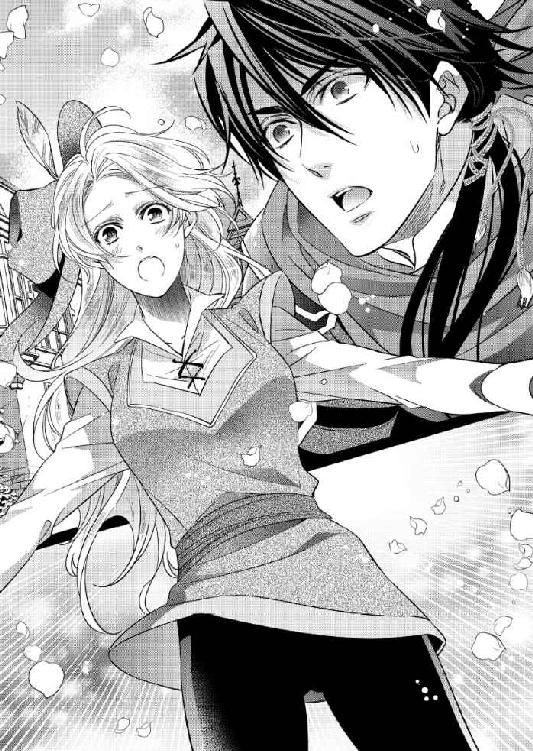

| 傲慢王とシンデレラ姫 ―愛の運命に結ばれて―【SS付】【イラスト付】 (ロイヤルキス文庫) | |
| 水島忍 | |
| (2010) | |
この物語はフィクションであり、実在の人物・団体・事件等とは、いっさい関係ありません。
イラスト・えとう綺羅
序 章
レイラは『太った雌鶏亭』という食堂の片隅に座る男を見たとき、何故だか身体が震えるのを感じた。
彼の姿は旅人のようだった。巡礼者だろうか。黒いマントを頭から巻きつけるようにしているから、顔は判りにくい。酔っ払いが陽気に騒ぐ食堂の中でうつむき、古ぼけたテーブルに置いてある肉料理を黙々と食べている彼は、一見、その場所に馴染んでいるかのように見えた。
しかし、彼がちらりと顔を上げたとき、その鋭い目つきが見えて、レイラはなんとも言えない不安を胸に感じた。
彼は普通の旅人ではない。まして、巡礼者なんかではない。
それは、レイラの直感だった。
彼はレイラに視線を向けた。彼の目がなんとも言えない輝きを放つ。目が合ったレイラは、まるで自分が生贄の子羊にでもなったような気がして、慌てて背を向けた。
レイラは顔を隠すために、頭からショールをかぶっていた。ここでは顔を知られているからだ。ただでさえ、明るい金髪に紫色の瞳は目立ってしまう。それに、こんな夜更けに自分みたいな若い娘が外出すれば、危険が伴う。できれば、誰の目にも留まらぬようにしたかった。
レイラは食堂の厨房のほうに声をかけた。
「城からの使いです。あの......こちらで作られたバターを分けてもらいたいのですが......」
店の女将は酒を盆に載せて運ぼうとしていたが、手を止めて、レイラをじろじろ見た。
「おや、誰かと思ったら......」
レイラが困った顔をすると、女将は肩をすくめた。
「バターだって？ そりゃあ、うちのバターは評判だけどさ。王様が欲しがってるんだろ？ もっと早い時間に取りにくりゃあいいのに」
「はい......。料理番が指示するのを忘れていたようなんです」
「こんな夜遅くに、あんたを使いに出すなんてね。料理番はあんたを苛めるのが楽しいんだろう」
彼女は吐き捨てるようにそう言うと、レイラを厨房のほうに手招きした。そして、拳の大きさのバターを油紙に包んでくれた。
「これ以上は無理だからね。料理番にもそう言っておきな」
レイラは女将に硬貨を渡した。女将はそれを受け取り、何故だかレイラの手を両手でギュッと握った。まるで、レイラを元気づけるように。
「疲れた顔をしてるよ。こき使われてるんだろ？ 身体を大事にするんだよ、お姫様」
最後の一言に、レイラは力のない笑顔を返した。
お姫様......ね。
かつて、レイラはそう呼ばれていたときがあった。
ヤークリン王国のレイラ王女、と。
国王の大事な一人娘として、城の中できらびやかなドレスに身を包み、行儀作法や勉強、ダンスの練習に明け暮れた。なんの苦労も知らなかったし、何不自由なく育ってきた。
だが、その幸せは長くは続かなかった。父王がある朝突然、眠りから覚めずに死んでしまった。毒を飲まされたのではないかという疑惑はあった。けれども、解明されずに、うやむやになってしまった。
この国は王族の男子が王位を継がなくてはならない。レイラには兄弟がいないため、王亡き後は、王の従兄弟が王位についた。
新しい王はレイラに、城で下働きをするように命じた。かつて王妃だったレイラの母が病に倒れ、その面倒を見る代わりに働くように強要されたのだ。
政敵に王位を奪われたというわけではなく、新王はレイラの親族の一人だ。普通ならば、先の王妃や王女はもっと大事にされるものではないだろうか。しかし、レイラは侍女モリーとも引き離されてしまった。もう一人の侍女ティアは、先王が亡くなる前に嫁入りのため故郷に帰っていたから、レイラは何不自由ない身の上から一気に転落することになった。
親子は城の片隅にある狭くて暗い部屋を与えられた。母はその部屋で、ほとんどベッドの上で過ごしている。たまに気分のいいときは外に出ることもあったが、落ちぶれた元王妃として好奇の目で見られるので、部屋の中から外を眺めることのほうが多かった。
母の世話は、レイラの乳母だったノリンがしている。新王は母の面倒を見てくれると言ったにもかかわらず、具合が悪くても侍医をなかなかよこしてもらえない。薬もたまにしか処方してもらえなかった。ノリンが泣きながら、ここはまるで牢獄だと言う。確かに、出入りは自由だが、牢獄のようなものだった。
召使いとなったレイラは、新王やその家族と顔を合わせることはほとんどなかった。朝から晩まで雑用に追われているからだ。特にレイラをこき使うのは、太った中年男の料理番だ。彼は意地が悪く、王女だったレイラに用事を言いつけたり、罵倒したりするのが楽しいのだろう。
城の中でレイラや母に同情する者もいる。しかし、それを表に出してしまうと、新王に咎められ、罰を受けさせられる。そのため、誰も味方をしてくれなくなった。料理番のように用事を言いつけることはなくても、遠巻きに見ているだけだ。
城から離れた場所で、食堂の女将のようにレイラに同情してくれる者はいる。レイラの父は国民から慕われていたからだ。逆に、新王は税の取り立てを厳しくし、貧しくて飢えたり、病に陥った者に対して、非道な仕打ちをするため、国民から嫌われていた。
けれども、レイラの父を褒め称え、新王の悪口を言おうものなら、城から兵がやってきて、囚われてしまうのだ。そして、レイラとその母に同情する者も同じ目に遭ってしまう。
レイラは女将に感謝しながらも、その手を放した。
「わたしに同情してはいけません。あなたの身が危険ですから」
女将の目が悲しげに細められたが、彼女は無理をして笑顔をつくった。
「ああ、そうだね。でも、困ったことがあったら、ここに来るんだよ」
レイラは微笑んだ。
「ありがとうございます。それでは、これで」
包みを持って、厨房を出た。だが、もうあの男は店の中にはいない。レイラは何故だか落胆しながら、外に出た。
辺りは暗い。しかし、王都の中でも城に近いこの界隈では、食堂や居酒屋があり、真っ暗というわけではない。レイラは暗い場所に慣れている。蝋燭もあまり分けてもらえないので、部屋で灯りをつけるのは母のためだけだ。レイラは暗闇の中でも動けるようになっていたから、この程度の暗さは平気だった。
早く城に帰りたい。疲れた足を休めたい。そんなことを考えながら足早に角を曲がったところで、誰かとぶつかった。相手は大柄な男で、レイラははね飛ばされた。
地面に転がったが、バターはちゃんと持っている。レイラはほっとした。
「なんだ、子供か。......いや、娘っこだ」
ショールがずれて、男に顔が見えてしまっていた。男は一人ではなく、三人いる。全員が酔っ払っているようで、しかも荒くれ者といった印象の男達だった。レイラは慌ててショールで顔を隠し、素早く立ち去ろうとした。
「おっと、待てよ。お嬢ちゃん、俺達とちょっと遊んでいかないか？」
レイラは男の一人に腕を掴まれた。
「放してください！ わたし、お城からのお使いなんです。すぐに戻らなくては......！」
実際、早く戻らねばならないのは確かだった。料理番が厨房で待っているわけではなかったが、少しでも遅いと、門番が嫌味を言うからだった。
しかし、男達はレイラを取り囲んで、どこかに連れていこうとする。
「やめて！ わたし......わたし、帰らなくてはならないの！」
レイラは恐怖を感じ、そこから逃れようとしたが、男達は笑いながら、身体に触れてくる。
「いい子だから、俺達と来るんだ」
「いやあっ......いや！」
後ろから抱きかかえられ、引きずるように連れていかれる。レイラは手足をバタバタ動かしたが、どうにもならない。せめて、この包みが硬い石ならよかったが、バターではどうにもならない。
わたし、このままこの男達に連れていかれる......？
恐怖で胸が締めつけられる。
そのとき、深みのある男らしい声が、レイラの耳に届いた。
「嫌がる女をどうするつもりだ？」
レイラはまだ身体を抱きかかえられていたが、男達は足を止め、その声の主に向き直った。
その男は、あの食堂にいた黒いマントを巻きつけた旅人だった。彼は物憂げに建物の外壁に寄りかかっていたが、レイラには獰猛な獣が獲物に襲いかかる前触れのように見えた。
彼は危険な雰囲気を発している。しかし、酔っ払った男達にはそれが判らないようだった。
「おまえには関係ないだろ？ 俺達はこの可愛い子ちゃんを連れて帰るのさ」
「そうだ。おまえが横取りしようったって......」
旅人は彼らの話を遮った。
「いや、横取りするつもりはない」
てっきり自分を助けてくれるつもりなのだと思っていたレイラは、絶望する。酔っ払いの腕の中でもがいたが、逆に押さえつけられるばかりだった。
ああ、でも、この男達の言いなりにはならないわ！ 絶対逃げ出すんだから！
「だが......嫌がる女は助けねばなるまい」
旅人は頭から身体まで巻きつけていたマントを、取り去った。
彼は黒いチュニックに黒いぴったりとしたズボン、そして、ブーツを身に着けていた。腰には太い革のベルトが着けてあり、そこに長剣を携えていた。彼は躊躇わずに剣を抜き、男達に向ける。
男達はレイラの身体を突き放し、同じように剣を抜いた。よろめいて、地面に転びそうになりながらも、息を止めて、彼らを見守る。
酔っ払い達が旅人に集中している間に、逃げてしまおうか。しかし、この旅人は三人の男を相手にするつもりだ。自分を助けようとしてくれているのに、恩知らずにも一人で逃げるわけにはいかない。酔っ払いは理性など失っているようだ。悪くすれば、この旅人は死んでしまうかもしれない。
もっとも、彼が危険な男だということは、雰囲気で判る。酔っ払いなど、ものの数ではないだろう。
実際、彼は剣を突き出した酔っ払いの一人を軽くいなして、腕を怪我させた。それだけで、酔っ払い達も怖気づき、逃げていった。
レイラは今度こそほっとした。あの食堂で目が合っただけの見知らぬ旅人が、自分を助けてくれるとは思わなかった。少しくらい悲鳴を上げたところで、この界隈の人間は他人を助けたりしないものだ。まして、旅人ならば、関わり合いになりたくないと去っていっても、おかしくはなかった。
彼は黒いマントを拾った。レイラははっとして、ずれて肩にかかっていたショールを頭からかぶった。やはり、顔は見られたくない。旅人ならレイラ王女を知らないだろうが、万が一、知られては惨めだからだ。
レイラは顔を隠すようにして彼におずおずと近づいた。
金色の髪も宝石のような紫の瞳も見られたくない。けれども、レイラ自身は彼の顔をもっと見ていたかった。整った顔立ちで、美男子と言えるかもしれないが、彼のしっかりした眉や引き締まった口元は、意志の強さを表しているようだった。
瞳の色は......はっきりとは見えないが、緑色のように思える。だが、彼はさっとマントをかぶり、身体に巻きつけ、鋭い目以外は隠してしまった。
残念に思うのは間違っている。レイラだって、顔を隠しているのだから。
でも......彼は素敵だもの。
素敵という表現が合っているかどうか判らない。そんな軽い言葉ではなく、もっと適切な言い方があるかもしれない。彼は助けようとしてくれたとき、レイラの心を奪ってしまったのだ。
今だって、彼の強い視線に晒されているだけで、心が揺さぶられてしまっている。だから、彼の顔をもっと見つめていたかった。
レイラは震える声でなんとか彼に声をかけた。
「あの......ありがとうございました。おかげで助かりました」
彼は重々しく頷いた。
「ああ。夜道は気をつけるんだな」
「はい......。あの......よかったらお名前を教えていただけませんか？」
彼は旅人だ。会うことはないだろう。そう思いつつも、彼の名前を知りたかった。
レイラは今まで異性と間近に接したことはない。王女として暮らしていた頃は、対等に自分に近づける男性はいなかったし、今は誰も自分に関わろうとしてこないからだ。下手に関われば、新王に罰を与えられる。
だから、もちろん男性を特に意識したこともなければ、好きになったこともない。
でも......。
レイラは目の前の男性を見つめた。マントに半ば隠された彼の顔を。
彼がどんな立場の人間で、何をしているかは知らない。これから先、彼と会うことはないだろうし、もし会えたとしても、やはりレイラはこれからもずっと下働きをして暮らすのだろうし、彼と接点はない。
だから、今だけの関係に過ぎないのだ。
それでも、これから先、彼の名前を心の中で大切にする。つらいことがあったとき、彼に助けてもらったという思い出のよすがとして、せめて名前を覚えておきたかった。
「名乗るほどの者ではない。では」
彼はレイラに背を向けて、去っていく。レイラは闇に消えていく彼の背中を見つめた。
もう会えない人......。
いや、会ったところで、二人の間には何もない。レイラは城の召使いで、彼はどこかの国の旅人だ。レイラが城の外に出かけなければ、会うことすらなかっただろう。何も起きるはずはなかった。
後ろで急にガサッと音がして、レイラは驚いて振り向いた。
そこには、黒猫がいて、レイラと目が合うと、一目散に逃げていった。
レイラは早く帰らなければならなかったことを、やっと思い出した。そうだ。こんなところで道草を食っている場合ではない。それに、ここでぼんやり立っていたら、さっきの酔っ払いが味方を連れてやってくるかもしれない。
レイラは闇に紛れるように路地を歩いていく。
そして、巨大な城壁に沿って歩き、跳ね橋の前までやってきた。門番がレイラを見て、小さな跳ね橋を下ろしてくれる。大きな跳ね橋は王族や貴族、領主などが使うもので、ごく一般の民は小さな跳ね橋を渡るのだ。
この城がかつてレイラの我が家だった。
しかし、今は牢獄のようにしか思えない。母が元気なら、ここで下働きをするように命令されても、それを受け入れなかっただろう。
でも......。
わたしは自分の選択を後悔したりしないわ。
レイラは王女のように顎を上げ、背中もすっきり伸ばして、跳ね橋を渡った。
早くバターを渡して、部屋に戻ろう。
そして、あの旅人のような男のことはきっぱりと心の中から追い出してしまおう。
レイラはそう考えていた。
第 一 章 傲慢王に奪われて
レイラが不思議な旅人と出会った半年後、ヤークリン王国は破滅した。
隣国のヴァリトスとの戦いに敗れ、城の外は敵兵に囲まれ、王は降伏の申し入れをした。もうすぐ、敵の王がここへやってくるということで、城は上から下まで大騒ぎしている。泣き叫ぶ者もいれば、放心している者もいる。王族や貴族が嘆くのは当然だが、兵士や女官、召使いも無事でいられるかどうか定かではないからだ。
ひょっとしたら、奴隷のように働かされるかもしれない......。
レイラはそう思ってみて、それなら今までとさほど変わらないと考えた。ただ、気になるのは、母のことだ。レイラは部屋に戻り、母やノリンと共に、静かに時を過ごしていた。
また新しい王がやってくる。彼は自分達のことをどんなふうに扱うのだろう。
いずれにせよ、レイラは母を元気にするためなら、なんでもするだろう。敵国の王に頭を下げてもいい。今までと同じように、ここで働かせてくれと懇願しよう。他に、方法などなさそうだった。この城の外に出れば、住むところも必要になる。食べ物も自分で調達してこなくてはならない。ここにいれば、生活に必要なものはある。
けれども、敵国の王がこの城を占拠したとして、ずっとここにいるわけがない。彼らが去ったとき、やはりレイラは自分と母の身の振り方を考えなくてはならなかった。以前、優しくしてくれた食堂の女将に頼ろうか。仕事がないかどうか訊いてみるのもいいかもしれない。
いや、王都だって、今までとは違う。女将にレイラの心配までする余裕はないだろう。
ああ、どうしよう......。本当にどうすればいいの？
城の住人はヴァリトスの兵を極端に怖がっている。そして、悪魔のようだと言われる王のことを。
今から五ヵ月ほど前に、ヴァリトスの前王が崩御した。だが、世継ぎの王子は即位した途端、自分の父親の側近に謀反の嫌疑をかけて、粛清したという。側近だけでなく、前王を偲び、自分に逆らう者に残酷な拷問をかけ、処刑したのだと。
それだけなら単なる隣国の恐ろしい話だった。ところが、その隙をついて、ヴァリトスを我がものとしようとしたのが、ヤークリンの王だった。戦いを仕掛け、一時は侵略も成功しそうになっていた。しかし、結局はヴァリトスに侵攻を許す羽目になってしまったのだ。
そして、今やヤークリンは惨めな敗戦国と成り下がった。王の家族は処刑されることを恐れ、一室に閉じこもっている。できることなら逃亡したいのだろう。けれども、城の周囲は敵兵に囲まれていて、逃げ出すことはできそうになかった。
レイラがぼんやり窓の外を見ていたとき、突然、部屋の扉が開かれた。
一瞬、敵兵かと思ったが、そうではない。王の身を守る近衛兵が五人、部屋の中にずかずかと入ってきたかと思うと、レイラの腕を掴んだ。
「放して！ 何をするの！」
「王がおまえに用事があるのだ。来い！」
「そんな......。今更、なんの用事があると言うの？」
王が権力を失うのはもう決まったようなものだ。彼らに従う義務など、レイラにはもうない。しかし、兵士は母にも手をかけようとしている。
「おやめください！」
ノリンが兵士を止めようとしたが、その兵士は剣を引き抜き、ノリンの身体を突き刺した。 レイラは悲鳴を上げた。母は蒼白な顔になって、震えている。
何故、彼らがこんなことをするの？
前王妃や前王女を守る義務が、彼らにはないとはいえ、ヤークリンという国はすでにないのと同じだ。それでも、まだ彼らは王に忠誠を誓っているのだろうか。
兵士の一人は母に剣を突きつけた。
「母親の命が大事なら、私達と一緒に来てもらおう」
レイラは震えたが、とにかく彼らの言うことを聞かなければ、本当に母が殺されてしまうかもしれない。理由が判らないが、彼らも必死なのだ。自分達の身を守るために、きっとレイラが必要なのだろう。
抵抗をやめると、レイラは腕を取られて連れていかれる。母は泣き声を上げ、レイラの名を呼んだが、どうしようもない。今は助けられない。彼らが母に危害を与えないのを、祈るしかなかった。
近衛兵に連れていかれたのは、王の居室だった。もちろん、かつては父の居室だった。
扉の向こうは父が生きていた頃よりも、ずっと贅沢な家具が置かれてある。壁には金箔が貼られており、きらびやかな部屋となっている。ヤークリン王はこのすべてを失うのだ。だが、レイラにはどうでもいいことだった。同情する気もない。
彼はレイラと母からすべてを奪ったのだ。それどころか、不当に貶めたと言ってもいい。ヴァリトスの王が悪魔なら、ヤークリン王だってそれに近い。今回のことは、レイラにしてみれば、ようやく裁きが下ったと思っている。
ヤークリン王──従叔父はレイラをじろりと見た。レイラは臆せず彼の目を見た。もう、彼に遠慮することはないのだ。そう思うと、こんなときなのに、喜びが胸に溢れてくる。
従叔父は咳払いをして、何か言いにくそうにしていた。
「おまえに命令がある」
「わたしはあなたの命令を聞く気はありません。あなたはもう敗残国の王で、権力はないに等しいからです」
それを聞いた従叔父は、顔を真っ赤にした。
「調子に乗るな！ 私の命令を聞かないと、おまえの母親を殺す。これはただの脅かしではないぞ」
レイラは部屋に残してきた母のことを思い出した。ただ、兵士がレイラを連れ出すために脅かしたのだと思っていた。しかし、本当はもっと深い理由があったのだ。
「......では、なんですか？ バターを取りにいけとか、井戸から水を汲んでこいとか、靴を磨けとか、そういったくだらないことですか？」
彼が王になり、レイラが召使いになった直後、そういう嫌がらせを彼とその家族に受けたものだった。直接顔を合わせることはあまりなかったが、それが彼らの嫌がらせだということは知っていた。だが、レイラは文句も言わずに、彼らの命令を聞いた。すべては母のためだった。
従叔父は悪態をついた。
「母親の命がかかっているというのに、よくそんな口が利けるな。......よく聞け。おまえはルイーザの身代わりを務めるんだ」
「ルイーザの......？」
彼女は従叔父の娘、つまりレイラとははとこの関係にある。レイラと同じ十八歳で、髪も目も同じ色をしている。背格好も確かに同じくらいだが、二人の顔を見間違える者はいないだろう。ルイーザは自信たっぷりの華やかな美女で、レイラも綺麗だと言われるが、どちらかというと優しげな顔立ちで、華やかさに欠ける。
「そうだ。ヴァリトス王の使いは......私の可愛いルイーザを王の花嫁にすると言ってきた」
レイラは眉をひそめた。
ヴァリトスの王は残虐な悪魔のような男だという噂だった。てっきり、王族を処刑するか、牢に閉じ込めるものだとばかり思っていた。それなのに、敗戦国の王女を花嫁にするのだという。
「そうだ。きっと、ルイーザが美女だという噂がヴァリトスにも流れていたのだろう。あいつはルイーザさえ引き渡せば、私達をよその土地に追放するだけで許してやると言っている」
レイラにはヴァリトス王の考えていることが判らなかった。美女が欲しいのなら、彼は好きなだけ奪う立場にいる。別に取引する必要はないはずだった。
王族を処刑しない代わりに、王女を花嫁にするということは、彼女は人質になるということだ。そうすれば、国を取り返すため反乱を起こせないからだ。しかし、王族すべての命が助かるなら、ヴァリトス王の提案に乗ったほうがいいかもしれない。
けれども、犠牲になるのがルイーザではなく、この自分だということは納得がいかない。
噂どおりならば、ヴァリトス王は冷酷で残虐な人間だ。ヤークリン王女を優しく扱うわけがなかった。それどころか、囚人のように扱ってもおかしくはない。
レイラの頭の中に、やっとルイーザの身代わりをするということが染み込んできた。そして、それに伴う危険や代償についても。
疑われずに無事花嫁になったとしても、もし何かでヴァリトス王の意に背けば、暴力を振るわれ、拷問にかけられ、処刑されてしまうかもしれない......。
近隣国の王子と王女が結婚するのは、よくあることだ。もちろん、恋愛などは関係なく、国のための結婚だ。しかし、その場合、花嫁にもちゃんとした国という後ろ盾がある。だから、花嫁が手荒な真似をされることはないし、まして処刑などあり得ない。
しかし、ヤークリンという国はなくなるのだから、なんの後ろ盾もないことになる。どんな扱いをされたとしても、文句も言えないのだ。ただ、我慢するしか......。
「わ、わたしには無理......」
「無理ではない。やるのだ。命令だ。そうしなければ、おまえの母親が......どうなるのか判っているだろうな？」
レイラは身震いをした。
母のためなら、なんでもする。けれども、自分の一生を踏みにじられる結婚をこういう形で選ばなくてはならないのだろうか。
それに、花嫁にすると言っているが、それは本当のことだろうか。正式な結婚もせずに、弄ばれるかもしれない。敗戦国の王女を娶る意味が、人質以外、レイラには判らなかったからだ。
それとも、ルイーザほどの美女であれば、花嫁にする価値はあるのだろうか。
気がつくと、従叔父はレイラの肩を掴んでいた。
「いいな？ 上手くやれ。おまえの母親のために」
レイラは唇を噛み、頷いた。ルイーザの身代わりなど嫌だし、悪魔のような王と呼ばれている男に嫁ぎたくない。
でも......。
わたしにはこの道しかない。こうすることしかできないのよ。
レイラは女官に手を取られ、どこかに連れていかれる。きっと今からルイーザに変身させられるのだ。
わたしは彼女のような美女にはなれないのに。
夜になり、レイラはルイーザのきらびやかなドレスに身を包んでいた。
薄いピンク色の絹のドレスで、レースの飾りがたくさんついている。こんな綺麗なドレスを着たのは、久しぶりだった。下働きの身分に落とされる前は、いつも上等なドレスを当たり前のように着ていたことを思い出す。
レイラはルイーザの部屋で椅子に座っていたが、どうにも落ち着かなかった。もし、自分がルイーザでないと知られたら、どうなるのだろう。その場で斬り殺されてしまうだろうか。それとも、牢屋に入れられてしまうかもしれない。
鏡の中を覗くと、確かに王女のような格好をした自分がいた。けれども、ルイーザのような華やかさはない。荒れた手は手袋が隠しているものの、やはり今の自分が王女ではなく、召使いに見えるのではないかと考えてしまうのだ。
それに、胸元が開いていることが気になる。胸の谷間まで見えていて、レイラはこんなドレスを着たことはなかったのだ。
城の中は一時に比べれば落ち着いていた。ルイーザが花嫁になれば、王族は追放されるだけで済むという噂を、みんなも聞いたからだろう。王族が処刑されないのなら、他の者が処刑されるはずもない。
レイラとルイーザの入れ替わりは極秘扱いで、一部の女官しかこのことは知らない。だから、レイラはずっとこの部屋に閉じこもっていた。反対に、ルイーザは女官の格好をして、王妃の部屋にいるようだった。
レイラは恐ろしい王の花嫁になるのだ。だが、母の命がかかっている。母を救うためなら、我慢するしかない。今まで下働きの身分に落とされても、懸命に雑用をしていたように。
今度は別の我慢をするだけの話だ。けれども、もし、ヴァリトスの王に自分がルイーザではないと知られたら......。
王を謀った罪で、処刑されてしまうかもしれない。そのことを考えると、怖くてならなかった。
そもそも、彼はわたしの顔を見て、評判の美女ではないと気づくのではないかしら。
ルイーザではないと判らなくても、美女ではないから、こんな女と結婚したくないと思うかもしれない。
レイラは眉を寄せて考えた。もし、そうなったら、ヤークリン王やその家族はどうなるのだろう。追放で済むのは、ルイーザを花嫁にした場合のみの話なのだろうか。
とはいえ、従叔父やその家族のことまで、レイラは考える余裕がない。大切なのは母だけだ。今、母がどうしているのかを考えると、胸が痛くなってくる。ノリンが目の前で殺されてしまったこともショックだった。
ノリンはレイラの乳母で、母の世話をずっとしてくれた人だ。母にも等しい存在を、あんなふうに失わなくてはならなかったなんて......。
レイラが悲しみに沈んでいると、ふと城の外が騒がしくなった。窓から外を見ると、城門が開き、そこからたくさんの敵国の兵士が入ってきていた。
その中に、悪魔のような王がいるのだ。そして、従叔父は彼を迎えに出ているはずだ。衛兵も近衛兵も、武器を取り上げられるだろう。
だとしたら、母は......？
レイラは立ち上がった。だが、母があのままあの部屋にいるとは限らない。この姿で城をうろつけば、きっと身代わりを立てる計画は台無しになる。それに、こんな格好では、逃げることもできない。レイラの服は女官がどこかに持ち去っていた。
不意に、部屋の扉が開いた。レイラはぎくりとして振り向く。一人の女官が入ってきて、レイラの手を取った。
「あの......」
「そろそろご用意をなさいませ、ルイーザ姫」
レイラはもう逃れられないのが判った。女官に連れられて、謁見室へと向かった。玉座があるが、そこに座るのはもちろんヴァリトスの王なのだろう。そこが父の椅子だったことを思い出すと、切ない気分になってくる。
王女から下働きの身分となり、今度は王女の身代わりとなり、次は敵国の王妃となるのだ。これも運命なのだろうか。あまりに過酷で、つらすぎる。身分は王妃になっても、夫が残虐な王なら、息を潜めるように生きるしかない。いっそ、王に早く飽きられればいいのだが。
廊下から男性の話し声がする。力強い大きな声だが、レイラはなんとなくその声を聞いたことがあるような気がした。その声は徐々にこちらに近づいてくる。
誰なの......？
謁見室の扉が開き、その声の持ち主が姿を現した。
レイラは彼を見て、驚いた。
長めの黒髪を後ろで束ねていて、顔立ちは整っているものの、目つきは鋭い。瞳の色は緑だった。
それは半年ほど前に、レイラを夜道で助けてくれた旅人によく似ていた。明るいところで見てはいなかったが、彼のことは忘れられない。
しかし、あのときの出で立ちとはずいぶん違う。
あのときは黒ずくめの服装で、腰に長剣を携え、黒いマントで顔や姿を隠すようにしていた。だが、今日は上質な生地の服を着ていて、何よりきらびやかな刺繍が施された上着を着ている。
レイラはふと我に返った。
この人が......彼なの？
とてもよく似ているが、目の前の男はただの兵士ではないようだった。ひょっとしたら、かなり上の階級の指揮官なのだろうか。いや、彼の後ろに何人もの兵士が控えている。指揮官というより、もっと上の身分の人間に違いない。
女官がレイラに声をかけてきた。
「ルイーザ姫、ヴァリトス王の御前ですよ」
ヴァリトス王ですって......！
レイラは混乱しながらも、膝を折って、スカートを摘んでお辞儀をした。
自分の勘違いなのか、それとも......。
「おまえがヤークリン王の娘、ルイーザか」
声を聞いて確信した。彼はやはりあのときの旅人のようだ。それなのに、ヴァリトス王だという。
彼はレイラに近づき、顎に手をかけた。しげしげとこちらの顔を覗き込んできたが、彼の顔には嘲りの表情があった。
彼がルイーザを花嫁にしたいと言ってきたのではなかったのだろうか。それなのに、どうしてこんな蔑んだような表情をするのか判らない。
ひょっとして、わたしがルイーザではないと判ったのかしら？
レイラは不安になった。もしかしたら、あのとき助けた娘だと気がついたのかもしれない。嘘をついていると判ったら、ただでは済まないに決まっている。
彼はルイーザの顎からあっさりと手を放した。
「親兄弟に別れを告げるがいい。明日、おまえは私と共に、ヴァリトスに向かうことになる」
「あ、明日......？」
心の準備も何もないまま、敵国に連れていかれてしまうのだ。レイラは彼が怖くてならなかった。かつて助けてくれたのだから、そんなに悪い人ではないはずだと思いつつも、レイラが聞いた噂はひどいものばかりだ。
彼はフンと鼻で笑った。
「明日では都合が悪いか？ だが、おまえの都合など知ったことではない」
「でも......この城を占拠したばかりで、いろいろすることがあるのではないでしょうか？」
「いろいろ？ 略奪とか、そういったことか？ 我々は野蛮人ではない」
凍るような眼差しをレイラに向け、彼はきっぱりとそう言った。レイラは自分の発言がそんなふうに捉えられて、慌ててしまった。
「いえ、そういうつもりじゃなくて......」
ただ、少しでも出発を引き延ばしたくて言ったのだ。何も考えもせずに。
「そうじゃなければ、なんだと言うんだ？ この城には有能な者を指揮官にして、置いておく。彼が後処理を万事上手くやってくれるだろう」
後処理には何が含まれるのか、考えると恐ろしい。処刑や追放などが入っているのは間違いない。
「王を追放しても、国民が新しい王を受け入れるかどうかは判りません。まして、敵国の王を。時間をかけて、受け入れられるようにしなくてもいいのですか？」
彼は眉をひそめた。
「そんなことは、おまえの知ったことではない。まったく関係ないことだ」
「でも......わたしがあなたの花嫁になるのなら......」
「花嫁だと？」
彼は吠えるように大声で笑った。彼の後ろに控えている兵士達も失笑している。
わたしは何かおかしいことを言ったのかしら。
戸惑っていると、彼は口元に嘲りの笑みを浮かべたまま言った。
「花嫁にする予定はない。おまえは私の愛妾になる。言わば、人質のようなものだ」
愛妾......。人質......。
その瞬間、レイラは従叔父に騙されたのだと悟った。娘を愛妾に差し出せと言われて、レイラを身代わりにすることを考えついたのだ。
ヴァリトス王は残虐だという噂はあっても、王には違いない。ルイーザなら、追放の憂き目に遭うより、贅沢な暮らしができる王妃という立場を選んだだろう。そうでないのは、彼が花嫁などではなく、愛妾を求めていたからだ。
呆然としているレイラを見て、彼は尋ねてきた。
「花嫁だと聞かされていたのか？」
レイラは顔を強張らせながら頷いた。一瞬、彼は同情するような顔になったが、すぐに元のきつい表情に戻った。
「おまえの評判は知っている。美貌だけが取り柄の、贅沢で我儘な女だ。そんなおまえの意見など、私は聞こうとも思わない。その口を閉じて、自分の運命を受け入れるのだな」
レイラの胸の奥に鈍い痛みが走った。
今更、自分がルイーザではないとは言えない。嘘だと判ったら、彼はこの首を斬りかねないからだ。それが判っていて、従叔父はすべてを仕組んだのだろう。
ああ、でも、逃れるすべはないのね......。
レイラは暗澹たる気持ちになった。
明日、この城から去らねばならない。花嫁どころか、彼の愛妾になり、弄ばれてしまうのだ。
レイラはこの城で生まれ、育ってきた。つらいこともあったが、ここから離れるのは、悲しいことだった。そして、これからの人生はもっとつらいことになるのだろう。
やっと、自由の身になれたかと思ったのに。
ああ、でも、お母様のことは......。
母を置いて、城を出られない。もうノリンもいない。母を一人で残していけば、病がひどくなって、死に至るだろう。
そんなことは耐えられない！
レイラは目の前の彼を見つめた。彼は残虐な王だ。けれども、もし彼がレイラを助けてくれたあの人なら、力になってくれるかもしれない。
いや、たとえ拒絶されても、レイラは頼んでみるしかなかった。
「お願いがひとつだけあります」
「ひとつだけ......？」
彼はじろりと睨みつけてきた。拒絶されるかと思ったが、すぐに彼は口元に笑みを浮かべた。決して優しい笑みなどではなかったが、それでも充分だった。
「はい、ひとつだけ。乳母を一緒に連れていっていいでしょうか？」
母だとは言えないので、乳母ということにする。傍に控えている女官は顔をしかめていたが、まさかレイラの口を塞ぐわけにもいかないだろう。
「乳母だと？ 今更、乳母が必要な年齢ではないだろう？」
レイラの頬に赤みが差した。
「乳母は病に倒れています。このままだと、放置されて、死んでしまいます。わたし、乳母が大事なのです」
彼に人間らしい心があるのかどうか判らない。しかし、レイラは最後の手段として、彼の良心に訴えるしかなかった。
彼はじっとレイラの顔を見つめていたが、やがて肩をすくめた。
「判った。連れていってやろう」
「ありがとうございます！」
レイラは嬉しくて、思わず彼の手を取ったが、すぐに振り払われてしまった。
「ただし、私を操れると思わないでほしいな」
冷たい調子で突き放されて、レイラの胸は何故だか痛みを感じてしまった。
「はい......。判りました」
彼は素っ気なく頷いた。
「では、明日までに準備を整えておくように。あまり荷物はいらない。ドレスはいずれここに残った者が届けてくれる。とりあえず必要なものだけ荷造りするといい」
「あの......」
彼がすぐに踵を返そうとするので、レイラは慌てて声をかけた。残虐な王と噂されているはずなのに、荷物の心配までしてくれるとは思わなかった。彼はやはりあのとき助けてくれた男性なのだ。
彼は振り向き、冷たい視線を向けてくる。
「わたし、お名前も伺ってなかったから......」
一瞬、彼は驚いたように眉を上げた。
「私の名を知りたいのか？」
レイラは頬を染めた。助けてくれたときも、名乗らずに行ってしまった。だが、また会えた。これからの自分の運命がひどいものだと判っていたが、いくらなんでも相手の名前すら知らないなんて、考えられない。
「......ウィルフレッドだ」
「ウィルフレッド......」
レイラはその名を噛み締めた。
彼はわたしの......ご主人様になるのね。
花嫁ではない。それに劣る存在として、扱われてしまうのだろう。
ウィルフレッドは改めてレイラの顔をじっと見つめた。目と目が合い、レイラはあの食堂で目が合ったときのことを思い出した。彼はあのとき一体、何をしていたのだろう。考えてみれば、ずいぶんおかしな話だ。彼は身分を偽り、ただの旅人であるようなふりをしていたのだ。
「ルイーザ......」
彼はレイラの偽りの名前を口にした。そして、突然、レイラの肩を引き寄せると、唇を重ねてくる。
みんなが見ている前で、キスをされるとは思わなかった。
レイラは拒絶したかった。一国の姫を人前でこんな目に遭わせるなど、これは侮辱に等しい行動だ。けれども、レイラは動かなかった。いや、動けなかった。
驚きすぎたということもあるが、キスが嫌ではなかったことが原因だった。
彼のキスは思いのほか、とても優しくて......。
大した価値もない亡国の姫に、彼はどうしてこんなに優しいキスをしてくるのだろう。
彼の舌がレイラの舌に絡んでくる。唇を甘く吸われても、レイラは抵抗すらしなかった。
気がつくと、唇は離れ、彼は一歩下がった。そして、頬を紅潮させたレイラを見つめる。
「明日会おう」
彼はそう言うと、控えていた兵士と共に、今度こそ謁見室を出ていった。残されたレイラは女官に腕を掴まれる。
「どういうつもりですか？ 乳母を連れていくなんて......」
「母のことよ。わたし、ルイーザのお芝居は続けるわ。今更、嘘だなんて言ったら、あのヴァリトス王に殺されるかもしれないから。でも、母のことが心配なの......。ねえ、お願い。母は今、どこにいるの？」
レイラは必死で女官に頼んだ。彼女は今の王妃についているが、レイラがあまりに必死で頼むので、心を動かされたようだった。
「いいわ。わたしがなんとかしましょう」
「ありがとう！」
礼を言うと、女官は溜息をついた。
「どのみち、わたし達だって、どうなるのか判りませんものね。あなたを庇う者を罰する方々は追放されるのですから、命令を聞いていても仕方ないし。近衛兵だって、そう。それに、武器を取り上げられるから、もうあなたのお母様を見張ってはいられなくなるわ」
今、城は混乱の中にあるのだ。今までどおりに過ごしていた人達も、みんなそろそろ現実を受け入れ始めてきて、これからのことを考えねばならなくなってきている。そして、追放される王は、自分のことに精一杯になり、他の者のことなどどうでもよくなっているだろう。
もう、すべてが変化している。元には戻らない。
レイラはルイーザになりすまし、残虐な王の愛妾となる。気に入られなければ、斬り殺されてしまうかもしれない。
それが運命だった。
自国の料理番につくらせた夕食を摂ったウィルフレッドは、食堂から自室と決めた部屋に戻り、ゆっくりと酒を飲みながら、ルイーザのことを考えていた。
美貌の姫だと噂を聞いていたが、なるほど美しい娘だった。
名前を訊かれたときに、ウィルフレッドの胸は騒いだ。頬を染めた顔が、ずっと捜していた『彼女』に少し似ていると感じたからだ。病の乳母を心配する優しさに心を動かされていたこともあるかもしれない。
そして、実際に名前を呼ばれたときに、あの『彼女』と再会したような錯覚を覚えて......。
気がつくと、ルイーザを抱き寄せ、キスをしていた。
『彼女』と出会ったのは、今から半年ほど前のことだった。ヤークリンにはただの旅人に身をやつして、王都を訪れていた。あの頃はまだ父が生きていて、もっと身軽に動けたのだ。
ヤークリンという国のことを知るのに、あの旅は役立った。国民性や城の守りについても学んだ。
そして......。
ウィルフレッドは夜更けの食堂で見かけた彼女のことを思い出した。ショールを頭からかぶって、美しい顔を隠そうとしていた。きっと夜道を歩くためだろう。顔を隠していても、酔っ払いに絡まれていた。ウィルフレッドはただの旅人として目立つことはしたくなかったが、思わず助けに入ってしまった。
酔っ払いのせいで、ショールが外れていて、彼女の顔が見えた。暗がりだったということもあって、はっきりとは判らなかったが、ちらりと見えたその顔は美しかった。そして、ルイーザと同じ金髪だったようにも思う。
震える声で礼を述べる彼女の肩を引き寄せて、心配ないと慰めてやりたかった。だが、どうせ行きずりの関係でしかない。深入りすれば、自分の正体も知られてしまうかもしれない。
だから、名前も告げずに別れたが、後になって悔やんだ。こちらの名は告げずとも、彼女の名前は聞いておけばよかった、と。
そう。ウィルフレッドは彼女にもう一度会いたかったのだ。
この半年間、いろんなことがあった。父が亡くなり、ウィルフレッドが王となった。そして、以前から、父に取り入る怠惰で狡猾な側近の存在が邪魔で仕方なかったから、これを機会に粛清することにして、城から追放した。彼らは国を売るような真似を何度もしていたが、側近のことを信じていた父は、彼らに批判的なウィルフレッドの意見をいつも却下してきたのだ。だが、自分が王位を継いだからには、そんな輩をいつまでものさばらせておくわけにはいかなかった。
しかし、彼らはその腹いせに、国内外に悪い噂をばら撒いた。ウィルフレッドが悪魔のごとき暴君だ、と。噂によれば、側近を次々と処刑したのだそうだ。しかも、胸の悪くなるような拷問もしたらしい。
どうやら、それを今も信じる国民はいるという。もっとも、その噂はヤークリンとの戦いで有利に働いた。残虐王自らが戦いに出ていると聞いたヤークリンの兵士達は、抵抗したら、無残に殺されるに違いないと怯えたのだ。相手は次々と降伏してきて、こちらにおもねってくる。これほど楽なことはなかった。
しかも、ヤークリン王はあまり評判がよくない。王に対する忠誠心もないのだから、死にもの狂いで戦うはずもない。
ウィルフレッドは王都に入って、城を取り囲んだ。そして、その間にあのショールの娘を捜そうとした。
食堂の女将が親しそうにしていたので、娘のことを訊いたが、あまり詳しいことは知らないようだった。ただ、時々、バターを買いにくるのだという。名前も家も知らないと言う。ひょっとしたら隠しているのではないかと、金貨を見せびらかしてみたが、それでも首を振ったので、やはり何も知らないのだろう。
だから、食堂の周辺にあの娘が住んでいないか捜したが、やはり見つからなかった。あのとき彼女を家まで送り届ければよかったと思ったが、今更どうしようもない。
もちろん、残虐なヴァリトス王がやってくると聞いて、王都を逃げ出した可能性はある。日を置いて、誰かに彼女の行方を捜させようか。
ウィルフレッドはそう思ったが、すぐに自分が二つの国を統治しなければならないことを思い出した。いつまでも、彼女に心を残してはいけない。捜してみても会えなかったのだから、縁がなかったということなのだ。もう忘れなくてはならない。
人質代わりの愛妾に、彼女の面影を探すこともやめるべきだ。
ルイーザは美しいだけで、甘やかされた高慢な女だという。国民全体に広がっている噂ではないが、城で下働きをしている者達などが外で愚痴を洩らしているらしい。それから、城に出入りしているドレスの仕立て屋は、彼女に受けた仕打ちを並べ立て、かなり口汚く罵っていた。
それでも、王女は王女だ。彼女は人質になる。いかにヤークリン王の評判が悪くとも、無闇に処刑するつもりはない。処刑しても、そのことが遺恨となるのなら、すべきではないのだ。
ただ、高慢な女には我慢ならない。そのことは、これから教育していかなくてはなるまい。
ウィルフレッドは彼女の紫色の澄んだ瞳を思い浮かべた。彼女は利口な女のようだ。花嫁ではなく、愛妾にならなければならないと聞いて、ショックを受けていたが、愚かなことは口に出さなかった。そして、ウィルフレッドに対して、毅然としながらも、嫌味な態度は取らなかった。しかも、彼女は乳母を連れていきたいと申し出た。
乳母を心配する優しい女の真似をするとは......。
なかなか一筋縄ではいかないかもしれない。けれども、あんな女に手綱を握られて、たまるものか。主導権を握るのは、自分のほうなのだ。
今頃、彼女は何をしているのだろう。親や兄弟と別れを惜しんでいるのか。それとも、ドレスや宝石をできるだけ持っていこうと、女官に荷造りを命じているのかもしれない。
ウィルフレッドはふと思いついて、立ち上がった。彼女の部屋は城を案内してくれた女官に聞いている。ウィルフレッドが金貨を渡しながら質問すると、女官は眉をひそめながらも答えたのだ。
金貨一枚で売られる姫君か......。
まあ、どのみち、私は彼女を愛妾にすると公言しているからな。
しかし、彼女が汚れた身体でないかどうかくらいは、確かめておいたほうがいいだろう。高慢な姫が夫でもない男に身体を触れさせるとは思わないが、念のためだ。一国の姫でありながら純潔ではないのなら、男を籠絡するすべを知っていてもおかしくはない。もしそうなら、それ相応の待遇になる。
ウィルフレッドはルイーザの部屋に近づいた。
城を守る衛兵はもういない。王族を守る近衛兵もいないのだ。全員、武器を取り上げて、城から追い出した。指揮官だけは捕らえているが、必要でなければ処刑はしないつもりだ。無用な血を流せば、恨まれるだけだからだ。
結局のところ、この国の王は尊敬もされておらず、敬愛の念を覚えている兵士はほとんどいなかった。慕われているのは前王で、今の王は忠義に値しないと思われている。そもそも、兵士はヴァリトスに侵攻したいと思っていなかったのだ。王の命令に従い、嫌々ながら攻め入った。そんな状態なら、容易く撃退でき、なおかつこちらが侵略できたのも判る気がする。
彼らが大切なのは、自分とその家族だけで、国王など守る気はなかった。こちらに寝返る者さえいたのだ。籠城も大してもたなかった。彼らの望みは、早く家族の許に帰ることだった。そして、新しい王であるウィルフレッドに仕えてもいいと思っている。
ヤークリン王とは、どんな男なのだろう。娘を簡単に差し出すような父親であることは判っているが、何が理由でそれほどまでに国民に嫌われているのだろう。残念ながら、ウィルフレッドの調査はそこまでしか進んでいなかった。
ウィルフレッドはルイーザの扉のノブに手をかけた。すると、そのノブが動いた。鍵もかけていないのだ。傍に控えているはずの女官も近くにはいなかった。もう、この時点で、彼女は守るべき王女でもなんでもないのだろう。
扉をそっと開いてみた。ノックするべきかもしれなかったが、自分は彼らの国を侵略した王だ。暴君のように振る舞うつもりはないものの、部屋に入るくらいは勝手ではないかと思った。この城は自分のもので、ルイーザは愛妾なのだから。
ウィルフレッドは部屋にそっと入った。辺りは暗いが、自分は夜目が利く。中に進んでいき、窓にかけてあるカーテンを開いた。
月光が部屋に差し込み、豪華なベッドで柔らかな夜具に包まれて眠るルイーザの姿があった。
ウィルフレッドが近づいても、まだ目を覚まさない。朝になれば、自分と共にヴァリトスに旅立つというのに、恐れはないのだろうか。それとも、王女だったときと同じように、ちやほやされて甘やかされると思っているのか。
もし、そう思っているなら、彼女の間違いを早めに正さなくてはならない。ウィルフレッドは甘やかされた高慢な女など、愛妾にもしたくない。
従順な女性でないなら、そう仕向けるまでだ。
ウィルフレッドは彼女の髪に触れた。その柔らかい絹のような手触りに、一瞬、ゾクッとする。しかし、髪の手触りごときで、彼女に夢中になったりするものか。彼女の頬に手を当てると、そのまま唇を奪った。
レイラは夢を見ていた。
あの旅人の夢だ。黒いマントをまとい、黒髪の緑の瞳を持つ男。剣を振り、不埒な男達を追い払うと、彼はレイラのほうに近づいてきた。
彼の眼差しはとても熱くて、レイラの胸は高鳴った。頬に手を当てられ、唇が近づいてくる。触れ合う唇にドキドキしたが、彼はそれだけではなく舌を差し込んでくる。
最初はどこか遠慮がちだったキスも、そのうちに息もできないような激しいものになってきて......。
レイラははっと目を覚ました。
自分が本当にキスをされていることに驚いた。一瞬、何がどうなっているのかが判らず、混乱する。
わたし、確かルイーザの寝室で眠りについたはずだったわ。もちろん、そのときは一人だった。それでは、今、わたしにキスをしているのは誰なの？
レイラはわけが判らず、闇雲に自分にのしかかっている相手を押しのけようとした。だが、両手首を掴まれて、シーツに押さえつけられる。
そのとき、部屋のカーテンが開き、月光が入ってきていることに気がついた。
彼は......。
あの旅人。いや、そうではない。今の彼はヴァリトスの王ウィルフレッドだった。
「あなた......何をしているのっ？ どうしてここへ？」
彼はニヤリと笑った。
「おまえは私の愛妾だ。少しくらい確かめてみても、悪くはないだろう？」
「た、確かめるですって？ どういうこと？」
レイラは彼が何を言っているのか、よく判らなかった。寝起きで頭が混乱しているからだろうか。
「つまり......たとえば、おまえが純潔かどうか......」
レイラの全身はカッと熱くなった。もちろん、頭も熱くなる。こんな侮辱をされたのは、生まれて初めてだった。
「も、もちろん純潔に決まってます！」
下働きの身分となってから、いろんな男に声をかけられたり、それこそ無理やりどこかに引きずり込まれそうになったことは、何度もある。しかし、レイラは必死に自分を守ってきた。運命に翻弄されているからこそ、自分の行動には気をつけなくてはならない。結婚するまで純潔を守るのは、当然のことだった。
もっとも、今は結婚どころではない。過酷な運命が自分を待っている。レイラの純潔は、この王に奪われてしまうのだ。
「おまえの噂は聞いている。気まぐれで浅はかで、高慢な威張りやだ。しかも、時には残酷にもなる。特に目下の者に対しては」
それはルイーザのことだ。レイラはそうではないが、ここで違うとも言えなかった。
「そんなおまえにもたったひとつ取り柄がある。この美貌だ」
彼が真顔でそう言ったので、レイラは驚いた。ルイーザの顔が美貌と称されるのは判るが、自分の顔がそんなふうに表現されるとは思わなかったのだ。
ルイーザ王女は美女だと聞いていたので、そんな気がしているだけだろう。後で、よく見たら、大したことはなかったと、彼はいずれ後悔するかもしれない。
「だが......その身体が清らかであるかどうかは、また別の話だ......」
レイラはいきなり片方の胸を掴まれて、息を呑んだ。夜着は薄物で、下には何も着けていない裸だ。こんな簡単に胸を掴まれて、レイラは顔を真っ赤にして、何も言えなくなる。
屈辱だわ......！
たとえ、彼が夫だとしても、こんな乱暴な真似をされたくない。まして、彼は夫でさえないのだ。将来、そうなる予定もない。
レイラは悔しさに唇を噛んだ。
「手頃な大きさだな」
彼に乳房の大きさを評価されている。身体つきのことを言われるだけでも恥ずかしいのに、胸の大きさのことを口にされて、たまらなく恥ずかしかった。
「手頃なんて......」
「私の掌にぴったりと馴染む大きさだからだ」
彼は言葉どおり、乳房を包んでみせた。確かに、彼の掌にすっぽりと包まれて、レイラは変な気分になってくる。
「こうして......撫でたり、揉んだり......舐めたり、吸ったりするのに、ちょうどいい大きさだということだ」
「舐めたり、吸ったり......？」
レイラは戸惑うような声を出した。胸を吸うのは、赤ん坊だけではないのだろうか。
ウィルフレッドはふっと笑うと、夜着の胸元に手をかけ、そこを縦に引き裂いた。レイラは小さな悲鳴を上げる。
「何するの！」
レイラは必死で胸を隠そうとしたが、彼に手を払いのけられる。その隙に、彼はレイラの裂けた夜着を左右に開いた。
両方の乳房が晒されて、レイラは息を呑んだ。
「美しい胸だ......。隠すことはない」
「いや......。やめて。見ないで......」
弱々しく訴えたが、彼は無視して、両方の乳房を掌に包んだ。そのまま揉まれて、レイラは眩暈がするような羞恥心を覚えた。
こんなことは......夢だわ、きっと。現実であるはずがないもの。
しかし、胸に彼に手の感触をはっきりと感じる。
乳首を指で摘まれたのに、レイラは何故だか身体の奥に痺れるような感じがして、戸惑った。
「乳首を弄られると、気持ちがいいか？」
レイラの反応を見て、ウィルフレッドが意地悪く尋ねてくる。レイラは顔を真っ赤にして、首を振った。
「そ、そんなこと......あるはずないじゃないの！」
「さあ、どうだろうな。それなら......こちらはどうだ？」
彼は顔を近づけてきて、乳首を口に含んだ。その部分だけが温かくなり、不思議な気分になってくる。しかし、それだけならまだよかったかもしれない。次に感じたのは、彼の舌だった。
乳首に舌が絡みついている。レイラはショックを受けて、思わず身体を揺らした。
「あ......ぁ......」
やめてと言いたかったが、言葉にならない。それに、言ったところで、彼がやめてくれるとは限らない。いや、きっとやめないだろう。彼は自分がやめようと思うまで、続けるに決まっている。
舌で乳首が転がされる。下半身が何故だか熱くなってくる。どうしようもなくて腰を蠢かせていると、彼が不意に乳首をキュッと吸った。
「ゃあぁっ......ぁっ！」
胸がドキドキしてくる。彼の行動にも驚いたが、もっと驚いたのは自分の反応に対してだった。
わたし......。
どうしたらいいの？
彼に胸を弄られていると、とても気持ちがいいのだ。彼の言うとおりだった。
でも、こんなこと......信じられない。
胸を露わにされて、男性に見られたのは初めてだった。そんな羞恥を感じている中で、どうして気持ちよくなったりできるのだろう。
けれども、脚の間が熱く痺れている。それどころか、疼きのようなものを感じていた。
自分でもよく判らない衝動があり、腰を揺らしていく。彼は両方の胸に、同じように舐めたり吸ったりして、愛撫していく。レイラはもはや胸を隠すことも忘れて、ただ彼のその愛撫に身を任せることしかできなかった。
ふと、彼は顔を上げた。じっと顔を見つめられていることに気づいて、頬を赤らめる。
「さて......そろそろ調べてみなくてはな」
「え......」
彼はレイラの夜着の裾を摘んで、その中へと手を差し込んでいった。
「あ......いやっ......」
太腿を撫でられて、思わずしっかりと脚を閉じようとしたのだが、無理やりこじ開けられてしまう。両脚の間に、彼の手が触れてくる。
「やぁっ...ん......」
彼の指がレイラの大事なところに触れている。それだけでも失神しそうなくらいに驚いているのだが、彼はその部分を指でそっと撫でてきた。
ああ......。
レイラは目を閉じた。
彼の指に触れられている部分がとても気持ちいい。さっきからずっと甘い疼きを感じていたところだ。彼にそこをなぞられて、思わずシーツを掴んだ。
こんな恥ずかしいところに触られているというのに、どうしてこんなに気持ちよくなってしまっているのだろう。やはり、自分でも信じられなかった。
「こんなに濡らしているなら、案外、こういったことには慣れているのかもしれないな」
「そ、そんな......」
濡れ衣だった。こんなことは初めてなのだ。その部分が濡れているのは、自分でも判る。そうなってしまっている理由は判らなかったが、とにかく彼が自分の身体を愛撫すれば、レイラは反応せずにはいられなかった。
だからといって、レイラがこの行為に慣れているというわけではなかった。
「違うというなら、証明してみせるんだな」
「でも......どうやって？」
証明の仕方が判らない。レイラは泣きそうになっていた。身体が燃え上がっているのに、彼に冷たい言葉で詰られているようで、混乱してしまっている。
「脚を広げて......夜着の裾をまくるんだ」
そんなことをしたら、恥ずかしいところが見えてしまう。室内は薄暗いが、それでも見られたくはなかった。
「わ、わたし......」
「手伝ってやろう」
彼はレイラが止める暇もなく、夜着の裾を腰までまくり上げた。そして、両脚をぐいと押し広げる。
レイラは何も言えなかった。こんな格好、恥ずかしすぎる。彼の愛妾になるには、こんな恥ずかしいことまでしなくてはならないのだろうか。
彼はじっとレイラの秘部を見つめていた。月光で照らされているだけの部屋で、大して見えるわけではないはずだ。そう思ってみても、レイラは辱めに遭っているような気がしてならなかった。
彼はわたしをもう愛妾だと思っているから......。
人質に過ぎないと思っているから、こんな振る舞いをするのだ。
わたしを助けてくれた旅人は、こんな人だったんだわ......。
「......泣くな」
レイラが泣きそうになっているのに気づいたウィルフレッドが声をかけてきて、宥めるように腰や太腿をそっと撫でてきた。
「だって......こんな......」
「これは......ひどいことではないんだ......」
彼の声が本当に優しげに聞こえてきて、レイラは少し緊張を解いた。彼はレイラをルイーザだと思っているから、冷たい態度で接してくるのは仕方ないのかもしれないが、ほんの少しでもいいから優しくしてもらいたかったのだ。
だって、わたしはこんな行為は初めてなんだもの。
彼の愛妾になることから、もう逃げられないのは判っている。自分だけなら逃げられても、母を残してはいけない。彼に言ったとおり、ここに置き去りにされれば、死ぬしかない。それなら、愛妾になることと引き換えに、母の面倒を見ることを許してもらったほうがいい。
レイラの王女としての誇りの部分が傷ついている。けれども、他に方法はない。母を救うためには、彼に身を売るしかなかった。
そう。彼がそれを欲しがっている限りは。
もっとも、彼が欲しいのは、ルイーザだ。レイラは人質としての価値はない。従叔父はレイラを殺すと脅されても、痛くも痒くもないだろう。
嘘をつくのはつらい。騙しているのもつらいが、どうしようもない。自分のせいではないとはいえ、ウィルフレッドは真実を知ったら、きっとレイラを責めるだろう。
しかし、今はレイラがルイーザだと、彼は信じている。彼はもう一度レイラの秘所に触れてきた。
「あぁ......」
レイラは身体を震わせた。熱く痺れた場所に触れられて、やはりどうしようもなく感じてしまう。そんなつもりはなくても、自分でも止められない。
不意に、彼はそこに顔を近づけてきた。
え......？
次に、秘部に触れたのは、彼の指ではなく舌だった。
レイラは驚いて、身体を強張らせた。まさか、そこを舐められるとは思っていなかったからだ。ただ呆然として、彼の舌をそこに感じていた。
「いや......」
今更のように、レイラの口からは拒絶の言葉が飛び出した。けれども、彼はやめようとはしない。まるで取り憑かれたかのように、そこを舐めている。レイラはその部分が彼の舌によって、ドロドロに溶けていくかのような感覚を覚えた。
腰がひとりでに揺れてしまう。何かもどかしい思いがするのに、自分が何を求めているのかも判らない。どうしていいのかも判らない。
ただ、ひたすら彼の愛撫に身を任せるしかなかった。もちろん、そんなところを舐められるのは、信じられないくらい恥ずかしかったが。
彼の指が秘裂をなぞってきた。そして、その中に潜り込もうとしている。
「あぁ...ぁっ......ん」
指がゆっくりと内部に入ってくる。その感覚に、レイラは目を見開いた。指が根元まで入っている。
「やぁ...っ...ぁぁ...っ......」
レイラは首を振った。よく判らないものの、自分が何か恐ろしいことをされていることだけは判る。けれども、自分には止める手立てがなかった。
彼のすることを止められないし、どんな怖いことでも、受け止めることしかできない。
「狭いな......」
「......狭い？」
「ああ......。おまえは間違いなく純潔だ」
それなら、彼は確かめられたのだから、もうやめてくれるのだろうか。レイラはほっとしつつも、なんだか物足りないような気分になった。こんなに感じて、身体を震わせているというのに、彼は今すぐやめて、この部屋から出ていくのだろうか。
レイラは去っていく彼の後ろ姿を想像して、ふと淋しい気持ちになった。何故だか判らない。さんざん冷たいことを言われたのに、どうして彼にもっとここにいてほしいと思ってしまうのだろうか。
でも、彼は......わたしを助けてくれたあの人だから。
残虐な悪魔のような王と呼ばれていても、彼には優しいところがある。通りすがりの娘を助けてくれる優しいところが。
貴婦人の前で格好をつける男はいくらでもいる。けれども、貧しい娘を気にかけてくれる男など、ほとんどいないのだ。レイラは王女から下働きの身分となったことで、衛兵などに興味を持たれるようなことはあった。下品な言葉をかけてきたり、暗がりに引きずり込もうとしてきたり......しかし、あんなふうになんの見返りもなく助けてくれるような男は、彼以外にはいなかった。
ああ、わたし......彼のことが好きなのかもしれない。
食堂で最初に見たときから、自分でもよく判らないけれども、心惹かれていた。そして、助けられたことで、余計に気にかかるようになってしまったのだ。
わたしは彼に蔑まれているのに......。
それでも、今は少し優しくしてくれている。彼は指をそっと引いた。完全に引き抜くわけではなく、直前でまた押し入れていく。それを何度も繰り返されて、レイラは身体が熱くなるのを感じた。
なんとも言えない衝動を感じる。レイラはひとりでに腰を蠢かせた。まるで、もっとしてほしいとでも要求するみたいに。
同時に、彼はまた唇を寄せてきた。指を挿入しているところの周囲を舐められて、レイラはビクンと身体を震わせた。
「あん...ぁあっ......」
彼が舌を這わせているところが、一番敏感な部分のようだった。何度もそこに舌を這わせられ、中で指を動かされていくうちに、レイラは徐々に身体の芯が耐えられないほど熱くなっていくのを感じた。
彼の愛撫に晒されているところが、じんと痺れてくる。次第に、もうそのことしか考えられなくなってきた。そして、突然、熱いものが身体の芯からぐっとせり上がってきたかと思うと、それが全身を貫いていく。
「あぁぁっ......っ！」
レイラは経験したことのない激しい快感に晒されて、呆然となった。
何......？ 今のはなんなの？
意味が判らず、混乱し、ただ身体を震わせることしかできなかった。
彼はレイラの夜着の残骸を脱がせていく。しかし、レイラは抵抗もしなかった。快感の余韻がまだ残っていて、身体に力が入らないからだ。それに、今は恥ずかしいという気持ちが、どこかに消えてしまっているようだった。
はっと気づくと、ウィルフレッドが自分の衣服を脱ぎ捨てている。彼の身体がはっきり見えるほど明るいわけではなかったが、それでも彼が裸になっているのは判る。
今、二人ともここで裸になっているのだと思うと、レイラはまた身体が熱くなってくるのを感じた。
わたし......一体どうしてしまったの？
いろんな想いが頭の中を駆け巡る。
結婚した男女が初夜ですることは、こういうことなのだろうか。
レイラは逃げたいのに、逃げられなかった。逃げても意味がないことは知っている。もはや自分は彼のものだ。王から彼に渡され、自分もまた母のために身体を売ったも同然だからだ。
けれども、それだけではない。身体が彼を待っている。彼にとことん貪り尽くされるのを待っているのだ。
「怖がらなくてもいい」
身体が震えていた。だが、怖いからではない。もちろん、寒いわけでもなかった。ただ、感情が高ぶりすぎて、自分でも制御できなかったのだ。
ウィルフレッドがそっと身体を重ねてくる。両脚の間に、硬いものが当たった。
「あ......」
これがなんなのか、知っている。男性にしかないものだ。それが自分の濡れた秘裂に擦りつけられ、頭がカッと熱くなった。これから何をされるのか、なんとなく判ったからだ。
「や......やめて......」
レイラは恐ろしくなって、思わずそう呟いた。
「少しの我慢だ。力を抜け」
彼はやめるつもりなど、まったくないようだった。レイラの両脚を広げると、己のものをそこに押し当て、力を入れてきた。
「あぁ......っ」
レイラは痛みに目をギュッと閉じる。
力を抜くことなんかできそうにない。それでも、彼は容赦なく腰を押し進めていった。
身体が裂けるように痛んだ。最後はねじ込むように貫かれ、レイラは唇を震わせる。閉じた瞼からはらはらと涙が零れた。
彼の指が頬に触れて、レイラはドキッとした。目を開けると、彼がレイラの顔を心配そうに覗き込んでいる。
「もう痛くない。そうだろう？」
確かにもう痛くない。けれども、レイラが涙を零したのは、痛かったからだけではない。自分の大事な何かが失われたような気がしたからだ。
これが結婚の初夜ならば、話が違う。大事なものを夫に捧げたという気になっただろう。これは、そういうものではなかった。快感に酔わされはしたが、彼に奪われたのだ。
夫でもない男に汚された。
レイラは彼が好きなのかもしれない。目を合わせたあの瞬間に、何かを感じていた。しかし、抵抗できない場面で、奪われたいとは考えていなかった。
いくら、身体の痛みは消えていても、心の痛みはまだ残っていた。
彼はゆっくりと腰を動かした。彼のものがレイラの中で同じように動いていく。
「じきに気持ちよくなってくる」
レイラは首を横に振った。だが、彼はそれを見て、ふっと笑う。
もう、感じたりしない。この行為に気持ちよくなったりしない。
そう思っていたのに、彼のものが何度も内壁を擦っていくうちに、何かが変わっていった。心に反して、身体が勝手に応えている。気持ちよくなり、蕩けていってしまう。
「いや......いやぁっ......」
徐々に身体が熱くなっていくが、レイラはそれを認められなかった。
彼のほうはレイラの身体の変化に気づいている。嫌だと言いながらも、身体が燃え上がっていることが、判っているのだ。
レイラはそんな自分を止めたかった。
感じたくない。自分を失いたくない。彼のように無理やり身体を奪うような男に、屈したくなかった。
けれども、何度も奥まで突かれると、どうにも我慢ができなくなってくる。淫らな喘ぎが、口から洩れでてくる。それを止めたくても、止められなかった。
「ゃあぁ...ぁ......んっ...あ......」
快感を拒絶したい気持ちは次第に薄れていく。代わりに、感じることすべてを受け入れたい気持ちが強くなってきた。
やがて、ウィルフレッドはレイラを強く抱き締めてきた。気がつくと、レイラも彼の背中に手を回して、しっかりと抱きついてしまっている。
彼の動きが速くなってきて、レイラは彼にしがみついたまま、再び絶頂を迎えた。同時に、彼が腰をぐっと押しつけてきて、身体を震わせる。レイラは彼もまた自分と同じように昇りつめたことが判った。
力を抜き、レイラはしばし気だるい余韻に身を任せた。
自分は大切なものを失ったかもしれない。だが、いつまでも嘆いてはいられない。彼の愛妾にすでになってしまったという厳しい現実がある。純潔は失われ、もう自分は彼の城へ行き、こんなふうに身体を差し出すことでしか生きていけなくなった。
それでも、これで母は救われる。病が治るかどうかは判らない。しかし、少なくとも、ここで置き去りにされ、誰にも面倒を見てもらえないまま亡くなることはない。
そうよ......。これでよかったのよ。
ウィルフレッドは自分の決めたことを、そう容易く覆すことはしないだろう。どのみち、こうなる運命だった。それが予想より、少し早まっただけのことだ。
けれども、彼がわたしの恋人なら......夫なら......。それなら、気持ちは違っていたはずなのに。
彼が敵国の王だとしても、レイラはかつて王女だった。皮肉なものだった。
父が生きていたら、こんなことにはならなかった。父はヴァリトスが混乱しているからといって、侵略しようなどと思いついたりしない。そして、逆にこちらが侵略されるなどという事態にはならなかっただろう。
お父様が生きていたら、わたしはきっと今でも幸せだったはず......。
束の間、レイラの脳裏に浮かんだのは、父母と楽しく過ごしていた日々だった。
ウィルフレッドはレイラから身体を離した。温もりは逃げていき、レイラは自分が何も身に着けてないことを思い出した。
思わず夜着の残骸を掴み、胸に押し当てる。その仕草を見て、彼が嘲るように笑った。
「今更隠しても遅いだろう？」
レイラは唇を噛んだ。
判っている。もう、何もかも戻らないことは。
彼はレイラの顎を捉えた。
「おまえは確かに純潔だった。だが、これからは違う。私の愛妾だ」
「はい......」
「よし。これからは、私に従え。私を喜ばせろ。それが、おまえのこれからの務めだ」
レイラの身体に震えが走った。
わたしは、たったそれだけのために存在するの......？
彼にとっては、今の行為はそれだけの意味しかなかったのだろうか。
レイラは愕然とした。
ウィルフレッドはレイラの顎から手を放し、服を身に着けた。レイラはうつむいたまま、彼が早く去っていってくれることを望んでいた。けれども、この先一生ずっと愛妾でいるのなら、ほんの少しだけでもいいから、情けのようなものが欲しい。
そう。何かわたしを気にかけるような言葉をかけてほしいの。
「明日は出発が早い。今のうちに休んでおくことだな」
彼はそう言い捨てると、振り返りもせずに去っていった。
レイラは夜着の残骸を抱き締めて、涙を零した。
もう涙を拭ってくれる人はいない。
独りぼっちだった。
第 二 章 屈辱の旅
翌朝、レイラは早くに目が覚めた。
というより、昨夜はほとんど眠れなかったと言ったほうが正しい。あんな惨めな体験をした後で、ゆっくり眠れるはずもなかった。
身体の一部にまだ違和感があるような気がする。いや、そう思うだけで、本当はなんともない。ただ、後味の悪い幕切れだったから、あの行為そのものも自分で認めたくない出来事となっていた。
王の愛妾とは、ああいったことばかりをするのだろう。他のことは求められない。ただ、夜、少しばかり我慢すればいいだけのことだ。
キスや愛撫は気持ちよかった。慣れてきたら、彼に抱かれることに、もっと快感を覚えるかもしれない。けれども、心の中は違う。彼の欲望の犠牲になったとしか思えない。それなのに快感の虜になった自分自身に対して、なんとも言えないような嫌悪感があった。
しかし、昨夜あったことは、いくら消したくても消せないものだ。そして、それがレイラのこれからの『仕事』となるのだ。
部屋の扉が控えめにノックされて、開いた。レイラは昨日の女官だろうと思って、ちらりとそちらを向く。すると、そこにはかつて王女だった頃のレイラの世話をしてくれていた侍女モリーがいた。
「モリー......！ どうしたの？」
彼女は微笑んで、膝を折ってお辞儀をする。レイラより三歳年上で、よく気のつく、小柄で快活な性格の持ち主だった。
「姫様、今日からわたしが姫様のお世話をすることになりました」
レイラが下働きの身分に落とされたとき、モリーは引き離され、ルイーザ付きの侍女の一人になってしまった。ルイーザの嫌がらせだったが、レイラもモリー自身も文句は言えなかったのだ。
「姫様がルイーザ様の身代わりになると聞き、わたしもヴァリトスへお供することにしました。ルイーザ様は侍女をおひとりしか連れていかないそうですし」
「それは嬉しいけど......。わたしとルイーザが入れ替わっていると、どれだけの人が知っているのかしら。誰かがウィルフレッド......いえ、ヴァリトスの王に密告したとしたら......」
レイラはそれが不安だった。自分だけのことではない。母のことが心配だった。
「ご安心ください。昨日、姫様のお世話をした女官が、姫様についてくるようにヴァリトス王に指示されたのです。それで、女官が慌ててお妃様のところに駆け込んで......。わたしはルイーザ様に好かれてはいませんでしたので、お妃様直々に命令されました」
「命令なんて......。もう、あの人達の言うことなんて聞かなくていいのよ。もう、この国はヴァリトス王のもので、あの人達は王様でもお妃様でもないんだから」
モリーはにっこり笑った。
「ええ、わたしもそんな命令でなければ、聞きませんでした。わたしはずっと姫様のお傍にいたかったんです」
「ああ、モリー......！ あなたがついてきてくれたら、どんなに心強いか......」
レイラは彼女に抱きついた。彼女はまるで姉のように優しくレイラの背中をさすってくれる。
「いつまでも、姫様のお傍にいます。ヴァリトス王がどんな人か知りませんが、わたしが守ってさしあげます」
彼女の声は感極まったように震えていた。彼女はレイラが過酷な運命に翻弄されていることを知っている。そして、これからも同じように、いや、今まで以上に大変な目に遭うことが判っているのだ。
彼女はレイラの侍女ではなくなってからも、きっと気遣ってくれていたのだろう。そう思うと、胸が感動でいっぱいになった。
モリーはレイラの身体を離した。
「さあ、夜着を脱いで、ドレスに着替えましょう。今は姫様がルイーザ様ですからね」
彼女はルイーザの衣装部屋に向かおうとして、ふとベッドの横のテーブルに置いてあった夜着の切れ端と、シーツに残る純潔の証に気づき、目を見開いた。
「姫様......。まさか、昨夜、あの男に......」
レイラの顔は真っ赤になった。彼女に自分がもはや処女ではないことを知られてしまった。だが、彼女もレイラがどうしてヴァリトスに行かねばならないのか、知っているはずだ。王妃も今更モリーに、レイラが花嫁になるのだと嘘をついてはいないだろう。
「......仕方がないわ。わたしはもうヴァリトス王のものなのよ。今になってルイーザでないと打ち明けたりしたら、大変なことになるわ」
モリーは沈痛な表情で振り向いた。
「逃げる方法はないのでしょうか？ あの方は残虐な方だと聞いております」
「でも、母がいるわ。母を連れて、逃げられない......」
「ああ、姫様！ そうですね。王妃様......いえ、お母様はどちらに？」
昨日のうちに、あの女官に母の居所を探ってもらい、ルイーザの部屋の近くにある侍女の部屋に連れてきてもらっている。レイラはそのことを彼女に告げた。
「判りました。では、まず姫様の着替えをお手伝いした後で、お母様のところへお世話に参ります」
「そんなことまでしなくていいのよ。わたし、今は王女ではないんだもの。母の世話くらい、わたしが......。でも、食べる物は手に入るかしら？」
「それは、なんとかなりそうです。ヴァリトス王は残虐だという噂ですが、兵士の統制については非常に厳しい方で、城の秩序も守られています。だから、そのうちにみんなが城から出ていかなければならないとしても、今のところ、いつものように料理番は料理をしているし、洗濯係は洗濯をしています。結局のところ、今はあの方がこの国の王様ですからね」
モリーはレイラを衣装部屋にいざない、夜着を脱がせて、ドレスを着せていく。下働きをしているときより、王女のほうが身支度は大変なのだ。一人ではとても着替えられない。
鏡の中のドレスを着たレイラは、王女だった頃の自分とまったく同じだった。厳しい現実を突きつけられ、必死で働いていた頃の自分とは違う。
でも......。
わたしはもう処女じゃないんだわ。
胸にかすかな痛みを感じたが、レイラはそれを押し隠した。どんな境遇になっても、夢だけは捨てていなかったのに。いつか、どこかで素敵な男性と出会い、恋をして、結婚する夢をレイラはずっと見ていた。
王の愛妾となるからには、そんな希望は捨てなくてはならない。自分は王の欲望を満たすだけの存在だ。もっと悪いことに、人質だった。きっと、一生、彼から逃れられない。城の中の部屋か館に囲われて、外に出してもらえないかもしれなかった。
そんな未来が見えていても、レイラはこの道を突き進むしかなかった。
ウィルフレッド......。彼があのとき出会った旅人だったなんて。そんな奇跡は必要なかった。自分を凌辱した男が好きな人だったとは、誰にも言えない。
食堂にいた彼。酔っ払いから助けてくれた彼。もう会うこともないと知りながら、ひそかに温めていた恋心は、昨夜泡のようにはかなく消えてしまった。
いずれ、彼とまた顔を合わさなければならない。そのときには、きっとこちらも冷ややかな態度を取れるだろう。昨夜はとてもそんなふうにはなれなかったが。
せめて、行為の後に優しくしてくれていたらよかったのに。しかし、彼はそれもせずに、ただ去っていった。悪魔のような王と呼ばれている男に、期待しても仕方がないことは判っているが、垣間見える優しさはなんだったのだろう。
だから......。もう隙はつくらない。自分の身体を彼に差し出すことは、これから何度もあるだろうが、心は絶対に見せない。今や、王女としての自尊心だけが、レイラの支えだった。
レイラは傍らのモリーに目を向けた。
「食べる物を見つけてきてくれないかしら。わたしは母の世話をしてくるわ」
「判りました。何かご用意をして、お母様のお部屋に持っていきます。荷造りはされているようですけど、少ないのではありませんか？」
レイラが詰めた荷物を見て、モリーは尋ねた。確かに、王女の荷物としては少ないだろう。
「ヴァリトスの王は言ったわ。最小限でって。後は彼の兵士か誰かが持ってきてくれるそうなの」
「なるほど......。そうですか。それなら尚更、必要なドレスは鞄に詰めておきますね。兵士がそれだけ持って、届けられるように」
「でも、これはルイーザのドレスよ。本来なら、ルイーザが持っていくものだわ」
衣装部屋にはたくさんのドレスがある。たくさんありすぎて、どんなものがあるかは全部見ていない。
「ルイーザ様は女官に化けているんですもの。たくさんは持っていけないでしょう。それに......姫様はお気づきではないのですか？ ここには、姫様のドレスもあるのですよ」
モリーは衣装部屋の隅を指した。そこに目を向けると、確かに見たことのあるドレスがあった。
「まあ......。わたしのものはルイーザが......」
「そうです。姫様のものは、なんでもルイーザ様が自分のものになさいました。小物や装身具もここに」
モリーは引き出しの一番下を開けた。そこには、確かにレイラの持ち物が入っていた。しかし、ドレスや小物などの置き場所から考えて、ルイーザはレイラのものなど、大して使ってもいなかったのだろう。どうして、自分のものにしたのか判らないが。
「ルイーザ様は姫様のものを自分のものにしたことで、満足なさっていたんでしょうね」
レイラが王女だった頃から、ルイーザはレイラに対抗心を持っていたような気がする。たとえば、ドレスの豪華さだとか、装身具の美しさ、それから髪形がどれだけ凝ったものなのか、そういったことで、いつも彼女は張り合ってきたのだ。
そして、レイラが召使いとなったとき、彼女がわざと上の階から物を落として、レイラにそれを持ってこさせたことが何度かあった。あのとき、彼女は意地の悪い喜びを感じていたに違いない。とはいえ、レイラのほうは、生きていくために必死で、そこまで頭が回らなかった。朝から晩まで働いていて、ルイーザを気にするどころではなかったのだ。
レイラの反応がなかったから、ルイーザもその遊びにすぐ飽きたのだろう。しばらくして、彼女は上から物を落とすことはなくなった。
「判ったわ......。わたしの持ち物だったものを鞄に詰めておいてね」
モリーはにっこり笑った。
「承知致しました」
朝食を摂ったところで、ウィルフレッドの側近がやってきた。ナスランという名だ。
ウィルフレッドの執務の補佐をしているらしく、なかなか魅力的な壮年の男性だった。彼はここに逗留している兵士達やその指揮官とは異なり、線が細く、いかにも執務にだけ長けているように見える。剣を振るうような猛々しいことは得意ではないのだろう。
ナスランはレイラの乳母について尋ねてきた。もちろん、乳母ではなく、本当は母なのだが。
「乳母には話をしてあります。用意も済ませてますから、いつでも出発できます」
母には本当のことが言えなかった。王の愛妾になるのだと、言えるはずがない。ただ、ルイーザの身代わりで人質としてヴァリトスに向かうのだと話しただけだった。
母にはろくなドレスもなかったので、モリーが女官用の服を持ってきた。母の身体に合うサイズだったが、どこから持ってきたか判らない。そういう質問をすると、モリーは適当にはぐらかした。
どのみち、この城は王も王妃もいなくなるのだから、城で働くにしても、ここに残るヴァリトス軍に仕えなくてはならない。女官用の服が今更この城に必要かどうか判らなかった。
「それでは、すぐに馬車に移ってもらいます。乳母の方は病に伏せっていらっしゃるとか。丁重に扱えと、王に命令されております」
レイラはウィルフレッドの意外な一面を見たような気がした。それどころか、乳母のことは忘れられているかもしれないと、レイラは心配していたのだ。
ウィルフレッドはやはり優しいのかも......？
ふと、そう思ったが、慌ててその考えを打ち消した。優しいなどと思ったら、きっと裏切られてしまう。自分が悲しい思いをしないためには、ウィルフレッドを好きになってはいけない。そうすれば、裏切られる悲しみを味わわずに済むからだ。
「あの......王......いえ、両親や兄弟はいつこの城から......？」
王とその妃や家族のことを、情報として知っておきたかっただけだが、彼の目には両親や兄弟との別れを悲しんでいるように見えたのだろう。一瞬、彼の目に憐れみが過ぎった。
「今、馬車にお乗せしているところです。もし、お別れをなさりたいのなら......」
レイラは首を横に振った。
「いえ。お別れは済ませました。また顔を見たら、余計につらくなります」
「そうですね......」
嘘を信じているナスランには悪いが、もちろん他の王族との別れを惜しむ気にはなれない。できれば、もう二度と会いたくなかった。レイラと母に対して、彼らがどうしてもう少し優しい気持ちが持てなかったのだろうかと思ってしまうのだ。
逆らう方法がなかったので、運命を受け入れてきたものの、レイラは決して聖女ではない。やはり、割り切れない思いはあった。
レイラは自分とモリー、それから母の荷物を彼に示した。そして、後から持ってきてもらう荷物があることも話した。ナスランは実務的なことには頼りになる男で、きちんと手配してくれるようだった。
「乳母はあまり体力がなくて......それがとても心配なんです。ヴァリトスまで、どのくらいかかるでしょうか」
自分のことなら、多少のことには耐えられる。しかし、母は病に倒れてから、ほとんどベッドの中だったのだ。長い時間、馬車に乗るのは苦痛だろうと思う。
彼はふと目を細めて、レイラを見つめた。
「あなたは......噂とはずいぶん違いますね」
レイラは顔を赤らめた。確かに、ルイーザと違いすぎるかもしれない。ウィルフレッドにも、高慢な娘だと言われたが、ルイーザがそう噂されているなら、自分もそう振る舞ったほうがいいのだろうか。別人だと疑われたら、きっと嘘がばれてしまう。
けれども、いくら不審がられようとも、母のことをほったらかしにはできない。
「噂というものは、いい加減なものですから」
苦し紛れにそう答えると、ナスランはようやく納得したようだった。
「そうですね。しかし......陛下があなたのことを理解しているといいのですが」
「え......どういうことですか？」
「いや、つまり......。陛下はあなたのことをあまりいいようには思っていないので、手荒く扱うかもしれないということです」
すでに手荒く扱われている。昨夜のことは、そういうことだ。乱暴だというわけではなかったが、彼の意のままにされてしまった。人質や愛妾にするという考えも、レイラにしてみれば、たまらなく嫌なものだった。もし、ルイーザの評判がいいものであれば、ウィルフレッドももっと違う接し方をしてくれていたのだろうか。
ヤークリンの王族は馬車に乗せられ、どこかに追放されるという。後になって、彼らが誰かの力を借りて、ヤークリンの王位を奪い返しにくるとは思えない。前王に仕えていた有能な家臣は従叔父のすることにことごとく反対したため、ほとんど失脚させられていたし、今の家臣も表向きは忠誠を誓っていても、本心は違うようだった。
だから、人質というものが必ずしも必要なわけではないと思うのだ。ウィルフレッドは、高慢だという評判の王女なら、愛妾として扱い、傷つけても構わないと考えているのかもしれない。
もっとも、ヤークリンが降伏してからは、誰の血も流れていない。王族どころか、王自身も処刑されずに済むのだから、犠牲が王女一人だけなら、驚くほど寛大だ。
普通なら、侵略されれば、略奪やもっとひどいことを行う兵士もいるという。ウィルフレッドはそんなことを絶対にさせなかった。城に入ってからも同じだ。だから、一国が崩壊したというのに、混乱は少なかったのだ。
悪魔のような王という触れ込みとは、ずいぶん違う。けれども、レイラに対してだけは、彼は厳しい現実を受け入れさせようとしていた。
レイラはナスランが心配してくれているのが嬉しかった。ウィルフレッドは頭から噂を信じているが、ナスランは少し話しただけで、そうではないと判ってくれた。
ウィルフレッドにも判ってほしい......。
あんな深い結びつきをしたというのに、彼はレイラに愛妾として振る舞うことを要求した。未だにレイラは彼が冷たく背を向けたときのことにこだわっていた。身体を奪われたことそのものより、その後の彼の態度に深く傷ついていたのだ。
レイラは思わず溜息をついていた。
ナスランはそんなレイラを安心させるような笑みを浮かべた。
「陛下もそのうちあなたがどういう人か判りますよ。大丈夫」
判ってもらえたとしても、状況がよくなるとも思えないが、そう信じることが大切なのかもしれない。それに、いくら自分がそのことで悩んだとしても、やはり状況は変わらない。だとしたら、下働きをしていたときと同じように、日々、自分のすべきことをすればいい。
少なくとも、母は無事だ。ナスランを見ていると、母も今までよりいい環境にいられるかもしれない。そのためになら、王の愛妾になるのも我慢できる。いや、そうしなくてはならないのだ。
レイラもナスランに笑みを返した。彼はいい人だ。王の側近で、自分達の味方にはならないと判っていても、優しくしてくれる人にはお返しをしたい。
「ありがとう、ナスラン」
彼がお礼など求めていなくても、レイラはそう言いたかった。しかし、お礼を言った途端、彼は気まずそうに目を逸らした。
「いいえ。ただ、あなたは......陛下を恨むかもしれない。それを心配しているんです。でも、それはあなたという人を、陛下はまだあまり知らないから。それだけのことなんですよ」
彼の言っていることは、よく判らなかった。ひょっとしたら、これから自分の身に起こることを、彼は予告しているのだろうか。すでに起こったことではなく。
レイラは不安に思いながらも、どうすることもできなかった。
結局のところ、運命に流されるままになるしかなかった。
自分はどんな目に遭っても、母だけは面倒を見てもらっている。
それだけが、レイラの心の支えだった。
母はレイラとは別の馬車に乗せられた。具合が悪いこともあり、モリーが一緒に乗っている。モリーなら、母を任せても大丈夫だ。
レイラは母とは別の馬車になったことを感謝していた。何故なら、こんな姿を母には見られたくなかったからだ。
荒れた手を隠す手袋の上から、革の手枷がつけられている。
レイラは両手を拘束された状態で、城の住人が見つめる中、馬車まで歩かされた。恐らく、追放された王族もこんな仕打ちを受けたに違いない。レイラはベールで顔を隠していたので、城の住人達にも自分がルイーザのように見えていたのだろう。『高慢なルイーザ』に対して、揶揄の言葉が飛んできて、驚いた。ルイーザはきっと彼らに憎まれていたのだろう。
ナスランが言っていたのは、このことだったのだ。王女が囚われの身になるということを示すように、ウィルフレッドはわざわざ両手を拘束して、みんなの前を歩かせたのだ。そして、レイラに屈辱を味わわせたかったのだろう。
自分はルイーザではないが、こんな格好で人前を歩かされ、罵倒されたことで、とても傷ついていた。ナスランは、レイラがウィルフレッドを恨むだろうと言っていたが、恨むというより、ただ悲しかった。こんな仕打ちを受ける理由など、自分にはないからだ。
レイラは馬車の中で一人きりだった。ウィルフレッドは大軍を指揮するために、馬に乗っている。馬車で移動しているのは、レイラと母、モリーの他には、負傷者だけだった。他は、荷物を載せるために馬車を使っている。ほとんどの兵士は徒歩で、馬に乗っているのは指揮官だけのようだった。
ヤークリンの城に残るのはある程度の数の兵士と指揮官で、彼らはこれからウィルフレッドがヤークリンを治めるための準備をすることになる。武器を取り上げられたヤークリンの兵士は城から出され、女官や下僕など城で働いていた者達は選別され、そのまま城に残る者、去る者に分かれることになるという。
もし、わたしがルイーザの身代わりにならなければ、どうなったのかしら。
前王女や前王妃が城にいられるわけもないので、追い出されてしまっただろう。こうして屈辱を与えられても、行くところがあるだけましなのかもしれない。といっても、もし自分がルイーザでないと判ってしまったら、大変なことになる。レイラはその日が来ないようにと、ただ祈るばかりだった。
徒歩の兵士達もいるので、馬車はのろのろと動いていく。途中で止まったが、馬車だけ先に行くわけにはいかないからなのだろうと思った。
レイラは窓から外を覗こうとして、急に扉が開いたので驚いた。見ると、ウィルフレッドがいて、馬車の中に入ってくる。
今日、彼と顔を合わせたのは初めてだった。遠くからは見かけたが、彼はわざわざレイラのところへはやってこなかったし、こちらを見もしなかった。そのことで、レイラがどれだけ傷ついたのか、彼は知りもしないのだろう。
彼はレイラと向かい合わせの座席に座って、こちらを見た。
「何かわたしにご用でも？」
レイラは彼から視線を逸らしながら尋ねた。
彼をまともに見ていると、どうしても昨夜のことを思い出してしまうからだ。あれは苦い思い出だ。できることなら、思い返すことはしたくなかった。
そう。できれば、忘れてしまいたい......。
彼に裸で組み敷かれてしまった。そして、身体の奥まで貫かれた。あのときの感覚も忘れてしまえば、どんなに気持ちが楽になるだろう。何もなかったのなら......そして、これからも何もないのなら、どれほどいいだろうか。
ルイーザだと思われている自分がただの人質ならば、こうして手枷をはめられていることも、納得できるかもしれない。
しかし、彼はわたしを抱いた......。しかも、愛妾にすると言っている。
抱いた相手に、こんな仕打ちができる彼の神経を疑ってしまう。やはり、彼は噂どおりの残虐な王なのだ。少しくらい優しくされても、信じてはいけなかった。だが、それでもレイラは彼に惹かれている。それが自分でも嫌だった。
彼は貧しい身なりをしていたレイラを助けてくれた人でもある。レイラはあのときの気持ちをまだ引きずっていた。あのとき、彼がどういうつもりだったか判らないが、今の彼はやはり冷たい人間のように思える。
馬車は何事もなかったかのように、また動き始めた。
ウィルフレッドが手を伸ばしてきて、レイラの手に触れてきた。レイラがはっとして目を上げると、彼は無言で手枷を外した。
「あの......」
礼を言おうとしたが、そもそもこれは礼を言うことなのだろうか。もちろん、手枷を外してもらえたことは嬉しい。だが、最初から手枷などされなかったら、もっと嬉しかっただろう。
彼はぶっきらぼうに言った。
「これは、おまえが人質としてヴァリトスに行くのだということを、知らせる意味があったから、使っただけだ。別に、おまえを辱めたかったわけではない」
本当にそうなのだろうか。つい、レイラは相手を疑ってしまう。レイラは疑り深い性格ではなかったが、運命の辛辣さに自然とこうなってしまっていた。
この人を信じてはダメよ......。
彼はレイラを愛妾にした。眠っていたレイラを襲ったのも同然だった。そして、無理やり奪った。
もちろん、レイラ自身が誘惑に負けたせいかもしれないが、それでも、彼はやはり冷酷な人だ。手枷を外してもらったからといって、優しいなどと思ってはいけない。それに、理由があるとはいえ、手枷をはめさせたのは、彼のほうなのだ。
レイラは彼に心を開くまいとした。すでに彼に惹かれている気持ちを、懸命に抑えつける。そうすることでしか、自分の心を守れなかったからだ。
「どうぞ、お好きなようにすればいいわ」
レイラは彼から視線を逸らした。彼の緑色の瞳をじっと見つめていたら、胸の奥で感情が高ぶってしまう。そんなふうに、彼に心を乱されたくなかった。
けれども、彼はレイラの顎に手をかけて、自分のほうに向けた。
「私が話しているときは、私の顔を見るんだ」
「命令ですか？」
「......そうだ」
レイラは嫌々ながら彼の顔を見つめる。彼は苦々しい表情をしていた。
「おまえはじゃじゃ馬らしいな。だが、私の言うことを聞けないようでは、上手くやっていくことができないだろう」
「従順になれということですか？」
「ああ。それが、おまえの唯一の生きる道だ。愛妾とは、そういうものじゃないか？」
レイラは顔を強張らせた。
わたしは、そんな立場になりたくてなるわけではないのだ。けれども、従順になれと言われたすぐ後に、そんな反抗的なことは言えない。
「わたしは......どこで暮らすことになるんですか？」
「とりあえずは城の中だ。だが、王女のような暮らしとは違う。今までは自分の好きなように暮らしていただろうが、これからは立場をわきまえなくてはならない。おまえがしっかり務めを果たせば、それ相応のことはしてやる」
つまり、これからの仕事は彼に気に入られるようにすることだという意味だ。いや、それどころか、彼に抱かれることが仕事なのかもしれない。そして、仕事をしっかりやれば、待遇がよくなると、彼は言っているのだ。
レイラの頬が怒りのために真っ赤に染まる。
「わたしは娼婦じゃないわ！」
思わず口走った言葉に、ウィルフレッドは嘲るような笑みを見せた。
「おまえは娼婦がどういうものか知らないだろう？」
「そ、それは......」
「娼婦は生活のために、どんな男にも脚を開かねばならない。たとえ、どんなおぞましい男にも。おまえが相手をするのは私だけだ。昨夜、おまえは喜んで私に抱かれたではないか」
「わたしは......別に喜んでなんかいなかったわ......」
レイラはそう言うしかなかった。彼の誘惑に負けたとも、彼に惹かれているのだとも、絶対に言いたくない。いや、認めたくもなかった。
「ほう。......そうか？」
彼はレイラを自分のほうに引き寄せると、膝の上に座らせた。レイラは驚いて、身体をくねらせて逃れようとする。しかし、彼はレイラの頭を押さえるようにして、唇を奪った。
「んんっ......」
なんとか彼の唇から逃れたかった。キスされたら、たちまち彼の虜になってしまう。昨夜のようなことはもう繰り返したくない。そう思っているのに、キスを深められると、抵抗する力が弱くなってくる。
ああ、もう......。
こんなわたしは嫌なのに。
昨夜、彼に抱かれて幸せを感じてしまった。ほんの少しだけ優しくされて、彼もわたしに惹かれているような気がしたのだ。
でも......。
すべてはレイラの思い込みに過ぎなかった。もしくは、そう思い込んで、処女ではなくなった自分の心をごまかしたかったのかもしれない。愛し合う相手に抱かれたのだと、そう思いたかったのだ。
しかし、事実は違っていた。彼は冷ややかな態度でベッドを後にすることで、自分の気持ちを示した。愛妾はただ王を一時だけ楽しませる存在なのだ。彼が求めているのは、そういうことでしかない。
「......もう......やめてっ」
レイラはウィルフレッドが唇を離すと、さっと自分の席に戻った。
まだ胸がドキドキしている。彼のキスによって、身体は熱くなり、呼吸も速くなってしまっている。キスだけで、こんなふうになってしまう自分が情けなかったし、怖かった。
身体が震えている。だが、寒いわけではなかった。感情も身体も高ぶっていて、自分ではどうすることもできなかったからだ。彼はキスひとつで、レイラをこんな状態に追い込んだのだ。それが、レイラには悔しくてならなかった。
ウィルフレッドはじっとレイラを見つめている。
「おまえはもう私のものだ。おまえが嫌がっても、その身体に私が刻みつけられている」
そのとおりだった。けれども、レイラはそれを否定したくて、首を横に振る。彼はそれを見て、顔をしかめた。
「いい加減、認めたらどうだ？」
彼はわたしを甘やかされた高慢な女だと思っているのだ。本当はそうではないのに。
しかし、レイラは真実を告げることはできない。もし、そんなことを言おうものなら、彼の怒りを買うことは必至だ。
それはできない。自分のためであり、母のためでもある。
結局のところ、レイラはウィルフレッドの意のままになるしかないのだ。それでも、こんな馬車の中で、自分を見失いたくなかった。昨夜のように、彼に身も心も奪われたくなかったのだ。
「でも、こんなところで......」
「私だって、ここでおまえを抱こうとは思っていない。ただ、キスしただけだ。それくらい......なんでもないだろう？」
彼は探るようにレイラの顔を見つめてくる。レイラは戸惑うような表情で、彼を見つめ返した。
「わたしは......」
レイラが口ごもり、顔を赤らめていると、彼の表情がふっと柔らかくなる。
「ああ、おまえにとっては、キスも一大事なんだな？」
ウィルフレッドは満足そうに一人で頷いていた。レイラは彼がどうして急に機嫌よさそうになったのか、さっぱり判らなかった。判ったのは、彼に逆らうような真似をしてはいけないということだけだった。
愛妾というのは、王の機嫌を取らなければならないのだろう。一から十まで彼に従えばいい。そうすれば、彼はきっと満足なのだ。彼が望むのは、レイラが大人しくこの運命を受け入れ、城の片隅で彼に抱かれるためだけに生きていくことに違いない。
わたしはこんな運命に身を任せていいの......？
いいも悪いも、レイラには選択する自由はなかった。彼が決め、レイラが従う。それだけだ。拒絶することも、泣くことさえも自由ではない。
それでは、笑うことは......？
どんなことも、彼の意のままにならなければいけないのだろうか。
ああ、すべては母のためなのよ。
母が元気になったら、二人で逃げよう。ウィルフレッドのような暴君に、いつまでも抱かれていたくない。彼に抱かれれば、いつか心まで陥落して、彼を愛するようになってしまうかもしれない。レイラはそれが怖かった。
心を閉ざしておけるうちはいいのだ。彼を拒絶するふりができるうちは。
いつか、彼はわたしのすべてを奪ってしまうだろう。
レイラはそれが怖くてならなかった。
国境を越え、やがて馬車はヴァリトスの城内へと入っていく。
ここまで来るには、何度か夜明かしをしなくてはならなかった。レイラと母、モリーは宿屋に泊まらせてもらったが、兵士達の大半は野営した。
他に宿屋に泊まったのは負傷者やその世話をする者達だけで、ウィルフレッド自身も野営したのだという。彼はレイラの馬車に少しの間いたものの、すぐにまた馬に乗った。レイラはヴァリトスへの旅を、ほとんど一人きりで過ごした。
ヴァリトスの城が見えてきたとき、レイラはヤークリンの城よりもずっと大きく、美しいことに気がつかずにはいられなかった。ヤークリンの城はかなり古いもので、いくつもの戦いを潜り抜けてきたため、城壁の一部が欠けているところもあり、だからこそ威圧感があった。だが、ヴァリトスの城は白亜の宮殿といった佇まいで、そもそも攻撃されたことが一度もないのだろう。建築様式の違いはあるものの、尖塔がいくつもある優美な城だった。
とはいえ、ここも深い濠と高い城壁に囲まれていて、跳ね橋を渡り、開かれた城門を通ると、石畳の道が広がっている。やがて、馬車は停まり、レイラはこれから送ることになる生活のことを考えた。
わたしはいよいよここで王の愛妾として暮らすことになるのね......。
でも、いつかは自由を手にするわ。そのためにも、彼に心を捧げないようにしなくては。
彼を愛してはいけない。すでに手遅れではないかという考えがちらりと頭を過ぎったが、慌ててその考えを消していく。
馬車の扉が開かれた。ナスランがやってきて、手を差し伸べてくれたが、レイラは何故だかがっかりした。自分が愛妾にしろ、人質にしろ、馬車から降りるのに、わざわざ王がやってくることはないだろう。それが判っていても、ウィルフレッドのことを過剰に意識しているから、彼が来てくれるような気がしていたのだ。
馬鹿みたい......。
レイラは初めてヴァリトスの城に足を下ろして、不思議な気分に見舞われた。多くの人が迎えに出ていたが、戦いから帰還した兵士が次々に城内に入ってくるので、レイラは注目されていなかった。人々の熱狂的な歓声の中、ひっそりとナスランから見知らぬ女官に導き役が替わった。挨拶もそこそこに、彼女はレイラを城の中へと引き入れようとする。
「あの......わたしの乳母が一緒に来たのですが」
「すでに、中に入っておられますよ。あなた方には近くにお部屋を用意してあります」
ニコンという名の中年の女官は無表情で答えた。丁寧な言葉遣いではあるが、親しみやすさはまったくない。レイラはよそよそしい空気に耐えながら、彼女の後をついていく。
城の中に一歩脚を踏み入れて、レイラは愕然となった。自分の扱いは賓客に対するものではなく、召使いに対するもののようだった。そこは召使い専用の出入り口だったからだ。
わたしは人目に触れていい存在ではないんだわ。
王女のように着飾ってはいても、まさしく日陰の存在になるのだろう。下働きをしていたとき、様々な屈辱を味わってきたと思っていたが、今の扱いのほうが何故だかよほど屈辱的な感じがする。
ウィルフレッドがそう命令した......と思うからだろうか。彼がいなければ、こんな気持ちにならなかったに違いない。もちろん、ウィルフレッドが直々にレイラを人目につかぬように命令したかどうかは判らない。そんな細かいことに王が関わっていたはずがないと思いつつも、なんだか割り切れない気持ちになってくる。
わたしはこれからのことが不安なのかもしれないわ。これからずっと、日陰の存在として生きていくことが怖いのよ。
愛妾といっても、立場は不安定だ。王に飽きられたら、人質として窮屈な思いをしながら、退屈な人生を送ることになるのだろう。本物のルイーザがどこに行ったか判らないが、自分よりルイーザのほうがよほどこの暮らしに合っていたかもしれないと思う。
敵国の王女を人質にすることまでは判る。奪った王国が取り戻されないようにするのは当然だ。だが、愛妾にするとなると、ヤークリンそのものを貶めることになる。復讐的な考え方だ。
いや、彼は本当に復讐しているのかもしれない。何故ならウィルフレッドが即位して、国内のことに関わっている間に、ヤークリン王は侵略しようとしていたのだ。彼が激怒して、復讐しようと思っても無理はなかった。だが、彼は血を求めなかった。その代わり、王女を愛妾にするということで、人質も確保し、同時に復讐も果たしたことになる。
そして、レイラはルイーザの身代わりとなることで、彼の復讐を一身に受けることになったのだ。やがて、飽きられて、打ち捨てられて、忘れられる。今、この瞬間も、彼はレイラのことなど考えてはいないのだろう。
レイラは迷路のように入り組んだ通路を歩きながら、これからの生活に想いを馳せた。
母のことだけを考えよう。母の無事だけを祈って、生きればいい。そうしなければ、自分の身体にウィルフレッドがつけた見えない傷は癒えそうにない。そして、この屈辱も心の奥に刻み込まれたままになってしまう。
城の奥のほうはずいぶん静かだった。外の歓声は少ししか聞こえてこない。やがて、ニコンは扉を開けて、レイラを部屋に案内した。
庭に面した広い贅沢な部屋で、レイラは驚いた。内装は豪華で、家具や調度品も繊細で美しいものばかりだった。もっと人質らしく、窓には格子でも入っているのかと思ったが、そうではない。彼らはまさかレイラがいつか逃げ出そうと考えていることなど、気づきもしないのだ。
確かに、本物のルイーザならそんな考えは持たないだろう。しかし、レイラなら、自分のことはなんでもできる。計画を練れば、こんな部屋からの脱出は可能だ。
「綺麗なお部屋ね。とても気に入ったわ。どうもありがとう」
レイラが礼を言うと、ニコンは一瞬驚いたような顔をして、それから表情を消した。彼女はルイーザの悪い評判を聞いているのかもしれない。
「お荷物はすぐに運ばれて参ります。それから......」
部屋には三人の女官が控えている。ニコンは彼女達を紹介した。
「あなたのお世話をする者達です。なんなりと申しつけください」
そうする間にも、別の女官が飲み物を持って現れた。
歓迎はされていなくても、それなりの扱いはしてくれるようだった。レイラはほっとした。ただ、自分はともかく、母のことは気になる。宿屋では元気そうだったが、旅をする体力などなかったはずなのだ。今は疲れきっているのかもしれない。
「まず、乳母に会いたいのですが。部屋はどこでしょう」
ニコンはまた驚いたような顔をしたが、すぐにそれを隠した。
「こちらです。ご案内しましょう」
彼女に連れられて、同じ通路の端の部屋に案内された。そこは、自分の部屋ほど広くはないが、明るい陽射しが入り、まずまずの部屋だった。レイラはほっとした。ヤークリンではひどい部屋に押し込められていたからだ。あれに比べれば、ここは天国だった。
母がここでのんびりと暮らせるなら、逃げ出す理由などないのでは......。
ちらりと浮かんだ考えを、レイラは頭の隅に追いやった。母はソファに腰かけ、背もたれに身を預けている。窓際の椅子に腰かけていたモリーはレイラを見ると、素早く立ち上がり、お辞儀をした。
「姫様......」
「いいのよ。そんなに堅苦しくしなくても」
レイラはモリーにそう言い、母に近づいた。ニコンが外に出ていったのを見て、母の足元に跪く。
「お母様、お身体のお加減は？」
母はほんの少し微笑み、レイラの頭を抱き寄せた。
「少し疲れたけど、大丈夫よ。ここは天国だわ」
「そうね。わたしもそう思うわ」
母に安楽な暮らしをさせるために、自分はルイーザの身代わりとなり、王に我が身を捧げることになったのだ。だから、できるだけ母には元気になってほしい。
「レイラ......」
母の躊躇いがちな声に、レイラは顔を上げた。母の目には涙が溜まっている。
レイラは母に嘘をついた。単なる人質になるのだと。けれども、兵士か女官が、母に真実を告げたのかもしれなかった。
自分の娘が王の愛妾になると聞いて、動揺しないはずはない。レイラは恥ずかしくてたまらなかった。だが、自分には選択肢がなかった。こうなったことに、後悔はしていない。
「ごめんなさいね。あなたに迷惑ばかりかけてしまって」
「迷惑なんて、そんなことないわ！」
「いいえ、とても迷惑をかけている。わたしが弱いばかりに。あなたをもっと守ってあげられたらよかったのに......」
レイラは母の手をギュッと握った。
「いいの。わたしはお母様が元気になってくだされば、それだけで幸せなのよ」
「元気になるわ......。いつまでも、あなたの重荷でいてはいけないから」
「重荷だなんて！ お母様がいなければ、わたしはとっくに過酷な運命に負けていたわ。お母様がいたから、今も生きていられるのよ」
母を慰めるために言ったのだが、それは紛れもなく真実だった。母がいなければ、一人では生きていけなかっただろう。
「レイラ......」
「ああ、人前では今のわたしはルイーザよ。それだけは忘れないで」
母はそっと微笑んだ。
「そうね。人前では『姫様』と呼ぶわ。モリーと同じように」
目を上げると、モリーが穏やかに微笑んでいる。母のことはモリーに任せておけば大丈夫だ。そして、この環境が母の身体と心を元気にしてくれるだろう。
すべてがよくなる。きっと......。
そのためなら、悪魔のような王にでも、進んで身を任せるわ。
レイラはそう心に誓った。
第 三 章 隠された恋心
ウィルフレッドは凱旋の祝宴で酒を飲みながら、じりじりとしていた。
ルイーザに会いたい。
彼女を初めて抱いたとき、他の女にはない無垢な美しさに、心を揺さぶられてしまった。それと同時に、可憐な花を無残に手折ってしまったという後悔に苛まれて、あの後、すぐに振り返りもせずに寝室を出た。
だが、ルイーザは甘やかされた高慢な女だと、ヤークリンの城の者達は口を揃えて言っていた。単なる噂ではなく、実際に自分が受けた仕打ちを話していたのだ。だから、あの純真に見えたのは、ただの演技だとも考えられる。
馬車の中でキスをして探りを入れたが、彼女はおもねるより、抵抗してみせた。ウィルフレッドは真実が判らなくなっていた。
甘やかされた女に心を奪われるなどということは、決してあってはならない。だいたい、みんなから慕われている王女なら、愛妾になどしなかった。そんな真似をすれば、ヤークリンの民から憎まれて、統治しにくくなるからだ。
ヤークリンの王女を連れてきて、愛妾にするというのは、ヴァリトスを脅かしたヤークリン王族への罰だ。こちらが油断している隙をついて、ヴァリトスに攻め入ったその報復だ。もっとも、彼女一人が罰を受けているわけではない。他の王族はただ国外に追放されたわけではないのだ。
彼らは持っていくつもりだった荷物を取り上げられて、着の身着のままで放り出された。慈悲として幾ばくかの金を渡したが、それで一年も食い繋げるほどではない。賢く使えば、なんとかなるだろうが、恐らくは無理だろう。
だから、ルイーザの待遇はまだましなほうだ。彼女は自分の美貌を誇りにすべきだ。そして、愛妾にしてやったウィルフレッドに、感謝すべきなのだ。
そう考えてみても、ルイーザの泣きそうな顔を思い出すと、やはり心が痛む。ウィルフレッドは自分があれほど野獣のように感じたことはなかった。悪魔のようだと噂されても平気だったというのに、たった一人の女の涙に動揺させられてしまうなんて。
ウィルフレッドは酒をぐいと飲み干した。
ナスランがこちらに近づいてきて、耳打ちをする。
「そろそろ席を外されても大丈夫かと」
彼は口元に笑みを浮かべている。ウィルフレッドが何に焦れているのか、気がついているのだ。彼は優秀な側近だが、聡すぎるところもある。容易に人の心を読み取ってしまうのだ。

「私が席を外したがっていると、どうして判るのだ？」
「判りますよ。そうでなくては、あなたの補佐などやっていられませんから」
ナスランはクスッと笑ったが、すぐに真顔に戻る。
「でも、王女様にはもう少し優しくしてあげたほうがいいかもしれません」
「もう彼女は王女ではない。それに......おまえほどの男がどうしてあの女に丸め込まれているんだ？」
「あなたほどの男が、どうして彼女の本当の姿を見抜けないのでしょうかね」
ウィルフレッドは彼をじろりと睨んだ。
「本当の姿だと？」
「彼女があんなふうに城中の人間から悪く言われていた理由は判りません。けれども、偏見を取り去ったら、彼女が愛らしい人だと判ります。自分のことより、乳母の体調が悪いことを気遣っていましたよ」
そう言われても、ウィルフレッドはルイーザを信じることができなかった。信じてしまったら、彼女を愛妾にしている自分がもっとひどい男に思えてくるからだろうか。
そうだ。私は彼女を脅かし、誘惑して、我がものとしたのだ。だから、できれば、彼女の優しい面などを見たくないし、信じたくない。存在するとも思いたくなかった。悪い娘だから、自分のものにしてもいいはずだと思いたかった。
しかし、もうウィルフレッドは彼女を抱いてしまった。彼女の純潔は奪われて、元には戻らないのだ。
ヤークリンの城でルイーザに会ったそのときまで、ウィルフレッドの頭の中にあったのは、ショールで顔を隠した娘のことだった。それが、ルイーザに取って代わられてしまっている。
一人は甘やかされた王女で、もう一人は夜更けに使いに出される下働きの娘だ。確かにショールの娘も金髪だったようだが、共通点はそこだけだ。他のどこにも似たところはないはずなのに。
ウィルフレッドは頭を軽く振った。結局のところ、ルイーザのことが頭からどうしても離れていかない。とにかく、もう一度会えば、彼女が単なる美貌の持ち主にすぎないということが判るはずだ。彼女を抱くが、好きになったりしない。最初から、身体だけの関係を築くつもりだったのだから。
ウィルフレッドは立ち上がった。だが、祝宴は盛り上がっていて、ウィルフレッドが立ち上がろうが、逆立ちしようが、誰も気にも留めていないようだった。ナスランが傍で笑みを浮かべているのが癪に障るが、すぐに彼も自分の間違いを悟るだろう。
ルイーザは乳母の心配をするふりをしているだけで、甘やかされている娘なのだと。
レイラは自分の寝室でベッドに入っていた。しかし、ウィルフレッドが勝手に部屋に入ってくるかもしれないと思うと、気が気ではない。何故なら、今の自分は薄物の夜着を着せられているからだ。
ルイーザの夜着など可愛いものだったと思う。今自分が着ているものは、本当に薄い生地でできているのだ。当然、身体が透けて見えている。着ていないのと同じことだ。こんなものが夜着だなんて、とんでもない話だった。
こんなものを着せた女官達に腹が立ってくる。彼女達は王のためだと言い、レイラを風呂に入れ、身体と髪を清潔にした後、全身に何かいい香りのする油をすり込んだ。彼女達は指先までも綺麗に手入れしてくれた。レイラは驚いたが、そのこと自体は悪い気分ではなかった。
けれども、最後の仕上げに、この夜着を着せられた。そして、ここで王を待つようにと言い置いて、出ていったのだ。
これは、まさしく愛妾の扱いに他ならなかった。いや、レイラがウィルフレッドの愛妾になったのだと、誰もが知っているのだろう。だから、彼女達はそれにふさわしい待遇をしてくれただけだ。
彼女達はずいぶん手慣れていたわ......！
だとすれば、彼にはもう愛妾がいるのかもしれない。わたしは二番目なのかしら。それとも、三番目......？
想像しただけで、胸に焼けつくような痛みを感じた。まるで、嫉妬しているみたいに。
わたしは嫉妬するほど、彼のことが好きになってしまっているのかしら。
レイラは顔をしかめた。薄々気がついていたが、やはりそれほどまでにレイラは彼に心惹かれているのだろう。
レイラは複雑な自分の気持ちを持て余していた。
彼がこの部屋に来ることを怖がっているのに、彼に会いたいとも思っている。彼に抱かれたときのことを思い出し、もう一度彼に抱かれたいと思う気持ちもある。しかし、その後の彼の冷たさを思い出すと、彼の顔すら見たくないと思ってしまう。
こんなふうに、彼を待っていたくなんかないのに......！
いっそ、鍵をかけておこうか。彼が入ってこられないように。
けれども、合鍵くらいはあるだろう。彼がこの部屋に入りたいと思うなら、それを止める者はこの城にはいない。合鍵なんかなくても、彼は蹴破って入ってきそうだった。
結局、彼を不機嫌にさせるだけで、なんの解決方法にもならないということだ。自分で他の夜着に着替えることも考えたが、それで女官が彼に叱られたりしたら可哀想だ。
それなら、せめて明かりくらい消してしまおうか。レイラはベッドの横にあるテーブルの上の燭台に手を伸ばし、火を吹き消そうとした。
が、その前に、扉に手をかける音がした。
「......ルイーザ？」
扉が開くと、ウィルフレッドの抑えた声が聞こえてきた。
レイラは一気に緊張した。上掛けをそっと引き上げ、自分の身体をなるべく隠そうとする。しかし、ウィフレードの鋭い視線に晒されると、レイラはうつむいた。上掛けを命綱のように、必死で掴む。恥ずかしさに顔が赤くなってきた。
「処女でもないのに。恥ずかしがっているふりなどするな」
彼の言葉に、レイラは鞭で打たれたようなショックを覚えた。恥ずかしがっているふりなどでは、絶対にない。処女でなくなったからといって、羞恥心がどこかに消えるわけではなかった。まして、自分から進んで彼に身を捧げたのではないのだ。彼に対して、恐れる気持ちだって、まだある。
それに、好きで彼の愛妾になったのではなかった。他に生きる道はなかったから、仕方なく承知しただけだった。
レイラは彼に何か言い返したかった。そんな侮辱をされるようなことをした覚えはないからだ。しかし、悔しくて、感情が高ぶりすぎたためか、涙が出そうになる。
彼の前で泣きたくない。これ以上、馬鹿にされたくない。
「ルイーザ......」
レイラを非難したときより、ずっと優しい声だった。ウィルフレッドはレイラに近づき、まるで身体を包むように抱き締めてきた。
レイラの顔はウィルフレッドの胸に押しつけられる。彼は上着も着ておらず、シャツとズボンといった簡素な格好だった。
「おまえが私の愛妾でも、あんなことを言ってはいけなかったな」
てっきり、彼はもっときつい言葉を投げつけてくると思っていた。だが、彼はレイラの髪を優しく撫でてくる。思いがけないことだったが、レイラは徐々に身体の力を抜いていった。
抱き締められていると、身体が温かくなってくる。それに伴い、気持ちも安らいできた。悲しかったり、悔しかったり......そんな激しい感情が、穏やかなものになっていく。
でも、彼は冷たい人よ。ひどい人なのよ。
警戒していないと、彼はレイラの心の中に忍び込んできてしまう。身体は許しても、心は決して許さないつもりだったのに、どうして彼はこんなに優しくしてくるのだろう。彼が冷酷な人間であればあるほど、レイラは彼を憎める。しかし、そうでなかったら、憎むのは難しくなってきてしまう。
こんなふうに悩むのは嫌......。
彼を好きになりたくないのに。決して好きになりたくないのに。
ウィルフレッドはレイラの額にキスをする。瞼にも、頬にも、鼻にも唇を押しつけてきた。
「私はこの前の夜からずっと......おまえをまた抱きたかった......」
彼がキスの合間に言った言葉は、レイラの心の隙間にすっと入ってきた。
彼は本当の気持ちを言っている。何故だかそんなふうに思えた。いや、心の問題ではなく、身体だけのことを言っているのかもしれないが。
「あなたは......愛妾として満足させろと言っただけで、そんな素振りは見せなかった......」
「ああ。初めてなのに、無理をさせたくなかった。そこまで、私は非道な男じゃない」
レイラはそれを聞いた途端、胸が熱くなってきてしまった。
同時に、警戒心が湧き起こる。気をつけなさいと、頭の中で警告が響いた。
信じてはいけない。好きになってはいけない。彼は敵なのだ、と。
ああ、でも......。
彼を信じてしまいたい。好きになってしまいたい。彼の言うとおりに従順な愛妾になったら、もっと優しく、もっと可愛がってもらえるかもしれない。
レイラはおずおずと彼の背中に手を回した。すると、彼の手にも力がこもる。勇気を出して目を合わせると、彼の瞳の中には熱情が感じられた。
「ひどいことを言ったのは、おまえが身体を隠したからだ。おまえをこんなに抱きたいのに......いや......おまえは私の愛妾なのに......避けられていると思うと、頭に血が上った」
レイラの頬が熱くなる。
彼はただこの身体を抱きたいだけ。そう思ってみても、彼に求められていることが嬉しかった。
「わたし......この夜着が恥ずかしくて......」
彼はレイラの夜着に掌を滑らせた。
「夜着のせいなのか？」
「こんなのは......いや。女官に着せられたけど、誰のものか判らない。あ、あなたには......別の愛妾が......もういるの？」
こんなことを訊くのは嫌だ。まるで、自分が嫉妬しているように聞こえるからだ。
嫉妬なんかではない。ただ、他に愛妾がいるのに、自分もその中の一人として扱われるのは屈辱的だからだ。
だが、レイラの頭の中には、彼が他の女性と絡み合うところが浮かんできてしまう。
ああ、そんなのは、絶対に絶対にいや！
レイラは激しくそう思った。
彼はレイラの嫉妬を感じ取ったのか、クスッと笑った。
「愛妾はおまえ一人しかいない」
レイラはほっとして身体の力を抜いた。それも、彼には伝わっているだろうと思うと、なんとなく悔しい。無理やり愛妾にされたというのに、嫉妬しているなんて、自分でも信じられなかった。
「じゃ、じゃあ、この夜着は......」
「きっと父の愛妾のものだ。私が即位してから、別の館に移ってもらったが、彼女の持ち物が残っていたのだろう。女官は......おまえにこういうものを着せたら、私が喜ぶと思ったのかもしれない」
そういうことだったのか。もしルイーザの夜着を着ていたなら、ここまで恥ずかしくはなかった。だが、女官がこれを着せたのは、彼の意向とは関係のないことだったらしい。てっきり、これは自分に愛妾という立場を判らせるものだと思っていたのだ。
もちろん、彼がこうして夜だけ通ってくるのだとすれば、やはり愛妾というのは身体だけの存在なのだろう。それでも、彼が過剰に自分を貶めようとしているわけではないことが判れば、少しは気が楽になってくる。
ウィルフレッドはレイラの頬に手を当てた。一気に身体が熱くなってきて、レイラはそんな自分の反応に驚いた。
どうして、彼はそんなにわたしの心を乱してしまうの？
食堂で最初に会ったときから、そうだった。あのときから、やはり自分は彼の虜になっていたのかもしれない。
皮肉なものだ。彼はあのときのレイラのことなど、まったく覚えていないだろうに。けれども、貧しい身なりの娘を助けたことくらいは覚えているだろうか。
あのときの出会いがあったからこそ、よく知らない彼に抱かれることができたのだ。そうでなかったら、ただ悪魔のような王という噂を頭から信じてしまって、行為の最中も身体が強張ったままだったかもしれない。
ウィルフレッドは独り言のように呟いた。
「おまえは本当に美しい......。美貌の持ち主だとこの国まで噂になっていたが、こんなに美しいとは思っていなかった」
レイラははっと夢から覚めたような気がした。
美貌の王女だと噂されていたのは、ルイーザだった。彼はレイラのどこを見て、美しいと言っているのだろうか。不思議でならなかった。
「わ、わたしはそれほど美しいというわけでは......」
「私に謙遜してみせる必要はない。おまえの美しさには満足している」
レイラの胸はちくりと痛んだ。本物のルイーザを見ていれば、そんな感想は抱かなかったかもしれない。レイラとルイーザは髪と瞳の色が同じだ。だからこそ、華やかな美女であるルイーザとは、いつも比較されていた。
今まで彼女の美貌など羨んだことはなかったのに。
もし、身代わりにならなければ、ルイーザが彼に抱かれることになったのだろう。そう思ったとき、レイラの胸にやはり嫉妬の炎が燃え上がった。
ああ、わたし、やっぱり彼のことが......。
彼はわたしのものというわけじゃないのに。
それでも、彼の温もりに包まれていると、何故だか気持ちが落ち着いてくる。そして、抱き締められるだけでは我慢できなくなってくるのだ。
彼の口が近づいてきた。唇が重なり、レイラはたちまち彼の虜になっていく。唇を貪られ、レイラもそれに応える。熱い疼きが全身を駆け巡った。
彼はキスをしながら、レイラの薄い夜着に包まれた身体を撫でていく。乳房を下から持ち上げられるようにして、指で乳首を弄られた。
「んっ......んんっ......」
身体が快感に震えてしまう。そうなってくると、もう布越しの愛撫では物足りなくなってくる。
ああ、もっと触れてほしいの......。
触れるだけではなく、彼の唇や舌を身体に感じたい。彼が施す愛撫のことを考えると、身体の疼きが激しくなってくる。
けれども、レイラが求めているのは、肉体が感じるものだけではなかった。快感と共にもたらされるものは、もっと感情と密接しているものだからだ。
たとえば、肌の感触。指の動き。温もり。鼓動。呼吸。囁き。
それらを伴うとき、レイラの身体はもっと高まっていく。そして、心から彼を求めてしまう。
レイラはそんな自分をもう止められなかった。
身体と心をいくら切り離そうとしても、彼に口づけされ、身体を愛撫されていると、それが難しくなってくる。
彼の唇が胸元に優しくキスをした。
「あ......」
レイラは彼に胸の先端を擦りつけるような仕草をする。彼にもっと愛撫してもらいたくて、たまらなくなっていた。
「これは......いらないな」
ウィルフレッドは夜着の生地を引っ張った。レイラが頷くと、彼はすぐに夜着を脱がせた。
レイラの裸を蝋燭の灯りが照らしている。この間の月明かりだけが入る部屋はもっと暗かった。もちろん、蝋燭の灯りはそれほど明るいというわけではないが、以前よりもっとはっきりと細部まで見られてしまう。それなのに、何故だか今のほうが恥ずかしくはなかった。
彼は熱い視線でレイラの全身を見つめている。
「綺麗だ......」
彼の賛辞に、レイラは頬だけでなく、身体まで火照ってくるような気がした。彼はまるで神聖なものに触れるような仕草で胸にそっと手を触れて、唇を寄せてくる。
唇と舌の感触がレイラを徐々に燃え上がらせていった。
やがて、乳首を口に含まれ、吸い上げられる。身体がビクンと震えて、レイラの頭の中は快感のことだけでいっぱいになってくる。
「あぁ......んっ...ぁっ......ぁ」
愛撫されているのは胸だけなのに、何故だか脚の間まで痺れるような熱さを感じている。彼にそこに触れてもらいたい。以前は知らなかった快感を、今は知っているからだ。
レイラは焦れてしまって、腰を揺らした。
彼はそれに気がつき、クスッと笑う。
「してほしいことがあるなら、口にするといい」
「そ......そんな......」
触ってほしいなんて、とても言えない。レイラが唇を引き結び、首を横に振ると、彼はレイラの腰や太腿に指を這わせて、焦らしていく。
「やぁ...ぁ...ん......っ」
「何が嫌なんだ？ はっきり言わないと、このままだぞ」
ウィルフレッドは意地悪だった。けれども、これは本当の意地悪ではなく、恐らくレイラを揶揄っているのだろう。
恥ずかしがっていることが判っていて、わざと言わせようとしているのだ。
本当に......言わないとこのままなの？
それは嫌だった。もっと感じるところに触れてほしい。そう思うのは、当たり前のことだ。
「......さ...触って......もっと......して」
「何をしてほしいんだ？」
「あ、脚の間......を......触ってほしいの」
レイラはもじもじと腰を動かしながら、彼に訴えた。恐らく頬が真っ赤になっているだろう。ウィルフレッドはそれを見ながら、ニヤリと笑った。
「それなら、もっと脚を開かないとな」
彼は更に意地悪な要求をしてくる。恥ずかしいが、身体の欲求は高まっていて、我慢することができない。レイラは顔を真っ赤にしながら、徐々に脚を開いていった。
「どこに触れてほしい？ 自分の指で示してみろ」
レイラは気が遠くなりながらも、手をそこに持っていき、秘部を指した。彼はレイラの手を掴むと、花弁にそっと触れさせる。
「ほら......濡れているのが判るだろう？」
「あ......ぁ......」
確かにそこは自分で驚くほど濡れそぼっていた。彼はレイラの指を自分の口元に持っていくと、それを舐めていく。
レイラは息を呑んだ。
肝心なところに触れられているわけではないのに、指を舐められただけで、何故だか興奮してきてしまった。
舌の感触が、別のところを舐めているところを想像させるからだ。
脚が震えてくる。まだ何もされていないも同然なのに、レイラは大きく喘いだ。
それを合図にしたかのように、彼はレイラの秘部に口づけをしてきた。彼の舌が敏感な部分を舐めてきて、レイラはどうしようもない衝動を感じた。
身体が小刻みに震えて、全身がカッと熱くなる。
「やっ...あぁ......もうっ......」
もう、どうしようもないの......！
何も着ていない裸なのに、どうしてこんなに身体が熱くなるのだろう。呼吸も鼓動も乱れて、ただ欲しているのは彼だけだった。
身体に力が入り、もうすぐ絶頂を迎えるという手前で、彼は口を離した。
「あ......いやぁ...やっ......」
レイラは首を何度も横に振った。もう少しで味わえるものを、途中で取り上げられたのだ。
けれども、彼が服を脱ぎ始めたのを見て、レイラはやっと自分を抑えることができた。いや、完全には抑えられなくて、身体の震えは止まらなかった。
ああ、彼が欲しくて仕方がない......。
抱き合わなくては、とても満足できない。身体を重ねたくて、たまらなかった。
彼の股間のものが、前のときよりはっきりと見える。
ああ、あれがわたしの中に入ってくるんだわ。
猛々しく勃ち上がっている。それがレイラの秘裂に押し当てられ、すぐに内部へと入ってきた。
「あぁ......っ」
「そんなに力を入れたら、奥まで入らない」
「だっ...て......ぅ」
ぐっと奥まで貫かれて、レイラは背中を反らした。そして、彼に手を伸ばして、しがみつく。
自分の中に彼のものが感じられる。レイラはこれが欲しかったのだと思った。ウィルフレッドがレイラを抱きたくて仕方がなかったと言ったが、自分もまた彼に抱かれたかったのだと、今、思い知った。
彼に惹かれてはいけない。信じてもいけない。愛してもいけない。
でも......。
好きなの。愛してるの。
レイラはやっと自分でそれを認めた。
もう何もかも遅すぎた。いつからなのか判らないが、ずっと彼を愛していた。彼を最初に見たときだろうか。それとも、助けてもらったときか。
それとも......。
彼に抱かれたとき......？
彼が動くと、レイラの中に激しい快感が生まれる。
彼にしがみつき、必死で自分のほうにたぐり寄せた。肌が触れ合い、体温が伝わる。
愛してる......。
でも、これは絶対に口にしてはならないこと。
自分がルイーザではないことと同じくらい大事な秘密だ。彼に弱みを見せてはならない。どんなに深く愛していても、それを口にはしない。
だって、彼のほうはわたしを愛してはいないんだもの。
涙が溢れて、零れ落ちる。
「どうして......泣く？」
その理由も言えない。
「わたし......気持ちよすぎて......」
「ああ。感極まっているのか？ なんて可愛らしい......！」
彼はレイラに深く口づけてくる。
やがて、全身が熱くなり、絶頂を迎えた。
「あぁぁっ......！」
レイラはまるで命綱のように彼に抱きついた。すると、彼もまた強く抱き締めてくる。
身体だけでもいいなんて言えない。
でも......それしか得られないのなら......。
わたしはいつまでも彼の愛妾でいられるように祈るしかない。
レイラは余韻の中を漂いながら、そう思った。
ヴァリトス城で、レイラが暮らすようになって、もう一ヵ月が過ぎていた。
今日はとても天気がよく、風が爽やかで気持ちいい。レイラは母を散歩に連れ出し、中庭に咲く花を二人で眺めていた。いつも母の傍にいてくれるモリーには、レイラがいるときは自由にしていいと言っている。彼女だって息抜きが必要だ。レイラは自分が下働きをさせられていたから、そういう気持ちがよく判る。
レイラは他の誰にも聞こえないような小さな声で、母に囁きかけた。
「お母様......あの椅子に座りましょうよ」
中庭には寛げるように木製の椅子が置いてある。自分達がそれに座っていいのかどうか知らないが、他に休めそうなところもなかった。
母と二人で椅子に座り、微笑み合う。
「このお城はとても美しいわね」
「そうね。お母様、最近はとても顔色もよくて、調子がいいみたい」
「ええ。だって......前よりずっといい暮らしをさせてもらっているもの......」
母が躊躇いながらもそう言った。
レイラには母の気持ちが判る。ヤークリンの城では、父の従兄弟が王だった。それなのに、ひどい扱いをされていた。レイラは下働きをさせられ、母は小部屋に押し込められ、二人はそれまで持っていたものをすべて取り上げられたのだ。
ドレスや装身具だけでなく、それまでの生活、尊厳までも奪われた。食べ物もろくに与えられず、薬もなく、母は暗い小部屋のベッドで来る日も来る日も過ごしていた。レイラは母の面倒を見る暇もなく働かされ、母の病が一向によくならなくても、何もしてあげられなかった。
だが、敵国の城に来て以来、ちゃんとした暮らしをさせてもらっている。食べる物もきちんと与えられ、医者にも診てもらえた。ドレスも下着も新しいものをもらえた。それらは、すべて、ウィルフレッドが母のことを気の毒に思い、してくれたことだ。
親戚にひどい目に遭わされたのに、敵国の王が手を差し伸べてくれる。レイラはもうウィルフレッドを悪魔のような王だとは思えなくなっていた。従叔父のほうが、よほど悪魔のようだった。
けれども、母が言い淀むのは、それだけが原因ではない。レイラがルイーザの身代わりとなり、ウィルフレッドの愛妾にされてしまったことを悔やんでいる。レイラがそれを受け入れたのは、自分のためだと母は気づいていた。もちろん、レイラはそんなことを口にはしないし、決してそうではないと言ったが、母には判ってしまったのだ。
「わたしさえ病気でなかったら、あなたは何もこんなことをしなくて済んだのに......」
レイラは母に優しく囁きかけた。
「わたしはお母様が元気になってくれれば、それでいいの。それに......わたしは彼が好きなのよ」
もちろん、好きだから苦しいのだが。
愛しているからこそ、彼の愛妾でいることは、とてもつらいことだった。
母は悲しげな眼差しをレイラに向けてきた。レイラは母にそんな顔をさせたくなくて、微笑みを見せた。
母にはもうひとつ不満がある。
レイラがルイーザで、母がルイーザの乳母ということになっているからだ。レイラは表立って母とは呼べないし、母もレイラとは呼べないのだ。
でも、母が元気になるためなんだわ。
自分は正しいことをしたと、レイラは思っていた。母を救うためには、こうするしかなかった。たとえ、これが嘘だとばれて、処刑されたり、牢に入れられようとも、それに賭ける必要があった。
何もかもこの生活は偽りに満ちていて......。
しかし、もうどうすることもできない。これから母はもっと元気になっていくし、レイラはいつか自由の身になれるときが来る。そんな未来を信じて、今は運命に従うしかなかった。
レイラの脳裏にウィルフレッドの姿が浮かぶ。
今ではこの生活に馴染んでいるが、本当は馴染みたくはなかったのだ。それに、ヴァリトスの王の愛妾でいること自体には、まったく慣れてはいない。
彼は毎夜のように、レイラを抱くために部屋を訪れていた。彼を求め、抱かれながらも、本音では彼の愛妾なんかではいたくなかったし、そもそも最初からそんなものになりたくはなかったのだと思う。
彼を愛したくなかったのに、愛してしまった。愛したら、彼を自分のものにしたくなってくる。けれども、レイラは彼のものだが、彼はレイラのものなんかでは決してない。愛妾というものは、対等ではないのだ。彼が飽きれば、そして、他の誰かに心を奪われてしまえば、それで終わりだった。
彼の気持ちというより、彼の身体が今はレイラに惹きつけられているだけの話だ。彼は今でもレイラを抱きたくて仕方がない。それだけのことだった。
ウィルフレッドは達した後、レイラをしばらく抱き締める。そのときが、レイラの至福の時間だった。そのときだけ、レイラは彼と心が通じているような錯覚を覚えていた。
でも......それは本当に錯覚でしかない。
何故なら、彼はやはりすぐに寝室を去っていくからだった。ずっと傍にいてほしいと口に出しそうになるが、レイラはぐっと我慢する。そんな未練がましいことを言ったら、彼にどう思われるだろう。
自分の心の内を知られるのが怖い。それ以上に、すがりつくような真似をして、彼に嫌われるのが怖かった。
報われないと判っていても、この気持ちは抑えられない。彼が気に入っているのは、身体だけかもしれないが、それでも彼が寝室を訪れなくなってしまったら、どんなにつらいだろう。
愛妾なのは嫌だが、かといって、愛妾でなくなるのも嫌なのだ。
いつかは、彼も結婚するだろう。彼を愛するレイラは、そのときには心が壊れてしまうかもしれない。
彼は結婚しても、愛妾を持ったままなのかしら。
彼と別れたくないが、その反面、結婚したら妻を大事に考える男性であってほしいとも思う。王なのだから、普通の夫とは違うことは判っている。しかし、レイラの父は愛妾など持たずに、母だけを愛していた。だから、愛するウィルフレッドには、父のように尊敬できる人であってほしかった。
いずれにしても、敵国の王女で、甘やかされた我儘な女だと思われている限りは、彼の心を自分のものにできるわけがない。今の自分はルイーザなのだから。ベッドの中で優しくしてくれるだけ、よかったと思わねばならないのだろう。
そう。彼は......優しいのよ。
レイラは溜息を堪えて、母を促して、花壇の中の小道を歩いていく。母の足取りはずいぶんしっかりしたものになってきた。やはり、ちゃんとした医者にかかり、薬をもらい、栄養のある食べ物を摂り、居心地のいい部屋で寝起きして、たまにはこうして散歩に出るような暮らしが、母の身体のためになっているのだ。
レイラは何度もここへ来てよかったと思った。本当のところ、あのときの自分には選択肢がないのも同然だったのだが、それでもこうしてよかったのだと、自分に納得させなくては気が済まなかった。
そうしなければ、とてもつらすぎるから......。
こうしていても、彼に会いたくてたまらなかった。ただ、彼を遠くから見るだけでもいい。一言声をかけてもらえるだけでもいいのだ。
そんなふうに思う自分が、レイラは哀れでたまらなかった。
ウィルフレッドは執務室から見える中庭で、ルイーザとその乳母がいるのに気づいていた。
彼女達はほぼ同じ時間にほぼ同じような道順で散歩しているのだ。この一ヵ月間、ずっとそうだった。
ルイーザはいつも乳母を優しく労っている。最初は演技だと思っていた。わざわざこの執務室から見えるところで、気遣うふりをしているのだと思った。
だが、ナスランから聞いたところによると、いつ見てもそうなのだという。それどころか、ルイーザの小間使いのつもりで連れてきたモリーに、いつも乳母の世話をさせている。だから、ルイーザは、あまりよく知らないこの城の女官に、細々としたことを頼んでいると聞く。ナスランがその女官に聞いたところによると、彼女はとても甘やかされたようには見えないらしい。しかも、自分でできることは自分でしているとも聞いた。
それなら、あのヤークリンの城での評判はなんだったのだろう。
あんなふうに言われるほどの何かがあったのは確かだが、とにかくウィルフレッドはルイーザに対して最初から偏見を持ちすぎていたのだということに、ようやく気がついた。
すべては、ナスランの言うとおりだったのだろうか。いや、まだよく判らない。
いずれにしても、ウィルフレッドは彼女に夢中になりすぎている自分に嫌悪感を覚えていた。愛妾にばかりかまけているわけにはいかない。自分にはやるべきことがあるのだ。この国を新しい国にするために。
王位についた途端、いろんなことがあった。父を操るような真似をして、私腹を肥やしていた側近の粛清に始まり、思いがけなくヤークリンが侵略をしてきて、戦いを始めなくてはならなかった。
ようやく、ヤークリンを倒し、今度は二国を統一して、治めなくてはいけない。ヤークリンの国民の反発もあるだろう。それに精力を注ぐべきなのに、夜になればルイーザの寝室に向かってしまう。
彼女を抱けば、すべてが自分の思いどおりになるような気がした。ただ従順だからではない。彼女には何か特別なものがあった。それがなんなのか判らないが、彼女は力を自分に与えてくれる。男として、とてつもなく深い満足感を得られ、活力が自分の内に生まれるのだ。
できることなら、彼女の隣で寝たい。朝まで彼女を腕に抱いて眠りたかった。
だが、それでも、やはり彼女と距離を置いたほうがいいと思っている。
ルイーザは私をおかしくさせる力を持っている。それが怖かった。今は彼女に心を奪われながらも、なんとか政務に精を出すことができている。しかし、やはりこの状態はあまりいいとは言えない。
彼女は敵国の王女だ。愛妾にしたのは、彼女に惹かれたからではない。人質の活用方法にちょうどいいと思ったことと、この国を侵略しようとした王への報復のためだった。
いずれ、ウィルフレッドは結婚する。結婚したら、父のように愛妾を何人も持つような男になるつもりはない。政略結婚のようなものであっても、妃一人を愛し、できる限り優しく接するつもりだった。
それなのに......！
どうしても、ルイーザのことばかりが気になる。他の女と結婚することなど、当分考えられない。
ウィルフレッドは彼女に翻弄されているような気がしていた。彼女に心を支配されてしまう。もちろん、そんなことを許す気はなかった。彼女は敵国の王女だったのだから、尚更だ。
たとえ、彼女が噂とは違い乳母を大事にしている心優しき女性であったとしても。
そう思いながらも、なお彼女に会いたくてたまらない気持ちになっていた。こうして窓越しに彼女を見るだけでは満足できない。
せめて、間近で見たい。今、抱けなくてもいいから、せめて顔を見て、言葉を交わしたい。
ウィルフレッドはその欲求を我慢することができず、執務机から立ち上がると、彼女がいる中庭に向かった。
明るいところにいる彼女は、寝室で見る彼女よりずっと綺麗だった。明るく笑う声を聞き、ウィルフレッドは初めて本当の彼女を見たような気がした。
この一ヵ月間、私は一体、彼女の何を今まで見てきたんだろう。
ウィルフレッドは愕然とした。
長い金髪が日の光を受けて、キラキラと光っている。彼女の笑うときの顔は、そうでないときの顔よりずっと美しい。乳母を見る目は優しく穏やかで、今の彼女はとても幸せそうに見えた。
寝室での彼女は決してそうではない。
感情を抑え、必ず顔を強張らせている。キスをすれば、強張りは解け、ウィルフレッドを受け入れてくれる。しかし、心を開いているわけではない。二人の関係はいつもいつも身体だけだった。
けれども、それはウィルフレッドの側もあまり変わらなかった。彼女の反応に心が騒ぎ、可愛い、愛らしいと思いながらも、心を開くことができなかった。
敵国の王女に手玉に取られてなるものかという気持ちがあった。だから、ウィルフレッドは寝室での彼女しか知ろうとしなかった。愛妾に会うのは、夜だけでいいのだと思っていたからだ。
だが、今、彼女を見ていて、雷に打たれたような気がした。
これが本当のルイーザだ......！
ウィルフレッドは食い入るように彼女を見つめた。不意に、彼女は視線に気づいたのか、こちらに目を向けた。
ルイーザは目を瞠り、喜びに輝くような表情をした。だが、それは一瞬だけで、すぐに彼女の顔は強張り、警戒するような目をした。
ウィルフレッドは落胆した。自分は彼女にこれほど警戒されるようなことを今までしてきたのだ。王女だった彼女を丁重に扱うことなく、愛妾という立場に貶め、手枷をはめたことさえあった。
しかし、一瞬とはいえ、彼女は喜びの表情を浮かべた。
もし、あれが彼女の本心だったなら......？
ウィルフレッドはそれに賭けて、彼女に近づいていった。
ルイーザはちらりと乳母のほうを見た。乳母もまたウィルフレッドに目をやり、顔を強張らせ、視線を逸らした。
二人とも、何か疾しいことでもあるのだろうか。いや、そんなはずはない。ここで自分と会うとは思っていなかったから、こんな顔をしているだけなのだ。そう思いながらも、ウィルフレッドの心は何故だか騒いだ。
ルイーザには、乳母に見せたような笑顔を自分にも見せてほしかった。矛盾することだと判っている。彼女との間に必死で距離を置こうとしているはずなのに、彼女にもっと近づきたい自分がいる。
政務は山のようにある。彼女のことばかり考えているわけにはいかないのに。
けれども、もし彼女が自分に向けて、優しく微笑んでくれたなら......。
想像しただけで、胸がときめいてしまう。そんな自分を、ウィルフレッドは不思議に思った。
彼女は敵国の元王女で、人質なのだ。そして、今は自分の愛妾だ。それなのに、どうしてここまで彼女に惹かれてしまうのだろう。
もちろん、彼女は綺麗だ。気品があり、立ち居振る舞いも素晴らしい。あの髪は絹の糸のように手触りがよく、少しほっそりとしすぎているかもしれないが、抱き心地がいい身体つきをしている。
彼女の内面については、知らないに等しい。あの噂をうのみにしていたから、甘やかされた高慢で意地悪な女だと思っていた。けれども、どうやらそれは違うらしい。思えば、彼女が高慢な女だと思うことで、ウィルフレッドは今まで彼女との間に距離を置こうとしていたのだ。
でも、今はそうじゃないのではないかと思っている......。
この一ヵ月間、彼女がひどい態度を取ったところを、一度でも見たことがあっただろうか。
いや、一度だってない。女官の評判もいい。少しの期間なら、いろんなふりができても、一ヵ月は無理だ。やはり、彼女の本当の姿は優しいのかもしれない。
「ルイーザ......」
声をかけると、彼女は警戒した表情を崩さず、ドレスのスカートを摘んでお辞儀をした。
「陛下......何か御用でしょうか？」
そんな他人行儀な言い方はしてほしくなかった。しかし、いくらベッドで親密な関係であっても、二人は公には対等ではない。ウィルフレッドは不意にそれがとても不自然に感じた。
堅苦しい態度など取ってほしくない。さっきのように明るく笑う彼女が見たい。
だが、どうすれば、そんな笑顔を見せてもらえるのか、ウィルフレッドにはさっぱり判らなかった。こう見えても、自分は女性に人気がある。ほんの少年だった頃からそうだった。だから、女性の関心を自分から得ようと努力したことはなかったのだ。
つまり、どうすればいいのか判らない。せめて、彼女の警戒心を解く方法はないものだろうか。
ウィルフレッドはふといいことを思いついた。
「厩舎に仔馬が生まれた。見に連れていってやろう」
ルイーザの顔はぱっと明るく輝いた。それを見たウィルフレッドの胸は高鳴った。彼女の笑顔を見ただけで、こんな気持ちになるとは思わなかった。
「でも、わたし......」
乳母のことが気になるのだろう。乳母のほうもそれに気づいたようで、ルイーザの手を引いて、何か囁いた。ルイーザは躊躇いながらもこくんと頷き、こちらのほうを見る。
「あの......お供致します」
乳母は自分一人でも大丈夫だと言ってくれたのだろう。ウィルフレッドはルイーザの乳母に感謝の笑みを投げかけ、ルイーザの手を取った。そして、その手を自分の肘にかける。
ウィルフレッドはルイーザの身体に触れていたかったし、この城の者は誰でも、彼女が自分の愛妾だと知っているので、手を出す者はいないはずだが、こうして自分の傍に置けば、改めて宣言するのと同じことだった。
同時に、今まで昼間はずっと彼女を放っておいたことに、罪悪感を覚えた。まるで、娼婦のように彼女を扱っていたのだ。いくら愛妾とはいっても、夜しか用事がないと思われるのでは、彼女が可哀想だ。
もちろん、わざと距離を置いていたのだが、もし彼女が城の者に娼婦のように思われていたとしたら......と想像すると、急に耐えられない気分になってしまった。
彼女の笑顔を見た瞬間、自分の中の何かが変わったのだ。それがなんなのか判らないが、不快なものではなかった。
ウィルフレッドは隣を歩く彼女をちらりと見た。
近くで見る彼女は色白できめ細やかな肌をしている。絹糸のようなきらきら光る髪は金色だが、長い睫毛はそれより濃い色だった。紫の瞳はまるで宝石のようで、形のいい唇は小さめで、ウィルフレッドはその唇を味わいたくなってきてしまった。
彼女はふと上目遣いでこちらを見た。が、目が合った途端、狼狽したように慌てて視線を逸らす。白かった頬が真っ赤になって、ウィルフレッドはこのまま寝室に連れていきたくなった。
いや、そんな真似はできない。彼女を寝室に連れ込むだけしか用のない女だと、彼女にも、その他の者達にも思わせるわけにはいかない。今になって、ウィルフレッドは強くそう思った。
そうだ。彼女はもっと敬意を払われるべき存在だったのだ。
彼女はとても上品で、穏やかな淑女だ。美しく、そして無垢だった。未だに頬を赤らめることができるほど純情でもあった。
どうして、自分は彼女をずっと誤解していたのだろう。評判は散々だったが、よく目を開けて見てみれば、とっくに判っていることだった。ナスランなどは一度会っただけで、そう言っていたというのに。
しかし、ウィルフレッドは最初から本当の彼女に気づいていて、それを認めたくなかったのかもしれない。気づいてしまったら、愛妾にはしなかった。いや、できなかった。彼女にそんな扱いはふさわしくない。人質としては連れ帰っただろうが、手を出せなかっただろう。
つまり、真実に目を伏せることで、捜していた『彼女』に似ているルイーザを自分のものとしたのだ。どうせ甘やかされた意地の悪い女だから、手を出してもいいというふうに、心のどこかで考えた。
ウィルフレッドは初めて彼女を無理やり愛妾にしてしまったことを恥じた。
そんなふうに自分を突き動かしたのは、ただの欲望からだろうか。
ひょっとして......。
いや、まさか恋ではあるまい。そこまで、愚かではないはずだ。敵国の元王女に惚れるはずがない。
それでも、ウィルフレッドは彼女が傍にいることに気分が高揚してきて、落ち着かなかった。
厩舎に着き、母馬と仔馬が一緒にいるところを、ルイーザに見せてやる。彼女は輝く目を大きく開き、仔馬を見つめた。
「なんて可愛いの......！」
彼女は微笑んだ。その柔和な笑顔に、ウィルフレッドは胸が高鳴った。
ウィルフレッドの頭に浮かんだのは、彼女の笑顔をもっと見たいということだった。夜だけではなく、昼間もできるだけ彼女と一緒にいたい。そんな考えが浮かんできて、ウィルフレッドはギョッとした。
女に振り回されてはいけない。自分には国を治めるという大きな仕事があるというのに。
しかし、王であっても、一人の男として、女を喜ばせたい気持ちはあるのだ。彼女の身体だけではなく、心までもが欲しい。彼女に優しい微笑みを向けてもらいたかった。
「撫でてみるか？」
そう訊くと、彼女は微笑んだまま、きらめく瞳をこちらに向けてきた。
「いいの？ 母馬は怒ったりしない？」
「ああ。大丈夫だ」
この母馬はウィルフレッドもよく知っていて、おとなしい馬だ。だが、充分注意して、彼女に触れさせた。
彼女は仔馬のたてがみにそっと触れて、それから脇腹を撫でた。ウィルフレッドはその手つきを見て、自分も同じように彼女に触れてほしいと思った。彼女はこちらから命令しないと、自分には触れてくれない。感極まったときには背中や肩にしがみついてくるが、すぐに触れたことを後悔するかのように、手を下ろしてしまうのだ。
まして、自分から話しかけることもない。それどころか、目も合わせないのだ。
ウィルフレッドは思い返してみて、愕然とした。
彼女を抱くたびに、身体は満足しても、ほんの少し何かが物足りなかった。毎夜のように通ってみても同じだった。その理由について、ウィルフレッドは初めて気がついた。
彼女は仔馬に優しい目を向け、穏やかな声で話しかけた。
「いい子ね。あなたはとても可愛いのね。でも、すぐに大きくなって、美しい馬になるわ」
確か乳母にも似たような眼差しを向け、静かな声で話していた。彼女は愛するものに対しては、きっとこういう態度を取るのだ。こんな彼女をもっと早くに知っていたら、どんなに評判がひどかろうと、絶対に高慢な女だと考えたりしなかっただろう。
私はまったく考え違いをしていた......。
愛妾に夢中になってはいけない。一人の女にのめり込むような真似をしてはいけない。
そう判っていても、ウィルフレッドは彼女にすでにのめり込んでいた。彼女にこんなふうに愛情に満ちた目で見てほしい。柔らかい声で話しかけてもらいたい。彼女のほうから優しく触れてもらいたい。ウィルフレッドはいつものベッドで抱くルイーザではなく、今自分の隣にいるルイーザが欲しかった。
もし、こんなふうに彼女に愛されたとしたら......。
毎夜のように、彼女に愛情を込めて見つめられ、話しかけられたとしたら......。
たとえ抱けなくても、心は満足できるのではないだろうか。そして、政務にも集中できるような気がした。
この一ヵ月間、ウィルフレッドが彼女のことばかり考えてしまっていたのは、心の渇望感のためだったのかもしれない。それくらい強く、彼女を求めていたのだ。
それに気づいても、頭の片隅ではまだ彼女と距離を置かなくてはならないという思いもあった。彼女を自分に近づければ、離れられなくなるだろう。彼女は愛妾に過ぎないのだ。結婚した後も、愛妾を抱くつもりはなかったのに、このままでは彼女を遠くの館に追いやることなどできそうにない。
いや、先のことなどどうでもいい。今、ウィルフレッドは彼女を欲していた。
今、こうして隣で仔馬の様子に目を細める彼女が欲しかった。
仔馬が母馬にまとわりつき、母馬は愛情を込めて仔馬を見つめている。ルイーザにも子が生まれるかもしれない。それでも、彼女を遠ざけることができるだろうか。
ウィルフレッドの中に葛藤が生まれる。王として正しい道は、彼女を愛妾という立場から解放してやり、今すぐ遠ざけることだ。人質として監視しておけば、何も愛妾になどする必要はなかったのだ。
だが、ウィルフレッドは王としてより、男として彼女を傍に置いておきたかった。
そして、こうして昼間の彼女とも接して、彼女をもっとよく知りたいと思っている。彼女に優しくすれば、彼女のほうもこうした態度で自分にも接してくれるかもしれない。
どうしても、彼女の心が欲しかった。自分は今まであらゆる欲望よりも、公務を優先して、生きてきた。まして、女よりもっと大切なことがあると思っていたのだ。それでも、今は、彼女の他に欲しいものはないと言ってもいいくらいだった。
ああ、誰か......ナスランでもいい。こんな軟弱なことを考えている自分を叱ってほしい。王として、やらねばならないことはたくさんある。それなのに、女にかまけていて、どうするのだ。
そのとき、ルイーザが不意にウィルフレッドの腕に触れてきた。
「ねえ！ ほら......」
仔馬が母馬の乳を飲み始めている。だが、ウィルフレッドは仔馬のことなどどうでもよかった。ただ、彼女が触れてくれた腕がとても熱くなるのを感じていた。
これほどまでに、自分は彼女が欲しいのだ......！
親密な触れ合いを何度もしているというのに、たったこれだけのことがこんなに嬉しいなんて......。
しかし、彼女は自分のしたことに気がついたように、はっとして手を放した。
「ごめんなさい」
「......いや、いい」
ウィルフレッドは彼女の手を柔らかく握った。一瞬、彼女の手は強張ったが、すぐに力を抜いてくる。見ると、彼女の頬はピンク色に染まっていた。
なんて可愛らしい......。
胸に愛おしいという気持ちが溢れてくる。
想いがふくれ上がり、どうすることもできなかった。運命からは逃れられない。そういうことだった。
彼女をもっと知ろう。彼女にも自分を知ってもらおう。
そして......。
本当はこのまま彼女の唇を奪ってしまいたい。けれども、そうすれば、彼女を怯えさせるだろう。愛妾に接することと同じになってしまう。それは嫌だった。
だから......このまま手を握っていよう。
ウィルフレッドは優しく問いかけた。
「今日は夕食を一緒に摂らないか？」
はっとしたように、彼女はこちらを見つめてきた。そのひたむきな視線に、ウィルフレッドのほうが驚くことになった。
彼女は自分と同じ気持ちなのでは？
いや、喜ぶのはまだ早い。そうと決まったわけではないのだから。
彼女ははにかみながら答えた。
「ええ......喜んで」
ウィルフレッドはその返事だけで自分が舞い上がるのが判った。
第 四 章 悲しみのプロポーズ
レイラは夜しか顔を見せないウィルフレッドが、最初に昼間に現れたとき、驚きながらも嬉しかった。彼に会いたかったからだ。けれども、すぐに警戒した。乳母が母だと知られては困るし、何より彼の意図が判らなかった。
彼はレイラを愛妾の立場に追いやり、自尊心を奪った。だから、彼が今までとは違った行動を取ったとき、何か意図があるに違いないと思ったのだ。
しかし、彼は何故だか仔馬を見に、厩舎に連れていってやろうと言ってくれた。
レイラは子供の頃から乗馬が大好きだった。王女から下働きの身分に落とされて、馬に乗ることはなくなったが、それでも馬を見るのは好きで、仕事の途中でボンヤリ眺めていて、よく叱られたものだった。
仔馬は本当に可愛かった。母馬との絆を見て、心が和んだ。彼が優しくしてくれるので、思わず彼の腕に触れてしまったが、すぐに自分のしたことを後悔した。
彼に馴れ馴れしくしてはならない。わたしは彼のことを愛しているけれども、彼はそうではないのだから。
でも、手を放したとき、彼のほうから手を握ってくれた。いつも彼に抱かれているというのに、何故だか手を握られているだけでドキドキしてきてしまった。握られている手だけでなく、身体も頭の中も熱くなってきたような気がして......。
ちょっと優しくされただけで、こんなふうに蕩けてくる自分が嘆かわしい。こうして手を握ってくるのも、優しくしてくれるのも、きっとただの気まぐれなのだ。もしかして、彼も自分と同じ気持ちなのかもしれないなんて妄想するのは、馬鹿馬鹿しいことだ。
けれども、彼は一緒に夕食を摂ろうと言ってくれて......。
レイラにはそれが何より嬉しかった。今までレイラはほとんど彼とはベッドでしか顔を合わせていない。特に、この城に着いてからはそうだった。毎夜のように彼に抱かれながらも、彼は話もせずに、ただレイラの身体を抱き、満足すると、帰っていった。
ああ、喜びすぎてはダメよ。これはきっと彼の気まぐれに違いないんだから。
彼はレイラを高慢な王女ルイーザだと思っている。あの夜に出会った下働きの娘だとは判っていないはずだ。もちろん、真実が知られてはならないのだが、気づかれていないのなら、どうして彼が急にこんなに優しくしてくれるのか判らなかった。
急に、わたしのことが好きになるなんてこと、あるのかしら......？
あるわけないと思いつつも、そうであってほしいと夢見てしまう。浮ついた気持ちになりながらも、同時に、これは何かの罠なのかもしれないとレイラは警戒していた。
それでも、彼とは和気藹々と食事ができた。彼はその気になれば、とても優しくて魅力的な男性になれるのだ。何も話さなくても、彼と一緒に食事をするだけでも、レイラは嬉しかった。しかし、彼はいろんな話をしてくれた。
王子時代に旅をしていた話、めずらしい動物を見た話。それから、宿屋であった面白い話などをしてもらううちに、レイラは自分が彼の愛妾であることも忘れていた。まるで、二人は恋人同士のようだった。
こんなに彼が優しく、こんなにもたくさん喋ってくれたことは初めてだった。いつも二人の間には何か緊張感が漂っていたが、彼が優しい態度でいてくれれば、レイラも同じような気分になってくる。もちろん、警戒心はまだどこかに残っていた。気が緩みすぎて、ふとした拍子に、自分がルイーザではないことが知られてしまうと困るからだ。
それでも、二人の間には今までとは違う心の絆のようなものができたような気がして......。
心の距離が近づけば、身体の距離ももっと近づけたくなってくる。
夕食の後、ウィルフレッドはそのままレイラの部屋に来た。
なんだかいつもと違うような気がして、レイラはドキドキしてしまった。そもそも、二人一緒にこの部屋に入ることはない。レイラが寝室で着替えて待っていて、ウィルフレッドは後からやってきて、ろくに言葉も交わさないまま去っていくのだ。
でも、今日は......違う？
つい、さっきまで、二人はたくさん話をしていた。話せば話すほど、二人の間に新たな親密な関係が築かれていくような気がしたのだ。ウィルフレッドが関心を抱いているのは、レイラの身体だけではないと思えてきた。
それなのに、寝室に来た途端、急にいつものようにほとんど喋らないなんてことは、あるのだろうか。
レイラは蝋燭に火をつけて、ベッドの傍のテーブルに置く。そして、彼を振り向いた。彼は壁に寄りかかり、レイラをじっと見つめていた。
「な......何かしら」
彼の目つきは謎めいたものだった。
「おまえのそのドレスを脱がせる楽しみを、私は今まで放棄していたのだなと思ったんだ」
「脱がせる......楽しみ？」
彼はわたしのドレスを脱がせるのが楽しいのかしら。
レイラは困惑して、彼を見つめ返した。
彼は微笑み、レイラに近づいてきた。そして、自分のほうに引き寄せると、優しく唇を重ねてきた。
「ん......」
強引なキスとは違う。なんだか甘ったるいような口づけだった。彼が優しくしてくれるなら、いつまでもこうしていたい。そんな気持ちになるようなキスだ。
彼は舌を差し込み、思う存分、味わうと、すっと唇を離す。しかし、彼はレイラの頬を両手で包み、目を合わせてきた。そうすると、とても幸せな気分になってしまって......。
彼がどうして急にこんなふうに変わったのか判らない。けれども、単なる表面だけのことでもない。よく判らないが、やっと自分が人間だと認めてもらった気がするのだ。それも、対等な人間だと。
それまで、二人の間にあるのは、単なる身体の交わりに過ぎなかった。レイラはそう思いたくなかったが、実際にはそうだったと思う。どんなに彼に抱かれることに夢中になったとしても、彼が無言のまま去ることで、いつも台無しになっていた。
今日は......どうなるの？
レイラの警戒心は、彼に心を許してはいけないと言っている。少し優しくしてくれたからといって、信頼を寄せるにはまだ早い。彼を信じたがっている自分もいたが、レイラはそれをまだ抑えつけていた。
今日の午後、彼が急に話しかけてきたのは、単に気まぐれだったのかもしれない。それとも、何か意図があってのことなのか。どちらにしても、明日はまた無視されることも考えられる。
しかし、どんなに自分の心を諌めてみても、レイラの身体はたちまち蕩けていった。いつものキスとは違うような気がするという理由だけで、足元までふらついている。
彼はレイラの髪飾りを取り、髪を指で梳いた。髪を触られるのは好きだ。指で梳かれると、うっとりしてしまう。
「なんて美しい髪なんだ。おまえのような髪は他に見たことがない」
レイラの胸がちくんと痛んだ。
自分の髪の色は、ルイーザと同じだからだ。しかも、容貌は彼女のほうが何倍も美しいのだ。
ウィルフレッドはレイラの髪をひと房摘んで、キスをしてきた。そんな仕草にも、レイラはドキッとする。レイラはまるで自分が口説かれているような錯覚を覚えた。
今更、口説かれているはずなんてないわ。
自分は彼の愛妾なのだ。ベッドの相手を務める女。それだけだ。
そう思ってみても、レイラは幻想にしがみついていたかった。
今日だけは......。そう、今夜だけは夢を見ていたい。
だって、いつもと違って、彼がとても優しいからだ。
レイラは彼と目を合わせた。ほの暗い明かりの中では、緑色の瞳ははっきりとは見えない。それでも、彼がじっと自分の目を見つめていることだけは判った。
「おまえの身体が見たい......。一糸まとわぬ姿だ」
レイラははっとして赤面した。
「いつも......裸だわ」
彼はベッドの中で必ず夜着を脱がせている。
「ベッドの中ではない。ここでだ」
「えっ......」
レイラは絶句した。ベッドの外では裸にならない。そんな姿を見るのは、着替えや湯浴みを手伝ってくれる侍女や女官くらいだ。
「脱いでくれ」
「でもっ......」
彼の指はレイラの背中のボタンを外し始めている。ベッドの中でも外でも同じことだと思いつつも、彼に見せるために脱ぐのだと思うと、ドキドキしてくる。
彼はドレスを脱がせ、コルセットや下着も脱がせていく。一枚ずつ何かが取り去られるたびに、レイラは自分が無防備になっていくのが判った。
彼は靴下も靴も脱がせていって、ようやく一糸まとわぬ姿となった。
「美しい......。おまえの身体はどこも綺麗だ」
寝室の真ん中で、裸で立つレイラを、ウィルフレッドはじっと見つめている。その熱い視線がたまらなかった。レイラは見られるだけで、興奮してくるようだった。
まだ、ほとんど何もされていないというのに、脚の間は潤っている。秘部は熱くなっていて、彼の視線に晒されたまま、じっと立っているのはつらかった。
ああ、彫像か何かを見るように、じっと見つめないで。
触れて。キスして。それから、何もかも奪って。
レイラの脚は震えていた。
「寒かったか？」
「そ、そうじゃなくて......」
その逆だった。身体が熱くてたまらない。レイラの潤んだ瞳を見て、彼はこちらに手を伸ばしてきた。そして、抱き寄せると、胸のふくらみに触れてくる。
「あ......ん」
「おまえの喘ぎ声は可愛い」
「そ......そんな...こと......」
レイラの頬が染まる。自分の喘ぎ声など好きではない。淫らな感じがして、できることなら出したくなかった。
「いくらでも喘いでくれ。......私のために」
レイラの胸はドキンと高鳴った。
彼のために......？
恥ずかしい喘ぎ声も、彼が好きなら口に出してみてもいい。
彼はレイラの身体を包むようにして、もう一度口づけをしてきた。さっきよりもっと濃厚なキスで、レイラは立っていられなくなる。彼に身体を預けて、両手でしがみついた。そうしなければ、彼の足元にへなへなと崩れ落ちてしまっただろう。
実際、彼が唇を離すと、身体がふらついた。彼に抱き上げられて、ベッドに連れていかれる。すぐにでも彼が覆いかぶさってきて、キスの続きをされると思ったのに、その前に彼は自分の服を脱ぎ始めた。
いつもなら、彼が服を脱ぐのは、もっと後のことだ。それどころか、脱がないことだってある。それなのに、今日は......。
彼の筋肉質の身体には、どうしても目を奪われてしまう。なんて素敵なのだろう。男らしい身体つきで、レイラはぼんやりとそれに見蕩れた。
股間のものはすでに硬く勃ち上がっている。レイラを欲しがっている証だ。
彼の身体がシーツの上に横たわるレイラを抱き締めてきた。温かい肌がぴたりと重なり、レイラは幸せを感じた。
思わず熱い吐息を洩らし、彼の背中に手を回す。そして、掌で彼の肌の滑らかさを感じ取った。
深く口づけた後、彼はレイラの顔のあちこちに軽いキスをしてきた。それから、耳朶や首筋にも。唇をつけられるだけでも、レイラにはたまらなかった。彼の施してくれる愛撫すべてが好きなのだ。気がつくと、身体のあちこちにキスをされて、レイラはひっきりなしに喘いでいた。
柔らかい乳房を揉まれ、ピンクの頂を口に含まれる。キュッと吸われて、レイラは身体の奥に疼きを感じた。彼の温かい舌や唇の感触がたまらない。彼の指が触れると、震えるほどの熱いものを感じていた。
彼はそれからも、たくさんのキスをくれた。いつだって、彼はレイラを巧みな愛撫で高みに押し上げてくれるが、今日はそれだけではなかった。
彼の触れ方、キスの仕方がいつもと違う。同じようだが、何かが違うように感じられた。ひょっとしたら、彼の気持ちが変化したのかもしれない。その変化がなんなのか判らないが、とにかく何かが確かに変わったのだと思った。そうでなければ、こんなに丁寧な愛撫などしてくれないだろう。
レイラは彼の恋人になったような気がしていた。きっと、これは錯覚に違いない。それでも、今は彼の恋人になった気分でいたかった。
彼はレイラの脚を開いて、秘裂にもキスをした。舌でその部分をなぞり、指を内部に挿入していく。
「あぁっ...ん...ぅっ......」
レイラの身体は震えた。
彼のすべてが欲しい。いや、すべてなど、彼がくれないことは判っている。それでも、今だけは......。
やがて、彼がレイラの内部に入ってきた。
温かい肌が絡みつく。レイラは彼ともっと近づきたくて、必死でしがみついた。もっと近くにいたい。もっと彼が欲しい。
愛してるの......。
それは言えない言葉だけれど、レイラは心の中で何度もそれを繰り返した。
彼が厩舎に連れていってくれたり、食事を共にしたり......。たとえ、ただの気まぐれでもいい。レイラは今日の思い出だけを胸に抱えて、生きていくことができる。
わたしは彼の欲望を満たすためだけの存在じゃなかった......！
今日の思い出があれば、そう言い切れる。
レイラは彼の腰に両脚を巻きつけて、昇りつめた。彼もまたレイラをしっかりと抱き締めて、熱を放つ。
「ああ......ルイーザ......！」
彼は達した後も、何度も何度も口づけをしてくれた。それがとても嬉しくて......。
ずっと、そうしてほしかった。恋人みたいに、愛する人のように、そんなふうにキスをしてくれたなら、自分が彼の愛妾に過ぎないことも忘れられると思っていたからだ。慌ただしく身体を離して去っていく彼の背中を、レイラはいつも淋しく見送っていたのだ。
「なんて可愛いんだろう、おまえは......」
彼はキスの合間に、何度もそう呟いた。
『愛している』と、本当は言ってもらいたかった。もちろん無理な要求だろう。彼はそこまでの気持ちなんてないのだから。けれども、可愛いと言ってもらえて、レイラはそれで満足することにした。
何も言ってもらえないより、ずっといいもの。
レイラだって、彼に愛を打ち明けたことはない。そんなことをしても意味がないし、打ち明けたことで、それを彼に逆手に取られて、いいように操られてしまうかもしれない。それがとても怖かったからだ。
ウィルフレッドはしばらくレイラを抱いたまま横たわっていたが、やがてベッドから起き上がった。
レイラは彼を引き留めたかった。ここに朝までいてほしいと、すがりたかった。だが、そんなことができるわけがない。自分はただの愛妾だ。そして、彼はこの国の王なのだ。国王の部屋で寝るのは当たり前のことだった。
彼は脱ぎ捨てた服を身に着けると、ベッドに横たわっているレイラに目を向けた。そして、身を屈めて、レイラの髪を手で梳いた。
レイラははっとして、彼を見つめた。
こんなふうにしてくれたことはない。彼は身体を離した後は、いつもレイラのほうを振り返りもせずに、去っていったのだ。もちろん、触れたことはないし、声をかけたこともなかった。
「また明日......時間が空いたら、今日のようにおまえと会いたい」
レイラは思わず手を伸ばして、彼の手を握っていた。彼はその手に視線を移し、ふっと微笑むと、自分の口元に持ってきた。そして、レイラの手にそっとキスをする。
レイラは息を呑んだ。驚きと興奮のあまり、胸がドキドキしてくる。
「はい......」
レイラは頬を染めて、小さな声で返事をした。声もろくに出ないくらいに、胸が高鳴っていたからだった。
それからというもの、ウィルフレッドは時間が空けば、レイラの許へやってきた。反対に、レイラのほうが彼に呼ばれて参上することもあった。とはいえ、彼が国王としての政務をおろそかにしたわけではなく、逆にとても精力的に動いていた。
側近と話し合いを持ち、一旦決心したことは、断固として貫き通す。家来に命令するだけではなく、自らが動く。彼はとても正義感が強く、激しい性格なのだと、次第にレイラにも判ってきた。
世話をしてもらううちに仲良くなってきた女官ニコンに、彼が悪魔のような残忍な王だと噂された理由について聞いた。彼の父親である前王は政務に熱心ではなく、何もかも側近の思うままになっていたのだという。国の金を我がものとして、私腹を肥やしていた側近達を、次々と彼は国外に追放していったのだ。もちろん、財産も取り上げた。
だが、彼らは処刑されたり、牢に入れられたり、強制労働させられなかっただけでも、ありがたいと思わなくてはならない。それなのに、逆恨みをし、王の国外にいろんな噂を振りまいた。その噂は国内にも入ってきている。
残虐な王というイメージは、国外に対してはかなりよかったはずだ。ヤークリンでは、そのことで彼の軍が恐れられていたからだ。けれども、国内のイメージとしてはあまりよくない。そのことで、ウィルフレッドは苦労しているようだった。
まして、ヤークリンも自分の国として治めなくてはならない。残虐だと思われていれば、ヤークリンの民は一時的に従うかもしれないが、反発もあるだろう。今までのほうがよかったと思う者達も絶対にいるのだ。
もっとも、レイラの従叔父、つまり、追放された王の治世がよかったかというと、そんなことはないように思うのだが。
ともかく、ウィルフレッドが寝室以外でレイラに関心を示していることを、城中の人は知ることとなり、レイラの立場はよくなったように思う。敵国の王女だったということで、最初は冷ややかな目で見られていたが、今はある程度の敬意を持たれているようだった。
それもこれも、ウィルフレッドが尊敬されているからだ。だから、そのお気に入りとなった自分にも、彼らは寛大な気持ちを持つようになったのだろう。
ある日の午後、レイラは部屋で刺繍をしていた。今日はまだウィルフレッドとは顔を合わせていない。確か、彼は朝から城の外に出ているのだ。彼は国内のいろんな問題について、家臣に任せず、自ら解決に乗り出すときがあったが、今回もそうだった。
そんなことをレイラが知っているのは、彼がいろんなことを話してくれるからだ。彼は暇を見つけては、レイラの許へやってきた。抱き合うような時間はなくとも、ほんの少し話すためだけでも、彼が自分のところに来てくれるのが嬉しかった。
レイラは溜息をついた。たった半日会わないだけでも、彼が恋しい気持ちになってくる。そんなに彼にのめり込んではいけないと思うのに、どうしてもこの気持ちは止められなかった。
最近、二人の関係がまるで恋人同士のように思えてきて......。
レイラが彼の愛妾であることは変わりないのだが、それでもウィルフレッドはとても優しく接してくれたし、いろんな贈り物もしてくれた。
美しい絹のドレスはもちろん、装飾品や小物などをもらっている。ただ、高価な宝石を受け取るとき、自分が身体を売っているような錯覚を覚えるときもあって、後ろめたさを感じたりする。けれども、ニコンによれば、贈り物こそ王の愛の証なのだという。
わたしもそんなふうに単純に思えるのなら、いいのだけど。
わたしが彼を愛するように、彼もわたしを愛してくれたらいいのに。
はかない望みだと知りながらも、レイラはその希望を捨てきれなかった。
レイラが何度目かの溜息をついたとき、部屋の扉が静かに開いた。はっとして顔を上げる。ノックもなしに扉を開ける人物は、ただ一人だけだからだ。
「ウィルフレッド......！」
愛しい人の顔を見つけて、レイラは喜びの声を上げた。
彼は笑みを浮かべて、近づいてくる。そして、後ろに隠していたものをレイラに差し出した。
「贈り物だ」
「まあ......綺麗！」
彼が持ってきたものは、小さな可愛らしい花束だった。レイラは喜んで受け取った。指輪やネックレスなどは、それほど欲しくない。高価なものを贈られるより、こういったもののほうが嬉しかった。
「これはどうしたの？」
「街で花売り娘が売っていたものだ」
レイラは微笑みを浮かべた。
貧しい少女達は生活のために花を売るのだ。ヤークリンの王都で、酔っ払いに攫われそうになっていたレイラを、彼は助けてくれた。それと同じように、わざわざ花売り娘から、さして必要でもない花を買い上げたのだろう。花は城の庭にたくさん咲いているのに。
「ありがとう......。とても嬉しいわ」
花はやがて枯れる。しかし、彼の優しい気持ちはいつまでもレイラの心に残るだろう。
レイラは花束を胸に抱き、彼を見上げた。彼はレイラのほうに身体を屈めると、唇に触れるだけの軽いキスをしてきた。
もっと深いキスをしてほしい。そう思ったが、まだ日は陰ってもいない。それに、ウィルフレッドは城に帰ってきたばかりだ。愛妾と戯れるのではなく、他にすることがあるはずだった。
唇を離すと、ウィルフレッドは微笑みながら、レイラの頬をさらりと撫でた。
「夕食の時間は一緒にいられない。だが、夜には......」
レイラは頬を染めて、頷いた。
彼は寝室に来ると言っている。レイラはそのことを思い描いて、胸を高鳴らせた。しかし、何より嬉しいのは、時間がないのに、花束を渡すためだけにレイラに会いにきてくれたことだった。
「お花......本当にありがとう」
ウィルフレッドはレイラの頬にキスをして、部屋を出ていった。レイラは花束を胸に抱いたまま、彼のことをぼんやりと考えた。
胸がドキドキしてきて......どうしようもない。
ああ、この花が愛の証ならばいいのに！
しかし、ウィルフレッドの愛妾だという立場には変わりはないし、何よりレイラはルイーザの身代わりとしてここにいるのだ。
最近、レイラはルイーザのふりするのがつらくなってきていた。嘘をつくのは嫌なものだ。まして、愛する人を騙しているのは、とてつもなくつらいものだった。
それでも、真実は告げられない。今となっては、どうしようもなかった。
やがて、一ヵ月が過ぎた。
ウィルフレッドはヤークリンに向かい、数日、城で過ごした後、ヴァリトスに戻ってきた。
向こうで問題が持ち上がり、それを落ち着かせるために出向いたのだ。ヤークリンの民はやはり反発している。その理由のひとつとして、ルイーザがウィルフレッドの愛妾となったこともあるようだった。
ルイーザがどんな評判な王女であったとしても、自分の国の王女が敵国の愛妾にされたことが、我慢できないらしい。自分達がヴァリトスの民よりも劣った存在のように思われるのではないかという恐れを抱いているのだ。
そうではないと示す方法はひとつだけ。ルイーザを正妃とすることだった。
最初からそうすべきだったのだ。ウィルフレッドはルイーザが美貌の姫だと聞いたとき、その考えが頭に過ぎったのだが、彼女の評判を聞いて、愛妾にすることにした。ヤークリンが始めた戦いでヴァリトスの兵はかなり被害を受けたから、ヤークリンの王への報復にもなると考えた。
しかし、近隣の国の王室から花嫁を迎えるのなら、年齢的にはルイーザが一番ふさわしかった。彼女は敗戦国の元王女だが、家柄の格としては対等だ。彼女に会ったときに、まるで食堂の『彼女』を見たときのような何かを感じたのだから、あのとき妃にすることにしておけばよかった。
いや、今からでも遅くはない。ルイーザを正妃としよう。
ウィルフレッドはそう決めてしまうと、かつてないほど気分が高揚するのを感じた。きっと、彼女を愛していると気づいたときから、自分はずっとこうしたかったのだろう。愛している者を愛妾という立場にはしておきたくない。まして、自分には正式な妃もいないのに。
だが、これで踏ん切りがついた。ウィルフレッドは城内に入ると、祝宴の準備をさせた。こちらから連れていった数十人の兵と入れ替わりに、今までヤークリン城に残って、国内の平定に尽力していた兵がウィルフレッドと共に帰国した。その帰国祝いと兼ねて、結婚の前祝いもするつもりだ。
ウィルフレッドはルイーザにも祝宴に着飾って出席するように、人を介して申しつけた。本当は今すぐ会いたいが、会えばすぐに自分の妃となることを告げてしまいそうだった。だが、どうせならば、みんなの前で彼女を花嫁にするのだと発表したかった。
彼女は喜んでくれるだろうか。いや、喜ばないはずがない。彼女が愛妾という立場に引け目を感じていることは知っている。そして、今では自分を慕ってくれていることも。
決して自惚れではないはずだ。口に出しては言わないが、彼女の眼差しが物語っている。
だから、自分の花嫁となり、妃として誰にはばかることもなく、二人で朝まで寝室にいられることを、彼女も喜ぶに違いない。ウィルフレッドは彼女と過ごす毎日を思い描いて、一人で悦に入っていた。
ルイーザを毎晩抱きながらも、彼女が身ごもったらどうすればいいかと、ずっと考えていた。遠い館に彼女を押し込めることは、もうできない。かといって、別の女を妃に迎えて、彼女にこれ以上の屈辱を味わわせることはできない。
だから、ルイーザと結婚することこそが、すべての問題を解決する方法だ。
彼女もきっと......。
ウィルフレッドは彼女の花嫁姿を想像して、笑みを浮かべた。
レイラは着飾るようにと言われて、精一杯の用意をした。そんな公の祝宴に、自分が顔を出してもいいのだろうかという不安はある。しかし、ウィルフレッドの命令なのだから、従わなくてはならない。
祝宴より、本当は少しの時間でもいいから彼の顔を見たかった。しかし、彼は王なのだから、忙しいのだ。時間が取れれば、たとえ短い時間でも、彼はいつも顔を出してくれるのだから、それもできないのなら、本当に忙しいということだ。
レイラは我儘を言いたくなかった。彼の負担にはなりたくない。それに、少しでも彼に気に入られたかった。
身支度を済ませて、女官を連れて、しずしずと大広間に向かう。
大広間はすでにたくさんの人が着席していて、騒がしかった。食事の用意や飲み物の用意をする女官達が、テーブルの間を行き来している。
ウィルフレッドは一段高いところにある玉座に腰を下ろしていた。祝宴とあって、彼もいつもより上等な服を着て、たっぷりとドレープの入った絹のマントを羽織っている。頭には宝石のついた王冠が輝いていて、レイラはその姿に圧倒された。
しかし、彼はレイラを見つけると、にっこりと微笑んだ。
ああ、いつもの彼だわ！
そう思うと、レイラはほっとして、案内された自分の席に座った。ウィルフレッドのいる玉座のちょうど下のほうで、側近でもない自分がこんなところに座ってもいいのかと少し考えたが、ウィルフレッドが許可したのなら、それでいいのだろう。それに、レイラもできるだけ彼の傍にいたかった。
彼は今夜、寝室に来てくれるかしら。きっと来るわ。だって、久しぶりに会ったんだもの。
やがて祝宴は始まり、ウィルフレッドは立ち上がり、ヤークリン城に残っていた兵の労をねぎらった。ヤークリンと戦った後、二ヵ月も彼らは故郷を離れていたのだ。戦いの後の処理をしていたのだから、大変だっただろう。
次に、ウィルフレッドはヤークリンの事情について説明した。彼らはとても反抗的なのだと。
「そこで、ヤークリン国民の感情を宥めるために、ヤークリン王女だったルイーザを、我が妃とすることに決めた」
えっ......！
レイラは驚いたが、すぐにそんなことはできないと思った。何故なら、自分はルイーザではないからだ。愛妾として城の中に引っ込んでいるときなら誰にも正体がばれなくても、妃として公の立場になれば、ヤークリンの誰かが気づくはずだ。自分がルイーザでないことを。
しかし、みんなが拍手をして、お祝いの言葉を口々に述べている。
どうすればいいの？
わたしは結婚なんかできないのに！
彼の妃になれたらいいと夢見ていたこともあった。ヤークリンの国民を宥めるためとはいえ、彼が自分を妃にしてもいいと思ってくれたことは嬉しい。
でも......。
レイラは呆然とウィルフレッドの顔を見た。彼は嬉しそうに笑っていて、レイラに手を伸ばした。こちらに来いと言っているのだ。
レイラは呆然としたまま、彼の命令に従った。一段高くなった場所に引き寄せられ、肩を抱かれる。大広間にいた者達が祝福してくれていて、レイラは今更、自分がルイーザではないとは言い出せない状況に来ていることに気づいた。
彼はレイラに囁いた。
「これで、おまえと朝まで寝室で過ごせる。私の望みはそれだけだ」
ヤークリンの国民を宥めるためだけではなく、彼は本気でそう思って、結婚を決めたのだろう。そう思うと、とても嬉しいのに、レイラは悲しかった。
だって......どうしても結婚はできないんだもの。
レイラの正体を知れば、彼は激怒するだろう。彼を騙していたのだ。それでも、黙ったままではいられない。いつかはルイーザなどではないと知られてしまうのだから。
それに、偽りの名前で神に愛を誓うわけにはいかない。それだけは、してはいけないことだ。
「恥ずかしいのか？ それとも、驚いているのか？」
彼が優しく尋ねてくる。そんな優しさを、レイラは踏みにじってしまったのかもしれない。
彼から嫌われたくない。憎まれたくない。だが、きっとそうなってしまうだろう。彼はとても誇り高い人だから。
レイラは泣きそうになりながら、なんとか答えた。
「あんまり......驚きすぎて......」
「ああ、そんなに泣かなくてもいい。悪かったな。だが、私はおまえを驚かせたかった。喜ばせたかったんだ」
彼の気持ちを疑ってはいない。きっと自分のことを考えて、ここで発表してくれたのだろうと思う。けれども、それが裏目に出てしまったのだ。
レイラはなんとか笑みをつくった。
今だけは......。彼の優しさに浸っていたい。喜んでいると思われたかった。
すぐに彼に本当のことを話さなくてはならない。それが判っていても、今、ここで言うわけにはいかないのだから......。
今だけ......今だけ、わたしは幸せな花嫁でいたい。
泡となって消えてしまう幸せでもいい。これを最後の喜びにしよう。
彼のこんなに嬉しそうな顔は初めて見た。だからこそ、レイラの胸の内は傷つき、血を流していた。
ウィルフレッドは祝宴の後、レイラの寝室に行くつもりだった。
とはいえ、祝宴自体はまだ続いている。すでに何を祝っているのか判らない状態だろう。ウィルフレッドはそっと大広間を抜け出し、自室に戻ると、国王としての衣装を脱ぎ、シャツとズボンという部屋着に着替えた。
ところが、侍従がやってきて、ヤークリン城から帰還した兵の一人、スコリーが面会を申し出ていると言った。
スコリーはウィルフレッドがあちこちの国に偵察に行った際に、同行していた男だ。一時期、戦いが起きる前のヤークリンで身をやつし、城に出入りして、情報収集していたこともある。
何か重大な報告でもあるのだろうか。こんな時間に会いたいと言い出すのはおかしい。
嫌な予感がして、スコリーを部屋に入れるように言い、侍従に外に出ているように申し渡した。重要なことを立ち聞きされては困るからだ。
スコリーはウィルフレッドより十歳くらい年上で、情報収集にかけては、確かな腕を持っていた。最も信頼する側近の一人でもある。
「どうした？ 何か報告することでもあったのか？ 挨拶はいいから、用件を言え」
彼が扉を閉めるなり、そう尋ねた。彼はウィルフレッドをまっすぐ見つめると、命令どおり用件を口にした。
「実は......陛下が妃にすると言われたあの娘ですが......」
「ルイーザのことか？」
彼は唇を引き結び、首を横に振った。
「彼女はルイーザ王女ではありません」
ウィルフレッドは愕然とした。
「そんな馬鹿な！ そんなことがあるはずがない！」
思わず大声を出した。だが、声が震えていた。
そうだ。どこかおかしいと思っていた。ルイーザ王女の評判は最悪だった。甘やかされた嫌な女で、高慢で意地が悪いと。なのに、彼女にはそんなところはまったくなかった。
「残念ながら......私は実際にルイーザ王女を見ています。非常に顔は美しいが、腹黒く、意地悪な女だった。身分の低い者にはどんな扱いをしてもいいと思っている。美しいからこそ、たちが悪かった」
本物のルイーザはやはりそんな女だったのだ。それでは、あの彼女は一体、誰なのだろう。美しく、たおやかなあの娘は。
「彼女は誰なんだ？ 教えてくれ！ 知っているのだろう？」
「見たことがあります。哀れな下働きの娘です」
「......下働きの娘だと？」
ウィルフレッドはギュッと目を閉じた。
生まれたときから王女だったとしか思えないほど、彼女は上品だった。上流の作法を身につけているようで、下働きをしていたとはとても思えない。もしかしたら、没落した家の娘だろうか。
「名前はレイラです。粗末な服を着て、毎日へとへとになるまで働かされていました。ただ、それ以上のことは知りません。短期の調査でしたので。それに重要人物のようには思われませんでした」
確かにそうだ。召使いのことなど、調べる必要があるとは誰も思わないだろう。
レイラ......か。彼女の本当の名前はレイラというのか。
「私が愛妾にすると言ったから、ルイーザは他の女を身代わりにしたんだな。となると、本物のルイーザは......」
「王族と一緒に逃げたのでしょう。そういえば、あのとき付き添いの女官も含めて、女性は全員ベールをかぶっていましたから......」
まんまと謀られたわけだ。だが、本物のルイーザにはそれほど腹は立たなかった。ルイーザは追放された王族についていくより、愛妾になったほうがよほどいい暮らしができただろう。
しかし、そんな腹黒い女を愛妾にせずに済んでよかった。もっとも、そんな女ならば、最初に顔を合わせたときに、愛妾にする計画は取りやめにしたと思うが。
それにしても......。
ウィルフレッドはルイーザだと思っていた娘に、ずっと騙されていたのだ。そのことには腹が立って仕方がなかった。
彼女を愛しているというのに。彼女はずっと本当のことを隠していた。愛どころか、自分は信じられてさえいなかったのだ。
二人の間には何かが芽生えていると、ウィルフレッドは本気でそう思っていた。しかし、どうやら、そう思っていたのは、こちらだけだったらしい。結婚すると祝宴で宣言したとき、今思えば、確かに彼女は狼狽していた。愚かにも、ウィルフレッドは彼女が驚いているだけだと思い込んでいたのだ。
「よくも王女などに化けて、澄ましていられたものだな。すぐに、彼女を問い詰めて、本当のことを吐かせよう」
「ですが、あまり手荒な真似はなさらないように、お願いしたいものです」
スコリーが彼女を庇う発言をしたので、ウィルフレッドは驚いた。彼は情報収集に腕が立つが、それはある程度の非情さを兼ね備えているからだ。情には流されにくい男だと思っていただけに、ウィルフレッドには意外だった。
「何故だ？ 彼女に何か......思い入れでもあるのか？」
なんとなく、それが気に食わなかった。感情をあまり露わにしないスコリーまでも、彼女は魅了したのだろうか。まさか、スコリーは彼女に恋心を抱いていたのだろうか。
「いえ......。あまりに可哀想な娘でしたから。よく料理番に叱られて、食事抜きだと言われていました。ふらふらになりながらも、ちゃんと仕事をするような真面目な娘でした。だから、陛下を騙したくて騙したわけではなく、本物のルイーザ王女が彼女に脅しをかけて、身代わりをさせたに違いないのです」
ウィルフレッドも彼女が身代わりになった理由というのは、そういったことだろうと思う。しかし、やはり本当のことを打ち明けてほしかった。彼女は真実が発覚しなかったら、ずっと騙したままでいたのだろうか。
とはいえ、愛妾ならいざ知らず、王妃になれば、いずれ正体がばれただろう。隠しきれるはずもない。だから、祝宴の場で、顔を強張らせていたのだろうか。
「私はルイーザと結婚すると宣言してしまった。この結婚はヴァリトスと未だ鎮圧しきれぬヤークリンを繋ぐ架け橋になるはずだった......」
「では、本物のルイーザを捜しましょうか？」
スコリーは気乗りしない顔で尋ねてきた。
ウィルフレッドはもっと気乗りがしない。身代わりを立てて逃げ出すような女を、どうして捜しだしてまで、妃にしなくてはならないのだろうか。そもそも、妃にしようと思ったのは、あの娘......レイラをルイーザだと思い込んでいたからなのだ。
せっかく彼女と結婚して、幸せになれると思ったのに。
幸せはすぐに壊れてしまった。やはり彼女は愛妾のままでいる運命なのか。そう思うと、胸が痛む。騙されたことには腹が立つし、本当のことを打ち明けてもらえないほど信頼がなかったことに愕然とするが、それでも彼女を妃にしたいという思いはまだ変わらなかった。
「本物のルイーザなど欲しくない」
スコリーの口元にふと笑みが過ぎった。
「では、欲しい女を妃にすればよろしいのでは？ 陛下はレイラが欲しいのでしょう？」
「しかし......」
下働きをしていた娘を、どうやって妃にすればいいのだろう。国民は納得するだろうか。ウィルフレッドには判らなかった。
「国王はあなたですよ。文句を言わせなければいい。それに......不思議なことに彼女には気品がある。本物のルイーザは彼女より美しかったが、気品にかけてはかなり劣ります。城には以前の召使いがまだ残っていますし、彼女の生い立ちについて調べてきてもいいですが、恐らく没落した貴族の令嬢か何かではないかと思うのです。たとえば、親族が罪を犯したとか......そういったことかと」
「私もそう思う。生まれも育ちもいいはずだ。召使いとはとても思えない」
だからこそ、自分は騙されてしまったのだ。王女にふさわしい気品と落ち着きを持っていた。それに加えて、純真で心優しい。
彼女の笑顔が脳裏に浮かぶ。
ウィルフレッドは怒っているのに、悲しかった。自分だけが彼女を愛し、心を開いていたのかと思うと、やるせない気持ちになってくる。
「彼女が偽物の王女であったことは、皆に伝えさせなくてはならないな。祝宴で結婚を宣言すればいいなどと、どうして思ったのか......」
偽物と知らずに、彼女を愛妾にしていて、結婚までしようとしていた。恐らく、皆の笑い者になるだろう。しかし、そんなことより、彼女と結婚できないことのほうがつらかった。
いや、確かにスコリーの言うとおり、自分は国王だ。他のことは家臣の言うことも耳に入れるが、結婚相手だけはそうはいかない。たとえば、本物のルイーザがちょうどいい結婚相手で、いくら家臣に勧められたとしても、絶対にしたくなかった。
彼女に出会うまでは、自分は政治的な結びつきで結婚するものだと思っていた。子さえ生まれれば、それでいいとも思っていた。
だが......どうしても結婚相手は彼女でなくてはならない。
彼女が私のことを信用せず、愛していないとしても......。
どうしても手放せない。自分が生涯愛を誓う相手は、彼女だけだった。
「誰に非難されようとも、私は彼女と結婚する。後のことはナスランが上手く処理するはずだ」
本当はよくないことかもしれないが、もうこの気持ちは抑えられない。彼女と夫婦になり、子をなすのだ。そうするうちに、彼女もいつかは自分を愛するようになってくるかもしれない。
ウィルフレッドはいつしか溜息をついていて、顔をしかめた。
「それでは、私は未来の王妃様の生い立ちを詳しく調べて参ります」
「そうだな。だが、たとえ彼女の親が人殺しであったとしても、私は彼女と結婚するつもりだ」
彼女の過去を調べなくてはならないのが判っていても、正直なところ、都合の悪い真実については知りたくなかった。政務のことでは、常に真実を知らなくては気が済まないが、彼女の正体については知らなければよかったと思うのだ。こんな自分は嫌だ。自分らしくない。
彼女はウィルフレッドをこんなふうに愚かに変えてしまう。彼女を愛したら、こんなふうになってしまうのは判っていた。それでも、愛さずにはいられなかった。そして、彼女を妃にせずにはいられないのだ。
たとえ、どんなに反対されようとも。どんなに非難されようとも。
国王として、これが正しい道だとは言えない。もし自分が冷静ならば絶対に選ばない道だ。
でも......。
もう、彼女なしには生きられない。他の女などいらない。どんな美貌の女も、どんなに賢い女も、どんなに身分の高い女もいらない。
ただ、彼女......レイラを愛していた。
レイラは自分の居間で、ウィルフレッドが訪れるのを待っていた。
いつもなら、レイラが待つのは寝室だった。彼が来てくれるのを、薄布の夜着をまとって、待っていた。
だが、今日はできない。彼に本当のことを告げなくてはならない。ルイーザのふりをして、彼の妃になるわけにはいかない。神に嘘はつけないし、それ以上に、愛する人にそんな嘘をつき続けられなかったのだ。
ああ、ウィルフレッド......。
彼に嫌われたくないばかりに、ずっと黙っていた。今まで彼を騙していたことを、許してくれるだろうか。ひょっとしたら、この城を追い出されるかもしれない。そうされても仕方のないことをしてきた。
レイラのことは許せなくても、母のことは許してもらえないだろうか。母だけは安楽な暮らしをさせてやりたい。やっと健康を取り戻しつつあるというのに、つらい暮らしをさせたら、また病気になってしまう。
わたしだけなら......なんとか生きていける。放り出されても、何か仕事ができるだろう。しかし、母には無理だ。
レイラはウィルフレッドと城で最初に対面したときのことを思い出した。あのときは、噂で聞いたとおりの冷酷な王のようだった。あれから、二人の間は親密なものとなり、まるで恋人同士のような雰囲気になっていた。
けれども、今日でそれも終わりだ。真実を告げたら、彼は激怒するだろう。レイラは彼の怒りに満ちた眼差しを想像して、思わず身を震わせた。
落ち着かず、部屋を歩き回り、ふと足を止めて、窓の向こうに目をやる。
もし、ここを追い出されたら、わたしはどこへ行けばいいのかしら。
故郷はもちろんヤークリンだ。しかし、母をここに置いていくなら、この城から遠く離れることはしたくない。それに、たとえウィルフレッドに嫌われたとしても、彼を愛していることには変わりはなかった。
ああ、わたしはやっぱりここから遠く離れることはできないわ！
背後の扉が開く音がした。レイラはビクッと身体を震わせて、おずおずと振り向いた。ウィルフレッドの鋭い眼差しがレイラを貫いてきて、はっとする。
彼は真実を知っている......？
でも、わたしはまだ何も言ってないのに。
しかし、ヤークリンにいた兵が帰還したのだ。ひょっとしたら、誰かが彼に耳打ちしたのかもしれない。ルイーザ王女とレイラが入れ替わったことを知った誰かが。
彼の表情はさっきの祝宴のときの柔和な顔とはまったく違っていた。レイラは目を伏せたくなったが、そんなことをしたところで、なんになるだろう。
勇気を持って、真実を話さなくてはならない。
それが、今まで自分によくしてくれたウィルフレッドへの感謝に繋がる。
レイラは大きく息を吸った。彼は嘲るような眼差しをこちらに向けてきた。
「それで？ 私に言うべきことがあるだろう？」
やっぱり、彼は本当のことを知っているんだわ。
レイラは胸に手を当てた。手が震えている。開いた唇も震えている。
「わ、わたし......わたし......あなたに言わなくてはならないと......」
大きく息を吸ったはずなのに、囁くような小さな声しか出せなかった。彼は眉を上げて、レイラの言葉の続きを待っている。
「わたしは......ルイーザ...ではないんです......」
「知っている。今さっき、それを聞いたばかりだ」
彼の蔑みの目を見ていられず、レイラは視線を逸らした。彼はレイラに近づき、腕を掴み、自分のほうに引き寄せた。そして、顎を掴み、無理やり目を合わされる。
「いつまで嘘をつき続けるつもりだった？ 私に本当のことを言うつもりはなかったのか？」
レイラは苦痛だった。彼の怒りをまともに受けて、歯を食い縛った。涙が零れそうになったが、なんとか我慢する。
泣けば済むと考えていると思われるのは、嫌だったからだ。かつて王女でなくなったとき、それでみんなから怒鳴られた。涙を零すたびに、何度も何度も嫌味を言われたものだ。レイラは彼にはもうそんなふうに言われたくなかった。
だから、ちゃんと言わなくちゃ。本当のことを。
「う、嘘をついて......申し訳ないと思っています......。わたしは......あなたに知られたくなかったんです。知られたら......このお城から追い出されてしまう。母はまだやっと元気になってきたところなのに......」
彼は驚いたように、目を大きく見開いた。
「乳母ではなく、おまえの母親なのか？」
「はい......。母はヤークリンのお城にいたとき、狭くて暗い部屋でほぼ寝たきりでした。医師には診てもらえず、薬も食べ物もろくにもらえなかった。どんどん弱っていくばかりで、わたしはどうすることもできませんでした。やっと......ここのお城でいい暮らしをさせてもらえるようになって、よくなってきたというのに......」
レイラは彼の腕にすがりついた。
「お願いします！ わたしは追い出されてもいいから......母だけはなんとかここに置いてやってもらえないでしょうか？ 母だって、女官の真似事くらいはできると思います。だから......せめてもっと元気になるまで......」
必死で頼めば、彼は頼みを聞いてくれるのではないかと思った。彼は噂のような残虐な王ではなかった。優しいし、何より民のことを考えている。そんな人が病気の女性を見捨てるはずがない。いくら、レイラのことを憎らしく思ったとしても。
ウィルフレッドはじっとレイラの目を見つめている。
「おまえは......この城を追い出されたら、どうするつもりだ？」
「わたしはなんでも......どんな仕事でもできます」
「ヤークリン城では下働きをしていたそうだな？」
そこまで情報が入ってきているのだ。レイラは唇を噛んだ。
「......はい」
彼はレイラが以前の王の娘だと知っているのだろうか。城で働く誰かに聞いていれば、すぐに判ることだが。
「この城でも同じような仕事をしろと言われたら、どうする？」
「もちろんします！ もしそれが償いになるのなら、わたしはなんでもします」
たとえ、それで許してもらえなくても、彼がそうしろと言えば、するしかない。働くことはそれほど嫌ではない。ただ、人の蔑みが嫌なだけだ。とりわけ、彼に憎まれていると思うのは、とてもつらかった。
そして、彼とはもう触れ合えないのだと思うと......。
今までとても彼にはよくしてもらった。恋人のように優しくしてもらい、いろんな贈り物も受け取った。果物や花や宝石。それから、ドレスや扇やリボンなどももらった。いや、彼からもらった一番大事なものは、そんなものではなかった。
運命に翻弄され続ける人生の中で、彼はレイラの命そのものだった。彼がいなければ生きていけない。彼から離れて生きてはいけないのだ。
だから......城で下働きするのは、彼の傍にまだいられるということだわ。
たとえ、触れられなくても、抱き締めてもらえなくても、キスもされなくても、遠くから見ることしかできなくても......。
「レイラ......」
はっとして、レイラは彼をまじまじと見つめた。初めて彼に本当の名前を呼んでもらった。そう思うと、たちまち涙が溢れてきてしまった。
泣かないつもりだったのに......。
レイラはそっと目元を拭った。
「わたし......名前を呼んでもらえて幸せです」
そう。それだけでも幸せだ。自分の処遇はまだ判らないが、いつか彼に自分の名前を呼んでもらいたいと願っていたのだ。ルイーザなんかではなく、レイラ、と。
「どうして幸せだと？ 私は不幸のどん底に落とされた気分なのに」
レイラは目を見開いた。彼にとっては、美貌のルイーザ姫と結婚するはずだったのに、偽りの相手と結婚すると皆の前で宣言してしまったのだ。これほどの屈辱はないだろう。
彼は今まで何度もレイラのことを綺麗だと褒め称えていた。それはルイーザが美貌の持ち主だという噂があったからだ。今にしてみれば、レイラなど大したことはないと、彼の目にも見えているだろう。
もっとも、彼が結婚を決めたのは、ヤークリンとヴァリトスの間を繋ぐためだ。ヤークリンの国民を納得させるには、美貌のルイーザと結婚しなくてはならなかったはずだ。レイラも一応、元王女なのだが、そういう身分でなくなってから、数年経っている。ヤークリンの民がルイーザほど自分のことを覚えているとは、思えなかった。
それに......。
レイラの脳裏には、城中の者達が自分の敵に回ったときのことが浮かんだ。特に、料理番はレイラをこき使えることになったのを喜んでいた。レイラを叱るときが、何より嬉しそうだった。時には愚図だと罵り、足蹴にされることさえあったのだ。それを、誰もが遠巻きにして、助けてくれることはなかった。
みんなが自分を憎んでいる。そうとしか思えなかった。まるで存在しないかのように振る舞う者もいた。もっとも、変に同情すれば、新国王にひどい目に遭わされると判っていたからかもしれない。みんながレイラと関わることをやめ、ある者は積極的に苛めてきたのだ。
いや、みんなではなかった。母の世話をすることになった乳母は、周囲に無視されながらも味方をしてくれた。会うことはなかったが、モリーはレイラのことを心配してくれていたらしい。そして、城の外に出れば、少しは楽だった。食堂の女将のように、同情して、こっそり声をかけてくれる者もいたのだ。
それでも、レイラはヤークリンの民のほとんどに憎まれているような気がしてならなかった。たとえ、ひどい目に遭わせる国王が追放されたとしても。
つまり、わたしは二国を繋ぐ架け橋などにはなれない......。
レイラはどうして自分が従叔父に、あれほどの仕打ちを受けなければならなかったのか、今でも判らなかった。前王妃や前王女はそういう扱いを受けるのが、当たり前なのだろうか。
わたし達はただ父を弔い、静かに暮らしていければ、それでよかったのに。贅沢に暮らしたいとは思っていなかったのに。
いずれにせよ、レイラはやっと手に入れた暮らしもまた手放さなくてはならなかった。自分はルイーザではないのだから、人質としてさえ価値がない。彼を騙し、恥をかかせたのだから、愛妾としても愛想を尽かされたに違いない。
まして、結婚なんて......。
レイラは自分の中にもう何も残っていないことを感じていた。彼に抱かれる前までは、レイラはもっと強くいられた。母のことだけを考えて、生きていられた。しかし、今の自分は彼を失くしたら、生きてはいけない。
もちろん、自分から死ぬ気はない。けれども、生きるための心の支えを失ってしまう。生きていても、死んでいるのと同じことになってしまうだろう。
「レイラ、私は怒っている」
「ええ......。判っています」
彼の怒りは当然のものだ。最初からずっとルイーザのふりをして、騙していたのだから。
「だから、正直に答えてくれ。おまえは何者なのだ？ レイラという名で、下働きをしていたのは知っている。それが、どうしてルイーザの身代わりをすることになったのだ？」
「それは......母を殺すと脅されたからです。母の部屋に突然、近衛兵がやってきて、捕らえられました」
「それは私が城に入る前のことだな。その後では、近衛兵は武器を取り上げられたから」
レイラは頷いた。乳母のノリンが殺されたときの悲しみが、胸を過ぎっていく。
「後で、そう聞きました。でも、そのときにはもうルイーザとしてあなたに会っていたから......。今更そうではないと言ったら、ひどい目に遭わされるのではないかと思いました。それに、ルイーザのふりをすれば、母の病を治すことができるかもしれない。そうするしか生きる道はないように思いました。わたしは城以外に住むところもなく、もし追い出されたら、母を失うしかないから......」
「それで、おまえは母を乳母だと偽り、一緒に連れていくことをまず承諾させたんだな」
「母は......わたしが愛妾になるのだと後で知って......悲しみました。なんのためにそうするのか、母も判っていたんです」
運命に翻弄されて、レイラはその中で自分の生きる道を探した。そのことは後悔していない。彼の愛妾になったから、彼に抱かれることができた。束の間だったが、心も通じ合っていたような気もしていた。
もちろん、今となっては、すべて幻に過ぎない。それでも、レイラはその夢のようだった時間を胸に抱いて、これからも生きていくしかなかった。この城の中で下働きをすることになるのか、それとも城を追放されるのか判らないが。
「おまえの生まれや育ちは、上流家庭のものだろう？ 貴族だったのか？ おまえの父親はどうした？」
レイラは言いたくなかった。自分が王族であることを。かつての国王の娘であったことも。親戚に下働きの身分に落とされ、屈辱にまみれた日々を、彼に告白する気にはなれなかった。
あまりにも恥ずかしく、つらかったからだ。なにより、王族であったと聞けば、他の王族のように国外に追放されるかもしれない。それだけは嫌だった。レイラは城を追い出されても、できるだけ近くにいたかったからだ。
「父は亡くなりました。そして、わたし達は持っていたものを何もかも取り上げられて......」
「借金でもあったのか。それで城で働くことになったんだな？ ルイーザはそれでおまえなら自分の身代わりが務まることを知っていたというわけか」
レイラは曖昧に頷いた。ルイーザの身代わりになるのは、自分しかいなかっただろう。普通の上流家庭の娘なら、王の愛妾になると聞いたら震え上がって、ルイーザではないと告白したかもしれない。それに、元王女の自分は、実に王女らしく振る舞えるからだ。
「おまえの正式な名はなんという？」
「......レイラ・アシュリー・リーザン・ノーラ......ネルフェンジーラ」
ネルフェンジーラという姓がヤークリンの王族のものだと、彼が知っているかどうか判らないが、そこだけ小さな声で告げた。嘘を言うこともできたが、もうこれ以上の嘘は言いたくない。ただでさえ、彼にはまだ隠していることがあるのだから。
「よし。では、おまえはその姓を捨て、私の花嫁になるがいい」
「えっ......」
レイラは驚きのあまり、ウィルフレッドを見つめた。
そんなはずはない。彼がどうして自分を花嫁にすると言っているのだろう。レイラはすっかり頭が混乱していた。
「わ、わたしはルイーザ王女ではないのに？ 怒っていたはずなのに？」
「もちろん今も怒っている。おまえが私をずっと騙していたからだ。だが、私もおまえの嘘を見破るべきだった。高慢だとか甘やかされている素振りは......おまえには微塵もなかったのだから。それに......」
ウィルフレッドは何故だかその先を言わず、急に話を変えた。
「とにかく、私はおまえと結婚すると宣言した。おまえがルイーザでなくても、やはりそうするつもりだ」
「でも、どうして......？」
レイラには理由が判らなかった。彼は恥をかくことになるだろう。ルイーザと結婚すると皆の前で言ってしまったからだ。だからこそ、レイラは彼との結婚は絶対にあり得ないと思っていたのだ。それに、彼が結婚を決めた理由は、二国の架け橋となるからだったはずだ。その理由が存在しない以上、どうして結婚する気になったのか判らない。
「おまえは私と結婚したくないのか？」
「したいわ！」
反射的に、レイラは正直な答えを口にしていた。
ウィルフレッドはこの部屋に来てから、初めて柔らかい眼差しになった。だが、口調はぶっきらぼうなままだった。
「それなら、私の妃になれ。私はどのみち結婚せねばならない。おまえとの夜の営みは気に入っている。よほど身体の相性がいいらしい。私は結婚したら、愛妾など持たないことにしていたから、おまえをこれからも抱くためには、妃にする必要があるということだ」
レイラは愕然とした。
彼が結婚を決めた理由の裏に、もうひとつの理由が隠されているとは思わなかったのだ。
わたしを抱きたいから、彼はわたしを手放したくないだけなんだわ......。
つまり、彼が気に入っているのは、この身体だけなのだ。だから、本来なら追放したり、罰を受けさせたりするところなのに、彼はなんと結婚すると言う。
でも......わたしはそれをありがたいと思わなくては。
これで夢がかなう。ルイーザとしてではなく、レイラとして、彼の花嫁になることができる。彼の子を産み、ずっと傍にいられる。
ただし、彼が気に入っているのは、わたしとの夜の営みだけ......。
二人の間には何かあると思っていた。それが愛情なのだと、思いたかった。けれども、それは幻想に過ぎなくて、本当はレイラの片想いだったのだ。
でも......仕方ないじゃないの。これ以上を望んでも、得られるはずもない。もしかしたら、彼にも愛情に似たものがあったかもしれないが、それをレイラ自身が潰したも同然だった。
彼をずっと騙し続けられると思っていたの......？
本当はもっと早くに彼を信じて、自分から真実を告げるべきだった。けれども、彼を失う危険を冒して、言うことはできなかった。それに、母のこともある。路頭に迷うような真似はしたくなかったし、何より束の間の幸せに浸っていたかった。
ウィルフレッドはレイラを抱き寄せ、唇を近づけてきた。
「おまえは私の妃になるんだ......」
彼の声には断固とした響きがあった。拒絶することは許されないのだろう。これは国王の命令に他ならなかった。
それでも、レイラは呟くように返事をした。
「ええ......。あなたの妃になります......」
いずれ、自分がヤークリンの元王女だと知られるかもしれない。しかし、レイラは彼の花嫁になりたかった。愛妾ではなく、誰からも認められる妃になりたかったのだ。レイラ自身として嫁げるのなら、少なくとも嘘はついていない。
それが言い訳だと判っている。本当は正確に何者なのか告げるべきなのだ。彼が本当のことを知ったら、また激怒するだろう。
でも......。
身体だけでもいい。彼がわたしを望んでくれたのだから。
この幸せを......逃したくないの。
たとえ、この幸せもまた砂の上に築かれているのだとしても。
ウィルフレッドはレイラの身体をかき抱いた。そして、耳元で囁く。
「ずっと......おまえを抱きたかった......！」
レイラもそうだった。彼がヤークリンに行っている間、こうしていたかった。彼が早く帰らないか、ずっと待っていたのだ。
唇を奪われ、レイラは情熱に呑み込まれながら、彼の背中に手を這わせた。
愛しい人......。
どうかわたしを許して。
できる限りのことはするから。あなただけを愛して、あなたの妃として誇りになるように振る舞うから。命を懸けて、あなたを守るから。
彼はレイラを抱き上げると、寝室へと連れていった。ベッドに静かに下ろし、ドレスを脱がせていく。
やがて、彼は裸になったレイラをきつく抱き締めてきた。まるで自分のものだと主張するかのように。彼はまだ服を着たままだったが、それでもレイラは嬉しかった。この身体が好きだというなら、彼にすべてを捧げたかった。
彼の高まりが脚の間に感じられた。レイラの身体はそれだけで熱くなっていく。彼が少し身体を離した隙に、服を脱がせようと手を伸ばした。しかし、それを振り払われて、両手をシーツに押しつけられる。
「な......何するの......？」
「これは罰だ......。おまえが私に嘘をついた罰なんだ」
レイラの身体は裏返しにされた。長い髪をかき上げられ、うなじに触れられる。彼はそこにもキスをしてきた。
「あ......」
小さな声が洩れる。
うなじにキスをされたのは初めてだったからだ。そんなところにキスされて感じるなんて、今まで知らなかった。彼の唇がうなじから背中へと移動していき、レイラは身体をビクンと震わせた。
背筋がゾクゾクしてくる。初めての感覚に、レイラは戸惑いつつも、早くも自分の身体が興奮してきたのが判った。
彼にキスされると、どこでも感じてしまう。けれども、こんななんでもないところまで、身体を震わせるほどの威力があるなんて、まったく知らなかった。
「おまえの身体は......どこでも美しい......。どこにキスしても、こんなに......興奮してくる」
彼の掠れた声を聞いて、ドキッとする。彼もまたレイラと同じようなことを考えていたのだ。
それでも、彼が欲しいのは、わたしの身体だけなのだ。そう思うと、泣きたいくらいに、胸の奥が痛くなる。同じ時間を共にし、お互いに夢中になり、同じように感じていながら、彼と自分の間には隔たりがある。
しかし、悲しみはやがて欲望で消されていく。彼の手がお尻を撫でていく。それから太腿の裏にキスをされた。身体は震えるだけではなく、他のことを望んでしまう。
もっと......もっとキスして。もっと触れて。もっと......。
彼に愛されているのが身体だけでもいいような気がしてくる。本当はいいわけがない。それでも、やはりこれしか得られないのなら、何もないよりはいい。少しでも、彼の傍にいたい。彼と抱き合いたい。彼の温もりが欲しかった。
他の何が必要だというの......？
愛情というものは、彼の妃になれば彼の中にも自然と育っていくものかもしれない。レイラはそうなってほしいと願っていた。
彼の手が太腿の隙間に入ってくる。
「ぁ...んっ......あ」
自然と自分の脚は開いていく。彼の指が秘部を触れるように。
秘裂をなぞられ、ビクンと震える。しかし、彼はそれ以上、触れなかった。
もっと触れてほしいのに。レイラは腰を蠢かした。
「触ってほしいなら、それなりの格好をしなくては」
「そ......それなりの......格好？」
「膝を立てて。腰を上げるんだ」
彼の両手が腰に添えられる。レイラは促されるままに、彼の言った姿勢を取る。ベッドの上で四つん這いになったのは初めてだった。いや、掌ではなく、肘で上半身を支えているので、四つん這いとは言わないかもしれない。とにかく、こんなふうに腰を高く上げるなんて、恥ずかしすぎる。
「こんなの......いや」
「嫌だとは言わせない」
彼はレイラの腰を自分のほうに引き寄せて、秘裂に舌を這わせた。舐められると、身体が震える。自分でも不思議なほど、レイラは彼の愛撫には弱かった。指先だけでも感じるのに、彼は舌も使うのだ。それに抵抗できるはずもなかった。
すっかり蕩けてくると、彼は指を差し入れた。
「ん......ぁっ...ぁ」
彼に後ろから何もかも見られている。これが罰なのだろうか。いつもなら、愛撫されているという感じがして、指を挿入されるのも好きだった。彼はレイラが感じているさまを熱い眼差しでじっと見ていたのだ。そこには、欲望だけではない何かがあるような気がした。
それに、いつもなら自分から彼に触れることもできた。肌と肌の触れ合いは、レイラが何より好きなものだった。
しかし、今は身体を刺激されているだけだ。確かにレイラは感じているが、これだけでは何かが足りない。
物足りなさに身悶えしていると、彼は指を引き抜いた。そして、衣擦れの音がしたかと思うと、秘部に彼の硬くなったものがあてがわれる。
えっ......。
まだ愛撫も途中という感じだったのに、彼はもう挿入しようとしている。
「やっ......こんなの......いやぁ......っ」
「おまえはこれが好きだろう？」
彼はわざとなのか、焦らすようにゆっくりと挿入してくる。じわじわと自分の内部が彼を受け止めていた。
「あ......あん...ぁっ......」
感じる部分がゆっくりと擦られていき、レイラは自分の大事なところが侵されているという気分になってきた。
「感じているのに、どこが不満だ？」
「はぁ...ぁっ......ああっ......」
ぐっと突き入れられると、奥まで彼でいっぱいになった。もう、レイラは何も考えることができなくなっていた。
彼のものに何度も奥まで突かれていくうちに、彼が服も脱いでいないことや、充分な愛撫もしてくれなかったことなど、どうでもよくなってくる。ただ、とても感じてしまって......。
ああ、でも......。
レイラはウィルフレッドを抱き締めたかった。彼にしがみつきたい。腰に脚を絡ませたい。
これが......罰なの？
快感は高まるばかりなのに、レイラは物足りなくて仕方がなかった。彼に抱きつけないのは、淋しい。彼に何度も突き上げられ、ベッドに顔を擦りつけるようにしながら、レイラは悶えていた。
次第に我慢ができなくなっていく。快感が一気にふくれ上がり、全身に広がっていった。
「あぁぁーっ......！」
やがて、レイラは絶頂を迎えた。彼もレイラの腰を後ろから抱きながら、身体を強張らせる。
レイラは鼓動や呼吸が整うまで、身動きしなかった。いつもなら、彼の首に腕を巻きつけ、抱きついて、彼の鼓動をじっと感じるのだ。けれども、後ろから抱かれているのでは、お互いの鼓動などまったく伝わらなかった。
こんなの......いやっ。
彼が身体を離した途端に、レイラは素早く仰向けになり、彼の首にしがみついた。
「なんのつもりだ？」
「ごめんなさい......こうしたかったの」
レイラは彼に顔をすり寄せた。彼が服を着ているのはもどかしいが、それでも向き合わないよりはずっといい。
後ろからされるのがまったく嫌だったわけではない。それどころか、とても気持ちよかった。けれども、やはりレイラは彼の温もりが欲しかった。どんなものより、大切なものだ。後ろから挿入されると、レイラの相手は冷たいベッドしかなかった。
「ル......いや、レイラ......」
ルイーザと呼ぼうとした彼を責められない。レイラもまた彼に自分の名前を呼ばれることに慣れていなかった。何故だか不思議な気持ちになってきてしまう。
でも、これでもう嘘はつかなくて済むんだわ......。
すべてを知られたというわけではないが、それでもルイーザではないことを彼は知っている。それを隠さなくていいと思うと、レイラは改めて自分が背負っていた重い荷物がひとつ減ったような気がした。
彼には愛はないかもしれないけど......。
それでもいい。こうして罰を受けるのも、優しい彼のことだから、きっとこれ限りだろう。そうして、レイラは彼の花嫁になる。
彼が他の誰かと結婚するのを見るより、ずっといい。
レイラは彼の傍にいて、助けてあげたい。愛妾では何もできなかったが、妃になればできることはたくさんある。
彼にとっては、結婚など大した意味も持たないものかもしれないが、レイラには大きな意味を持つものだった。
第 五 章 互いに愛を捧げる二人
豪華な結婚式の後には、素晴らしい祝宴が待っていた。
国内の要人や貴族などだけではなく、外国からの客もいて、祝宴はとても賑わっていた。たくさんの人達が酒を飲み、ご馳走を食べている。レイラは花嫁衣装に身を包み、ウィルフレッドの隣に座っていながら、自分が彼の妃になったことがなんだか信じられなかった。
けれども、あれは現実のこと......。
城の中の礼拝堂で、二人は神に愛を誓った。もっとも、ウィルフレッドの場合は形式的な誓いを口にしただけだろう。だが、レイラは違う。本心から真剣に愛を誓った。
二人は司教に祝福を受け、口づけを交わした。
まるで夢みたいだった。ウィルフレッドと初めて会ったあの日、レイラは彼に恋をした。彼は正義の騎士のように現れ、レイラを救ってくれたのだ。
そうして、彼はレイラをヴァリトスに連れてきて、自分の愛妾にした。レイラはいずれ彼に飽きられ、どこかに追いやられると思っていた。そうでなくても、彼が結婚してしまったら、愛妾のままではいられない。けれども、運命は変わり、レイラは彼の妃になった。愛する彼の妻となったのだ。
これ以上の幸せはない。彼に愛されていなくても、正式な妻になれた。レイラが嬉しいのは、愛妾から妃という立場を得られたからではない。いや、そういう気持ちがないわけではないが、それ以上に、彼の妃になれば、誰かに彼を奪われることはないからだった。
でも......彼はわたしを愛してない。
それを思い出すと、レイラの心の中から満ち足りた幸せは消えていく。
レイラは横に座るウィルフレッドの顔をそっと見つめた。彼は物憂げな表情で酒を飲んでいる。大広間の真ん中では、余興が繰り広げられ、踊り子達が派手な衣装で音楽に合わせて踊っていたが、彼はそれを眺めていた。
けれども、心はここではないどこかにあるようだった。ひょっとしたら、彼はこの結婚をもう後悔しているのかもしれない。
そう思うと、レイラの胸の奥が冷たい氷のようなもので刺し貫かれたような気がした。
彼はレイラの身体が欲しいと言った。そのために結婚するのだと。だが、今になって、こんな結婚は間違いだったと思うようになったのかもしれない。
レイラがルイーザの偽者だという噂は瞬く間に広がっていった。この祝宴にいる者達みんなが知っているかもしれない。レイラはヤークリンの貴族の娘という触れ込みだったが、どうやら城で下働きをしていたという噂も流れているらしい。どこでその話が洩れたのか判らない。ウィルフレッドにそのことを告げた者は当然、口止めされたはずなので、誰かがその話を立ち聞きしていたのかもしれない。もしくは、他にレイラの素性について知っている者がいたのだろうか。
ヤークリン城で働いていた召使いは半分が残って働いていた。その中に、ルイーザとレイラが入れ替わったという話を誰かが知っていて、口を滑らせたとも考えられる。
ともあれ、そんな噂話が囁かれているのを、レイラは耳にした。ということは、ウィルフレッドもまた聞いているということだ。
レイラは彼と結婚できたことで浮かれていたが、彼にしてみれば、この結婚式自体が恥をかかされたように思えるかもしれない。
彼がそういう気分になるのも判る。彼はこの国の王だ。本来なら、王には立場というものがあり、どんな相手とでも簡単に結婚できるわけではないのだから。
それでも、レイラは彼と結婚したかったし、傍を離れたくなかった。母のこともある。そして、何より彼を愛しているからだ。
しかし、今になって、このたくさんの客に嘲られるような結婚でもあることに気づいて、彼は後悔しているのかもしれなかった。愛妾をそのまま妃にするなんて、愚かなことだった、と。
彼はふとレイラのほうに視線を向けた。目が合ったが、彼は視線を逸らすことなく、じっと見つめ続ける。彼の瞳の中に、レイラは必死で喜びを探したが、どうしてもそれは見つけられなかった。
彼が何を考えているのか、読み取れない。ただ、とても複雑な表情をしている。暗い目つきの中に、欲望が垣間見えたような気がして、レイラはほんの少しだけ希望を持った。欲望でもいい。後悔より何倍もよかった。
彼は手を伸ばして、レイラの手を握った。彼の温もりが伝わってきて、レイラは心のどこかでほっとする。ここにいる客はレイラを蔑んでいるかもしれないが、彼は違う。たとえレイラを娶った自分の評判を気にしていたとしても、レイラ自身に対する評価はきっと変わらないのだ。
ウィルフレッドは手を放して、そっと囁いた。
「そろそろ席を外すといい」
「えっ......」
祝宴の最中にどうして席を外さなくてはいけないのだろう。レイラは目をしばたたいて、彼を見つめた。彼はやはり謎めいた目つきをしている。彼は視線を外し、傍に控えていた女官ニコンに目配せをする。ニコンはさっと近づいてきたかと思うと、レイラの手を取り、立ち上がらせた。
「さあ、参りましょう」
どうやら、花嫁はこうしてひっそりと退室するものらしい。レイラはニコンに導かれて、城の中の、今まで足を踏み入れたことのない部屋へと向かった。
そこは、王妃の部屋だった。
王の部屋の隣にある。レイラのドレスや持ち物はすべてそこに移してあった。結婚式の前には、すべて前の部屋に置いてあったものだ。
愛妾の部屋とはまた違う。絨毯やカーテンは落ち着いた色のもので、家具は高価なもののようだった。レイラはなんとなく母が王妃だった頃の部屋を思い出していた。
部屋にはすでに風呂の準備がされている。浴槽が持ち込まれ、熱い湯が満たされていた。
レイラは女官の手により、花嫁衣装を脱がされた。そうして、湯に浸かる。女官はレイラの身体や髪を洗い、すすいでくれた。こうしたことも、すべては王のためだ。レイラが王の花嫁だからだ。
レイラは身体を拭くと、夜着を身に着けた。真っ白な夜着で、純潔ではないレイラにしてみれば、今更のように思えた。
それでも、王の寝室に入ったとき、レイラは胸の高鳴りを抑えることができなかった。
蝋燭の揺らめく灯りに照らされた寝室は、とても広々としている。ベッドはとても大きく、天蓋から紺色の天鵞絨の布が垂れている。その布には金色の縁取りがしてあった。レイラはその豪華な寝具の上に腰かけて、ウィルフレッドを待った。
しばらくして、扉が開き、薄いローブを身に着けた彼が入ってくる。
彼はまだ髪が湿っていて、身体を清めたらしかった。レイラは処女ではないが、やはりこれは厳粛な儀式なのだという気がした。花嫁が花婿に初めて抱かれる夜だ。そして、王が妃を初めて抱く夜なのだ。
「レイラ......」
彼はレイラの手を取り、立たせると、ふんわりと抱き締めてきて、優しく唇を重ねてきた。
レイラはほっとした。以前抱かれたときは、彼はまだ怒っていたせいで、罰だと称して、あまり優しくはしてくれなかった。けれども、今は違うらしい。
「今夜は特別な夜だ......」
彼もまた厳粛な気持ちになっているのだ。そう思うと、彼にあるのは欲望だけではないような気も少しした。
ひょっとしたら、二人はこれからとても素晴らしい夫婦になれるかもしれない。彼が愛してくれることだって、この長い人生の中であるかもしれないのだ。
もし、わたしの本当の正体が秘密のままであれば......。
レイラは彼の怒りを想像して、身を震わせた。
「寒いのか？ 悪かった」
「ううん......。大丈夫」
レイラは身体を離そうとする彼の背中に手を回して、抱きついた。着ているものが少ないため、二人の身体は密着し、体温を分け合った。
「ああ、レイラ......。祝宴がどれほど長かったことか......」
レイラの身体はカッと熱くなった。
祝宴の間、彼が物憂げな顔をしていたのは、あまりにも長かったからだ。決してわたしを花嫁にしたことを後悔していたわけではなかったのだ。
「わたしを......まだ求めてくれている......？」
「当たり前だ！ どうして、おまえを妃にしたと思っているんだ？ 誰はばかることなく、おまえをここに連れてきたかったからだ」
彼の静かな声に、レイラは頭の芯まで熱くなってくる。彼はとてもレイラの身体に欲望を抱いている。しかし、それだけでなく、この王のベッドに連れてきたかったというなら、レイラの想いは半分くらい通じているということだ。
「ここに来るのは......初めて」
「ああ。そうだな」
もちろん、ここに公に出入りできるのは王妃だけだ。愛妾などという立場では、ここに入ることは決してない。
「おまえを妃にすることを、あれこれ言う者はいた。側近などはこぞって反対した。王の結婚はそんなに軽々しく決めるものではないとも言われた」
それは、彼の正直な告白だった。レイラの気持ちは落ち込んだが、実際、祝宴の大広間ではいろんな言葉が飛び交っているのを知っている。ウィルフレッドが席を外しているときに、彼らは聞こえよがしに言っていたのだ。
「だが、おまえの心根を知っていて、私の決めたことに賛成する者もいた。だから、心配するな。いずれ、おまえに子ができ、王子が生まれれば、そんな陰口も吹き飛ぶ。おまえは心優しい女だ。これから、城の中でおまえの味方も増えるだろう」
そうであってほしいと、レイラも願っていた。下働きをしていたという噂が流れれば、どうなるか判らないが、女官にはレイラの味方が多かった。下働きしていたからこそ、レイラには働く者の考えることが判る。
でも......。
レイラはやはり彼に真実を告げるべきだったのかもしれない。結婚前に、正直に追放されるべき王族であったのだと。
自分の立場は下働きの身分に落とされた前王女という、とても微妙なものだった。彼が本当のことを知ったら、どれだけ激怒するだろう。しかし、それは自業自得なのだ。あのとき、ちゃんと勇気を出して、言うべきだったのに。
誰に知らせられるより、レイラの口から聞かされたほうが、まだマシではないだろうか。けれども、彼がこんなに熱い眼差しでいるときに、言い出せなかった。
明日......明日ちゃんと言おう。
そして、彼が怒っても、その結果を受け止めよう。
今夜だけは......ひとときの幸せに浸っていたい。
だって、今夜は特別な夜なのだから。
ウィルフレッドはレイラの頬に手を当てて、そっと口づけをしてきた。この夜を大切したいという気持ちが、そこに表れているようで、レイラはうっとりする。
舌が絡み合う。レイラは必死で彼に自分の想いを伝えるように、キスに応えた。彼に気持ちが伝わるのかどうか判らない。それでも、伝わってほしいと思っていたし、強い想いを抱いていれば、自然と伝わるのではないかと想像した。
レイラは彼の背中に掌を滑らせた。薄いローブ越しに彼のたくましい身体を感じる。彼はレイラに自分の腰を押しつけてきた。彼の股間にあるものが硬くなっているのが、すぐに判る。
唇を離すと、彼は掠れた声で訴えた。
「おまえに触られると、我慢ができなくなってくる」
「だって......わたしもあなたを触りたい。いろんなところにキスをしてみたい」
正直なところを洩らすと、彼は驚いたようだった。
「そうなのか？ おまえはそういうことはしたくないのかと思っていた。私が命令をするまでは、何もしようとしないから......」
「触っちゃいけないような気がしていたの」
彼が喜ぶと知っていたら、もちろんもっと早くにしていたと思う。けれども、彼はたまに命令するだけで、触れてもキスされても、無関心であるかのようだった。というより、彼はわざとそのように振る舞っていたに違いない。
「別に......触っても構わないぞ」
彼はぶっきらぼうに言った。だが、本心では触ってほしいのだと、レイラはやっと理解した。
「じゃあ......横になってくれる？」
恐る恐る尋ねると、彼は黙ってベッドの上掛けを剥ぐって、横になった。
レイラはドキドキしながら、彼の身体を跨いで、顔を見下ろした。彼はじっとレイラを見つめている。何故だかとても信頼されているような気持ちになり、彼もまた、いつもこんなふうに感じているのかもしれないと思った。
まだ騙していると知られたら、彼がわたしにこれからも身を委ねてくれるとは限らないわ。
だとすれば、これが最初で最後なのだ。レイラは心を込めて、彼の頬を両手で包んで、顔のあちこちキスをしていった。
男らしくきりりとした眉も、高いしっかりとした鼻も、鋭い目も、引き締まった唇も好き。彼の睫毛はこんなに長かったのだと、キスしていくうちに、今更ながら気がついた。キスするときは、いつも受け身で、目を閉じていたからだ。
唇にキスをして、すぐに離そうとしたのに、彼にぐいと引き寄せられて、舌を差し込まれる。レイラは自分が主導権を握っていたはずなのに、気がつけば、また受け身に回ろうとしていた。
「......わ、わたしが好きにしていいはずよ......」
レイラが抗議すると、彼はにやりと笑った。
「そんな約束をした覚えはない。だが、まあ、先を続けてくれ」
彼ににやにやされて、レイラは頬を染めながら彼の顎や喉にもキスをした。そして、おずおずとローブのサッシュを解いて、左右に広げた。
彼の素晴らしい肉体が現れて、今更ながらレイラは赤面した。もちろん、股間は硬くそそり立っている。
レイラは彼の胸板に頬をすり寄せた。とても滑らかな肌触りで、陶然となった。彼の肌に掌を滑らせながら、あちこちにキスをしていくのは、とても気持ちよくて、ふわふわした気分になれた。
キスされているほうではなく、しているほうも、こんなに気持ちがいいなんて思わなかった。
レイラは筋肉のついた腹にもキスをして、撫でた。彼は呻くようにして、ぶつぶつと文句を言った。
「肝心なところはまだなのか？ それとも触りたくないのか？」
レイラはおずおずと股間のたくましいものに触れた。
「すぐに触りたかったけど、恥ずかしかったの」
「恥ずかしいことは何もない。さあ、触ってくれ。キスしてみてもいい」
彼の言葉に誘導させられるように、レイラはそっと唇を寄せて、先端にキスをした。彼がビクッと身体を震わせた。余裕があるように見せかけても、本当はそうだとは限らないのだ。
レイラは丸い果実に触れた。そして、それを掌で包むようにしながら、茎のほうに何度もキスを繰り返した。やがて、先端から口に含んでいき、舌を絡めた。
彼が息を呑み、それからゆっくりと息を吐き出した。自分の行為が彼をそんなに感じさせているのだと思うと、身体だけではなく、心も燃え上がっていく。レイラは彼をもっともっと気持ちよくさせたくて、懸命に舌や顎を動かした。
「......レイラ！ もういい......！」
彼の掠れた声が聞こえてきて、レイラはようやく顔を上げた。彼の顔はほのかにピンク色に染まっていて、とても感じていることを証明していた。
ウィルフレッドは身体を起こし、レイラの夜着を剥ぎ取り、ベッドに寝かせた。それから、自分のローブを脱ぎ捨てると、レイラの身体を抱きすくめ、情熱的に唇を奪った。
彼の熱情がそのまま伝わってくる。レイラは彼を抱き締め、思わず腰を蠢かせた。彼ははっとしたように唇を離した。
「これ以上、おまえに挑発されたら、我慢ができなくなってくる」
「我慢なんて......いいわ、もう」
「いや......。今夜はおまえのための夜だ」
彼はレイラの耳元でそう囁き、耳朶にキスをしてきた。レイラの胸の中に喜びが溢れ出て、涙が出そうになった。寸前でなんとか止めたが、泣きたいくらい嬉しかった。
わたしのための夜......。
それなのに、わたしは彼にまだ本当のことを告げていない。
レイラの胸に後悔が過ぎる。しかし、それを口にする前に、胸に触れられて、そちらに気を取られて、言えなくなっていた。
「あっ...あん...ぁっ......」
甘い乱れた声しか出てこない。身体にビクビクと震えが走る。
彼はまるでレイラの身体が神聖なものであるかのように、優しく扱い、唇を押し当てていった。とても丁寧で、優しい愛撫だった。我慢ができないほど興奮しているというのに、彼はレイラのためにそうしてくれているのだ。
この間の夜をやり直しているようにも思えてきて、レイラは胸の奥が熱くなってきた。
彼を愛してる......！
彼を想う気持ちが高まってきて、どうしようもなく、彼が欲しくてたまらなくなってくる。彼はそれでも優しい手つきで愛撫してくれ、唇や舌でレイラを高めていった。だから、両脚を開かれ、花芯を吸われたときには、レイラは息も絶え絶えだった。
「もう......もういいの......！ 早く......早くしてっ」
今、彼が欲しい。レイラは両手を広げて、切なく潤んだ眼差しで彼に訴えた。
「我慢ができなくなったのか？」
彼の指先がそっとレイラの中に入ってくる。レイラはたまらずその指を締めつけた。
「やぁっ...ん......」
彼が指を動かしていくと、それだけで昇りつめそうになってくる。ウィルフレッドは慌てて指を引き抜いた。
「まだだ。レイラ、もう少し我慢するんだ」
彼は素早くレイラの中に入ってきた。
「ああ......」
レイラは彼のものが自分の奥まで満たしていく感覚に、陶然となった。
これが欲しかった。もちろん、相手は彼でなくてはいけないし、大事なのは、愛する彼と身体を繋げているということだった。
彼がわたしを見下ろしている。彼の眼差しは熱くて、何もかも焼かれてしまいそうだった。
彼はなんて色っぽいのかしら。
レイラはそう思わずにはいられなかった。ウィルフレッドの表情にも目つきにも口元にも、そして、身体つきからもなんとも言えない色気を感じた。レイラは身体と共に、気持ちも一層高まらずにはいられなかった。
彼のその身体に手を回して、しがみつく。
今夜はわたしだけ......。王であることも忘れて、わたしだけのものになって。
レイラは言葉には出さずに、心でそう伝えた。彼に伝わっているのかどうかは判らない。それでも、彼もまたきつく抱き返してくる。
彼が動き始め、レイラは高く舞い上がっていく。
やがて、二人は抱き合ったまま昇りつめた。
朝になったら、きっと本当のことを言おうと、レイラは決心していた。
しかし、夜が明けたときに、二人は寝室の扉を執拗に叩く音に起こされてしまった。
「陛下！ 反乱が起きました！」
「反乱だと？」
ウィルフレッドは跳び上がるようにベッドから離れ、脱ぎ捨てたローブをまとって、扉を開いた。上掛けにくるまるレイラは、呆然としながら、それを見つめていた。
扉の向こうにいたのは、ナスランだった。
「ヤークリンの民の反乱です。兵士達ではなく、一般の民が......」
「くそっ」
彼は悪態をつくと、扉を閉めた。レイラに詳しいことを聞かせないようにしたのだろう。気遣ってくれたのかもしれないが、レイラは自分に彼が声をかけるどころか、こちらを振り向きもしなかったことに傷ついた。
ヤークリンの民が反乱を......。
きっと、彼は下働きの娘と結婚したことをまた側近に責められるのだろう。ルイーザと結婚すれば、こんなことにはならなかったのだと言われても、おかしくはない。
レイラは上掛けから出て、夜着を身にまとった。しかし、こんな格好で出ていけない。レイラは扉に耳をつけて、ナスランの報告を聞いた。
発端は、かつての国境近くの村で、ヴァリトスの兵士が村人にひどい振る舞いをしたことだという。その兵士は村人達に滅多打ちにされたのだが、それを恨み、仲間の兵士達が発端の村人を捕らえ、罰を与えようとした。ところが、その行動が村人達を怒らせて、他の村の者までやってきて、争いになっているのだという。
元々はヴァリトスの兵士に原因があるとはいえ、ヴァリトスへの反感があったから、大きな争いに発展していったのだろう。
ウィルフレッドはすぐ自らその争いの場に出向くと言っている。
「おやめください。陛下は結婚されたばかりです。私が向かって、なんとか反乱を抑えますから」
ナスランは彼を止めようとしていたが、彼は頑として聞かなかった。
「ヤークリンはもう私の国だ。私が制圧しなければ。力ではなく、別の方法で」
その別の方法が、本当はルイーザとの結婚だったのに！
レイラは責任を感じた。しかし、レイラがルイーザではないことは、自分にはどうしようもない。ルイーザはとにかく逃げたかったのだから。
もし、ウィルフレッドが結婚した相手のことに、ヤークリンの民が気づいていたら......？
いいえ、そんなはずはないわ。ヤークリンの貴族の娘レイラという名前が発表されただけだ。かつての国境近くに住む彼らがその話を知っているとは思えないし、ましてレイラという名だけで、前の王女のことを思い出す人は少ないだろう。
彼は側仕えを呼び、身支度をすると言い放った。
「レイラ様には......なんとお伝えすれば？」
ナスランがレイラのことを尋ねている。
「このことは、いずれ女官から伝わるだろう。今は寝ている。祝宴が長引いて疲れているだろうから、朝はゆっくり眠らせてやれ」
彼はレイラが目を覚ましたことにも気づいていなかったのだ。彼がこちらを見ないことで、捨てられたような気がしていたが、そうではなかった。
彼の優しい心を知って、レイラは己を恥じた。レイラをもっと抱きたいから結婚すると、彼は言い切った。けれども、側近からも責められるような結婚を、そんな理由でするだろうか。
ひょっとしたら、彼もわたしのことを......？
希望を抱いてはいけないと思いつつも、そんな気持ちが止められなかった。今夜は特別な夜だと囁いてくれた。彼が騙されて怒ったのは、本当はレイラが彼を信頼していなかったと思ったからではないだろうか。
慌ただしくウィルフレッドは身支度を終えて、部屋を出ていった。
ヤークリンの民の反乱を抑えるために。
ああ、わたし、どうすればいいの？
ヤークリンは自分の国だという考えが、レイラの中にまだあった。ウィルフレッドがどんなふうに解決するつもりなのか判らないが、また戦いに発展したらどうしようと思ってしまう。
両国の国民には、どちらも傷ついてほしくない。まして、ウィルフレッドに危険が及んだりしてほしくない。
レイラはもう眠ることなどできそうになかった。
結婚式から五日が過ぎた。しかし、ウィルフレッドはまだ戻ってこない。何よりいい情報が伝わってこなかった。
レイラはウィルフレッドの留守中に城を預かっているナスランに、状況を尋ねた。彼はあの夜ウィルフレッドに報告したようなことを、そのままレイラに伝えた。彼はレイラには優しかったが、レイラが本当のルイーザであれば、ヤークリンの民の反乱を平定するのはもう少し簡単だったかもしれないと考えているようだった。少なくとも、他の側近にはそう思われているような気がしてならなかった。
このまま時間が過ぎれば、反乱がそのうち戦に発展して、誰かが傷を負うかもしれない。どちらの民も無事であってほしい。そうしなければ、互いに恨みを残すことになる。ヤークリンという国はもうなくなったのだ。ヤークリンはヴァリトスになったのだと、かつての自分の国民に判ってほしかった。
ヤークリンの民がもしわたしの言うことを聞いてくれるなら......。
前の国王の娘のことを、少しくらい覚えている人もいるかもしれないわ。
城ではひどい目に遭った。まるで憎まれていると思うくらいに。しかし、今の自分は下働きの娘ではない。ヴァリトス王の妃だ。それなら、レイラの言葉に耳を貸してくれるかもしれない。
二つの国が本当に一つになれるなら......。
自分でも役に立つ可能性を考えて、レイラはほんの少し希望を持った。
ナスランはレイラを慰めるように優しい笑みを見せた。レイラの苦しい立場を判ってくれているのだ。
「陛下はすぐに戻ってきます。間違いありません。不意打ちを食らったあの戦いにも、結局は勝利したのですから」
レイラの顔はそれを聞いて曇った。
「わたしはどちらの民も傷つけ合ってほしくないの。すでに起こってしまった戦いは今更どうしようもないけど、これからは......。ヤークリンという国はもうないんだから」
彼らが逆らっているのは、隣国の王ではなく、自分の国の王なのだ。それを理解しなくてはいけない。そして、ウィルフレッドがどれほど立派な国王なのか、彼らに諭さなくてはならなかった。
「モードン村の住人がそれを判ってくれるといいんですけどね」
ナスランの言葉に、レイラは目をしばたたいた。
「モードン村......。そこで反乱が起こったの？」
「ええ、そうです。ヴァリトスとの国境近くにある村で......」
「知っているわ。わたし......わたし、何か役に立てるかもしれない。わたしをそこに連れていってもらえないかしら」
ナスランは顔を引き攣らせた。
「危険です。そんなことはできません」
「でも......わたし、そこには知った人がいるの。わたしも行ったことがあるのよ。昔、わたしの侍女だった女性がその村にいたから......。わたしの言うことなら、聞いてもらえるかもしれない」
それは判らない。けれども、侍女ティアがその村で婚礼を挙げるときに、レイラもお祝いのために出かけたのだ。だから、レイラの顔を覚えている村人もいるはずだ。
「しかし......」
「お願いします！ わたしがすべきことは、国王であるウィルフレッドを助けることだと思うの。わたしは......ルイーザではなかったけど、役に立てる。だから......」
ウィルフレッドは大軍を率いて、ヤークリンを攻め滅ぼした。恐らくとても強運なのだろう。ヤークリンの王都で暴漢に襲われたレイラを助けてくれたときのことを考えれば、剣の腕も立つはずだ。けれども、何かのはずみで、彼の身が傷つくことがないとも限らない。戦いというものは、そういうものではないだろうか。
だから、そんな危険がある場所から、一刻も早く彼を引き離したかった。そのためには、ヤークリンの民が反乱する気持ちを平和的になくさなくてはならない。
わたしにはそれができるかもしれない......！
絶対の自信があるというわけではない。だが、それは自分がすべきことだと判っていた。
ルイーザではないけれども、レイラだからできることだ。
「......判りました。しかし、その格好ではあまりにも目立ちます」
レイラは頷いた。こんな格好をして、反乱を抑えようとしている場に出かけていこうとは、思っていなかった。
「兵士の服を貸して」
ナスランは驚いたように目を丸くした。
「兵士の格好をしていくと？」
「そのほうが馬に乗れる。わたしは一刻も早く反乱を抑えたいのよ。誰も傷ついてほしくない。それに......わたしは役に立つ妃だと、みんなに示す必要もあるわ！」
最後の言葉に、ナスランは深く頷いた。
「判りました。用意致しましょう。護衛は私がしますから」
「でも、あなたは城を守る役目が......」
「私がお連れしなければ、陛下は激怒するでしょう。あなたを危険な目に遭わせたと......。私が自分の責任において、あなたをお連れするのですから、御身の安全は私自身が必ず守ります」
それが、彼のやり方なのだ。ナスランはウィルフレッドに対しての忠誠心が、並外れて強かった。
「ありがとう、ナスラン」
彼は口元に笑みを浮かべた。
「あなたは勇気のある人ですね。あなたが本物のルイーザ姫でなくてよかった。夫を助けるために、危険を顧みず立ち向かっていく人でよかった」
ルイーザなら、行ってくれと頼まれても断るだろう。彼女は国民が何人死のうが、傷つこうが、関係ないと思うような人間だったからだ。それでも、ルイーザ元王女という肩書きは、ヤークリンにおいて大事なものだ。
でも、わたしも元王女なんだから......。
少なくともモードン村では、それは価値があるかもしれない。
「わたし......できるだけのことをするわ！」
レイラはそう誓った。
兵士の服はレイラには大きめだった。上着は腰がすっぽり隠れてしまうくらいの長さになってしまい、レイラが着ると、ぶかぶかの服を着る少年兵士のようになってしまった。
長い髪はやはり大きすぎる帽子に隠して、ナスランの前に行くと、彼は渋い顔をした。
「こんな格好のあなたを連れていくなんて、私は陛下に殺されてしまうかもしれませんね」
「どうして？ この格好に何か問題が？」
レイラは自分の大きすぎる服を見回した。
「少なくとも、貴婦人は男の格好などしませんしね。しかし、これが必要なことなら、やむを得ないでしょう」
「ええ、やむを得ないのよ」
レイラは頷いた。おかしくないのなら、それでいい。
二人は馬に乗り、他に護衛が何人もいる中で城を出た。それを見送ったのは、レイラの身支度を手伝ったニコンのみだった。レイラがこういう格好をして、反乱の起きている村に向かうのは極秘なのだ。
こんなふうに馬に跨って乗るのは久しぶりだった。まだほんの少女の頃のことだが、田舎の離宮で男の服装をして、馬を乗り回したのだ。あの頃の経験がなければ、こんな格好をして、馬で出かけようとは思わなかったはずだ。
馬は馬車よりずっと速いが、その代わり、乗り慣れていなければきつい。横鞍のほうに慣れていたので、途中で休みながら進んでいたのに、レイラはかなり疲れてしまった。しかし、当然のことながら、自分から馬で行くと言ったのだから、弱音は吐けない。
途中で一泊するために宿屋に着いたときには、レイラはそのまま眠り込んでしまうかと思うくらい疲労を感じていた。
それでも、レイラには使命感があった。自分にはすべきことがあるからだ。
やがてレイラは国境まで辿り着いた。モードン村ではただならぬ緊張感が走っていた。ヴァリトスの軍も、ヤークリンの民達も広場に集まっている。戦いが起きていたわけではないが、彼らはどちらもすぐに戦えるように武装していた。
武装といっても、ヤークリンの民が手にしているのは、鍬などの農具や木の棒が多かった。それに対して、ヴァリトスの軍は武器を持ち、防具を身に着けている。近隣の村からも集まってきているのか、人数はヤークリンの民のほうが多いようだが、どちらが有利なのか、すぐに判る。
それに、ヤークリンの民達は農民ばかりで、ヴァリトスのように鍛え上げられた軍人というわけではない。ただ、彼らはヴァリトスに屈したくないのだ。すでに小競り合いは起きていたため、きっと誰かが傷を負ったのだろう。彼らの表情には憎しみが交じっていて、冷静に考えれば、回避すべき戦いだというのに、判断できなくなっているに違いない。
ナスランは馬から下りると、兵に近づいた。レイラは他の護衛達と共に彼についていく。
「どんな状況になっているんだ？」
ナスランが尋ねると、兵達は驚きの声を上げた。
「ナスラン様、一体どうしてここへ？」
「反乱をやめさせる方法を知る者が現れたので、連れてきた。今にも戦いが起きそうな状況に見えるが......？」
兵士達はちらりとレイラと護衛達を見たが、すぐにナスランに視線を戻した。
「反乱を武力で鎮圧するのは簡単です。けれど、国王がそれではよくないと仰せられて......。何日も話し合いをしようと働きかけて、やっと今、双方の話し合いが実現しました。それが決裂すれば、衝突することになるでしょう」
つまり、今まさに一触即発の状態なのだ。だが、できれば話し合いで解決できたほうがいい。ヤークリンの民は、彼にとってすでに自国の民なのだから、傷つけたいはずもないのだ。
広場の中央で、数人が固まって、話し合いをしているのが見えた。どちらも武器は持っていない。その中にウィルフレッドの姿を見つけて、レイラは心が騒いだ。
ナスランはレイラを振り返り、手を取った。
「行きましょう。あなたの力が役立つときが来たかもしれません」
レイラは好奇の目に晒されながら、ナスランに手を引かれて、軍をかき分けて前のほうに出ていった。だが、話し合いをしている最中に無闇に近づけば、ヤークリンの民が警戒するだろう。ナスランはレイラの手を引いたまま、ゆっくりとした歩調で近づき、少し離れたところでウィルフレッドに呼びかけた。
「陛下、緊急のお話があるのですが」
ウィルフレッドは振り向き、顔を強張らせた。
「ナスラン、おまえは城を守っているはず......。レイラに何かあったのか？」
ウィルフレッドに名前を出されて、レイラの胸はふっと温かくなった。彼の身体はここにあっても、心はレイラに残してきたのだと判ったからだ。
ああ、彼を愛してる。だからこそ、彼の役に立ちたい。
「いいえ、モードン村に繋がりを持つ方が見つかったので、お連れしました。話し合いをするのに、この方がいれば......と」
ウィルフレッドの眼差しが鋭くなり、レイラに向けられた。すぐに、彼は愕然とした表情になる。こんな格好をして、顔が帽子で半分隠れているというのに、レイラだと判ったのだ。
そのとき、話し合いに参加していたヤークリンの若い男が、突然、懐に手を入れたかと思うと、後ろに気を取られていたウィルフレッドに襲いかかってきた。
ウィルフレッドは間一髪でよけたものの、襲った男の手にはナイフが握られていた。それに気づいたヴァリトス軍が動き出す。ヤークリンの民もそれに呼応したかのように武器を構えた。
このままでは、大変なことになるわ！
ウィルフレッドとナイフを持った男は地面に転がり、揉み合いになっている。話し合いに参加していた者達も小競り合いになっていた。レイラは駆け出して、ウィルフレッドに近づいた。どんな方法でも、彼を助けなければいけない。
揉み合う二人の身体が離れた瞬間、レイラは身を投げ出すようにして、二人の間に割って入った。その拍子に帽子が外れて、豊かな金色の髪が零れ落ちていく。
「やめて！ わたしの夫に手を出さないで！」
ナイフを持っていた男は動きを止めた。驚きの顔でレイラを見つめている。
「......レイラ姫！ ああ、姫様！」
レイラ姫と呼ばれたのは久しぶりで、レイラも驚いた。相手の顔をよく見てみれば、どこかで見た覚えがある。侍女だったティアの家族かもしれない。
「あなたはティアの......？」
男はナイフを捨て、跪いた。
「ティアの兄です。あなたがなぜここに？ あなたは行方知れずになったと聞きました。もしかしたら、ヴァリトスの兵に殺されたかもしれないと......」
「いいえ、わたしはヴァリトスの王妃になりました」
「王妃に！ まさか！」
体勢を立て直したウィルフレッドはレイラを抱き寄せて、立ち上がった。気がつくと、周りの小競り合いも止まっている。ヤークリンの民が抵抗をやめたのだ。彼らは驚いたように、レイラを見つめている。彼らの顔も、レイラは見覚えがあった。
「レイラ姫がヴァリトスの王妃になったと？」
そう言ったのは、確かモードン村を含む領地を持つ領主で、ティアの父親だ。
自分が姫と呼ばれていることを、ウィルフレッドはどう思っているのだろう。レイラは彼の顔を見つめたが、何を考えているのか判らなかった。驚いているようには見えないが、本心では激怒しているかもしれない。
彼は領主の言葉に重々しく頷いた。
「ああ。結婚式を挙げたばかりだ。紹介しよう。我が妃、レイラだ」
「なんと......！ 我らの姫がこんなヴァリトスの暴君の妃になられたとは......！」
領主は大声で嘆いた。村人達もざわめいている。レイラは慌てて彼らに言った。
「ヴァリトス王は暴君なんかじゃないわ！ 暴君なら、もっと早くに武力でここを制圧していたはずよ！ よく見て。ヴァリトス軍は大軍で、みんな剣も防具も装備しているわ。村人と兵士達の間に何かあったかもしれないけど、ここが血の海になるのを止めているのは、彼なのよ」
領主ははっとしたように、ウィルフレッドのほうに目を向けた。
「確かに......。どうやら、我々は頭に血が上っていたようだ。こちらを謀るために、この話し合いの場を設けられたのだと思い、出し抜くことだけを考えていました」
レイラはもっと彼のことを判ってもらいたくて、話を続けた。
「彼は優しくて真面目な人で、いつも民の幸せを祈っている。噂が間違っていただけなのよ。わたし......わたしは彼を誇りに思っているわ。彼は暴君ではなくて、素晴らしい王なのよ！」

「ああ、姫様......！」
領主は不意に顔をくしゃくしゃにしたかと思うと、涙を零した。そして、ウィルフレッドの前に跪き、恭順の意を示した。
「レイラ姫を娶られたのなら、ヤークリンはあなたのものだ。ご無礼を働き、申し訳ない」
ざわめいていた他の者も領主に倣い、跪いていく。ウィルフレッドは事の成り行きに眉をひそめ、領主の言葉を問い質した。
「どういうことだ？ レイラを妃としたら、ヤークリンが私のものになる？」
「あなたはご存じなかったのですか？ レイラ姫はヤークリンの正当な持ち主であることを」
レイラは驚き、間違いを正した。
「わたしは正当な持ち主なんかじゃないわ！」
「いいえ、あの王が王位を奪ってから、私達は苦しめられました。だから、ずっと考えていたのです。ヤークリンは王族の男子が王位を継がなくてはならない掟ですが、この国はあなたか、あなたの夫が治めるべきだ、と。王はヴァリトスによって追放されましたが、今度はヴァリトスが我々を支配しようとする。いつまでそんなことが続くのかと、うんざりしておりました。本来なら、もっと早くにあなた様をお助けすべきだった。それなのに、私達はあなたがあのろくでもない王に虐げられるのを、見て見ぬふりをしてきた。ここでの小競り合いをきっかけに、今からでも遅くないと思いました。他の領主とも手を携えて決起し、ヴァリトスと戦い、あなたを捜しだして、女王になっていただくのだと。しかし、あなたがヴァリトス王の妃となられたなら、そんな必要はない。ヤークリンは......」
領主はウィルフレッドに恭しく頭を下げた。
「レイラ姫が命を懸けて守ろうとするあなたのものです、陛下」
ウィルフレッドの手がレイラの肩を抱いた。彼は話の内容から、レイラの正体が判ったはずだ。だが、そのことは何も言わなかった。ただ、レイラの肩を抱き、自分の妃だと示した。
「私と妃はヤークリンの民を支配しようなどとは思っていない。皆がヴァリトスの民と手を取り合い、平和で楽しく暮らせるようにしたい。そのための協力をしてほしいと願っているだけだ。駐留していた我が兵がおまえ達の村で引き起こしたことについては詫びる。もし、ヤークリンの他の民も、おまえ達と同じようにこの国が私のものだと言うなら、ここに兵を置くのはやめよう」
領主は深く頭を下げた。
「ありがとうございます。兵を引いていただければ、皆も納得します」
「それなら、和解は成立だ。祝宴を開こうと思うが、どうだ？」
領主は顔を上げて、にっこりと笑った。
「こちらで用意致します。お二人のご結婚も祝って」
ウィルフレッドは謎の笑みをレイラに向けてきた。彼は怒っているはずだが、そのようには見えない。けれども、これで許してくれたと思うほど、レイラは単純でもなかった。
「妃にドレスを着せたい。どうやら私のことが心配で、こんな格好をしてやってきたらしい」
領主は微笑んで、レイラを見た。
「私の館にご案内致します。私の娘ティアは姫様の侍女だったことがあります。ドレスはきっとティアのものが合うでしょう」
「よろしく頼む」
ウィルフレッドはまたレイラに謎めいた視線を向けてくる。
ああ、彼は何を考えているの？
怒るなら、早く怒ってほしい。そう思いつつも、怒らないでほしいという気持ちもある。いずれにしても、彼はレイラの口から説明を求めるだろう。ヴァリトスとヤークリンの間に、再び戦が起こらずに済んで、ほっとしたものの、レイラは彼が追及してくるときが怖くて仕方がなかった。
レイラはウィルフレッドと共に領主の館に向かった。
二人とも馬に乗っていて、距離があるとはいえ、彼はまだレイラを叱る素振りもしない。人目があるから、彼は何も言わないだけなのだろうか。しかし、並走する彼の横顔をちらりと見てみても、まったく感情が読めなかった。
こういうときの彼は、本当に手におえない。けれども、彼が怒らないわけはないので、覚悟はしなければならない。
レイラが意図していたこととは違っていたが、一応、自分も役に立ったし、ヴァリトスとヤークリンの架け橋にもなったことで、城を追い出されることはないかもしれないが、やはり彼は騙されていたと、内心激怒していることだろう。
ああ、ちゃんと告白するつもりだったと、今更言っても遅いかしら。
反乱が起きなければ、もっと早くに自分の口から伝えられていたはずなのだ。
館に着き、馬から下りると、お腹が大きいティアが玄関から飛び出してきた。
「姫様！ 今、兄から聞いたばかりです。ヴァリトス王の妃となられたのですね！」
ティアはレイラにしがみつき、涙を流した。レイラは彼女の背中を優しく叩いた。
「ええ。ティア、赤ちゃんが生まれるのね？」
「はい、二人目なんです」
ティアの結婚式の日にここを訪れて、あれから数年が経っている。一人目が生まれたときには、もうレイラは王女ではなくなっていたから、知らせが届かなかったのだ。
「おめでとう、ティア。もうお母さんだなんて」
「姫様のほうも、おめでとうございます！ わたし......姫様がずっとつらい目に遭っていると聞いて、なんとかしてほしいとずっと父に訴えていたのですけど......」
レイラは彼女の涙を指で拭って、微笑んだ。
「いいのよ。権力を持った人に抵抗するのは難しいもの。わたしも自分のために誰かがひどい目に遭うのは、見ていられなかったわ」
ティアの父親は領主だが、王には逆らえないはずだ。王が弱い者に対して行うことの残虐性については、いろいろ噂されていて、領主も逆らえばどうなるのか、よく判っていたと思う。自分達を守るためには仕方がないのだ。
それに、ヴァリトスとヤークリンの戦いにおいて、レイラはこの国境に近い村がなんらかの役を果たしたのではないかと思うのだ。つまり、ヴァリトス軍に抵抗せず、わざと通したのではないかと。ヴァリトスの快進撃の理由は、民の王への反抗心なのかもしれない。
ティアはようやくレイラの傍に立つウィルフレッドの存在に気づいて、顔を真っ赤にして、スカートを摘んでお辞儀をした。
「失礼しました。ヴァリトス王でいらっしゃいますね？ わたし、領主の娘で、姫様の侍女を務めておりましたティアと申します」
「いや、そんなにかしこまらずともよい。それより、レイラをいつものレイラに戻してもらえないか？ こんな格好をされていては、抱き締めにくい」
今度はレイラが真っ赤になる番だった。確かに年端もいかない少年のように見えるが、レイラはしばらくこの格好をしていたために、すっかり気に入っていた。ドレスより動きやすいからだ。
とはいえ、ウィルフレッドの言うとおり、ちゃんとした女の格好をすべきだろう。王妃として、改めてお披露目されるのだから。
「承知しました。早速、中にご案内致します。陛下もお部屋でお寛ぎください」
二人は館の中に足を踏み入れた。数年ぶりの館で、レイラは懐かしく思った。あのときは、なんの苦労も知らない若き乙女だった。
ウィルフレッドはティアの兄のドルーに部屋へ案内され、レイラはティアに案内された。室内には、浴槽が準備され、湯を入れるだけになっている。
「突然、押しかけることになって、ごめんなさい」
「とんでもありません！ わたし、姫様にずっとお会いしたかった......！」
ティアはまた泣いている。レイラはそこまで自分のことを想ってくれる人がいることに、感激していた。自分の侍女であったが、侍女が誰でもこんなふうに泣いてくれるとは限らないものだ。
「お母様はお元気でいらっしゃいますか？」
「ええ。城にいる間は病が悪くなる一方だったけど、ヴァリトスでよくしてもらったから、今はすっかり元気になって......」
「ヴァリトス王も噂ではよくない王だと聞いていたけど、そんなことはないんですね」
レイラは苦笑した。あの噂はヴァリトスの先王の側近が悪意を込めて流したものだから、本当は正反対だ。それもまた、今からヤークリンの間に広めていかなくてはならなかった。
「姫様が生きていらしただけでも嬉しかったのに、ヴァリトスの王妃になられたなんて。今日は盛大な祝宴が開かれそうです」
そんな話をしている間にも、次々と湯が運ばれてきて、浴槽にいっぱいになった。
「さあ、姫様。少年兵士から、姫様に戻りましょう」
ティアはレイラの服を脱がせて、湯浴みをさせてくれた。頭から脚の先まですっかり清潔になったところで、ティアのドレスを身に着ける。
「上等なドレスだわ。いいのかしら、わたしが着ても」
「わたし、もう入らないんですよ。若い頃のものですから。姫様のお役に立てるのなら、いくらでもどうぞ着てください」
薄いピンク色のドレスは、レイラの金髪によく似合っていた。ティアはもう侍女ではないのだから、こんな仕事はしていないだろうに、レイラの髪を綺麗に結い上げて、髪飾りまでつけてくれた。
「こんなに着飾らなくても......」
「だって、祝宴ですよ。ご結婚祝いも兼ねてということですもの」
レイラはヴァリトス城での祝宴がとても居心地の悪いものだったことを思い出した。あれより、規模が小さくても、こんなふうに祝う気持ちを持ってくれる人達による祝宴のほうがずっと嬉しいと思った。
レイラは支度ができて、ティアと共に一階の客間に下りていく。すると、そこには、恐らくドルーの服を身に着けたウィルフレッドが、グラスを持ち、窓際の椅子に座っていた。彼はレイラに気づくと、顔をほころばせた。
「ああ、そのほうがいい」
彼の笑顔に元気づけられて、レイラも微笑んだ。ティアは自分も用意をしてくると言って、階段を上がっていったので、二人きりになる。レイラは彼の隣に腰かけた。
「あなたも......素敵だわ」
「私は着替える必要はないと言い張ったんだが、それではおまえと釣り合いが取れないと言うので......。だが、なんだか変な気分だ。落ち着かない」
ウィルフレッドにしてみれば、不思議なことだろう。ついさっきまでいがみ合い、ナイフで襲ってきたような男が、すっかり臣下気分なのだから。
「ドルーはいい人よ。それに、ヤークリンがヴァリトス王のものだと領主が宣言したのだから、みんな従うわ」
もっとも、そのことについては、レイラも狐につままれたような気分なのだが。自分が民に慕われているなんて知らなかった。
それよりも、レイラは彼に言っておくことがあった。改めて椅子に座り直して、咳払いをする。彼は眉を上げて、レイラが話しだすのを待っている。彼にはレイラが何を言い出すのか、もう判っているのだ。
「あの......ごめんなさい。本当は怒っているのよね？」
「当たり前だ」
彼はそう言ったが、それほど突き放す感じはなかった。
「悪かったと思っているの。本当はもっと前に......せめて結婚式の前に言うべきだった。でも、どうしても言えなかったの。あなたが結婚を取りやめて、わたしを国外に追放するんじゃないかと怖かったから。だから、あの日......結婚式の夜......夜が明けたら本当のことを言おうと決心していたのに、反乱が起こって......」
「おまえは何を言ってるんだ？ 私が怒っているのは、そこじゃない」
「え......？」
レイラはきょとんとして、彼を見つめた。彼はやはり謎めいた瞳をしていて、何を考えているのか判らない。
「おまえが男のようななりをして、突然ここまでやってきた。一触即発の場面に来て、しかも、私がナイフで襲われている最中に割って入ってきた。とんでもない。怪我をしたら、どうするんだ！ 悪くすれば、死んでいたかもしれないんだぞ！」
彼が怒っているのは、そのことだったのだ。レイラが元王女だったということを知らせずにいたのに、それについては怒ってはいないのだろうか。
「でも......あなたの身が心配だったんだもの。ナスランから、あなたがいるのはモードン村だと聞いたとき、わたしにも何かお手伝いができるかもしれないと思ったのよ。ティアの結婚式でここに来たことがあったから」
「それはそうかもしれないが......。ナスランはおまえを連れてくるべきではなかった」
「ナスランもダメだと言ったのよ。でも、あなただけでなく、他の誰も怪我したり、死んだりしてほしくなかった。戦いが起きれば、そういうこともあるでしょう？ わたしが止められるなら止めたかった。それに......もしそれができれば、あなたの側近もわたしを認めてくれるんじゃないかと思ったのよ」
ウィルフレッドの表情がふっと柔らかくなった。
「おまえはそのことで悩んでいたんだな？」
「ええ......。わたしはルイーザじゃなかったから......」
「だが、おまえは前の王の娘だった。どうして隠していた？ ルイーザでないと判ったときに、言えばよかったのに」
レイラはうつむいた。
「あなたは王族を国外追放にしたわ。わたしは......あの王の従兄弟の娘にあたるの。だから、わたしも追放されるんじゃないかと思った。前国王の娘だなんて、ルイーザほど役に立たないし。きっと、みんな、わたしのことを忘れているんじゃないかと......」
「だが、違っていた。みんな、おまえをヤークリンの女王にしようとしていた」
「驚いたわ。わたし......父が亡くなり、父の従兄弟が新しい王になったとき、突然、母と共に小さな部屋に追いやられたの。母は病に倒れていたから、薬代が欲しければ、下働きをしろと命令されたわ。それから......」
涙で詰まって、言葉が出なくなる。ウィルフレッドはポケットからハンカチを出して、レイラの涙を拭いた。
「おまえは城の者に苛められていたと聞いた」
「......ええ。わたしを庇う人は罰せられたの。だから、叱られたり、足蹴にされたり、ひどい仕打ちをたくさん受けた。だから、ヤークリンの人達がわたしのことをこんなに慕ってくれているなんて、知らなかった......！」
「ドルーから聞いたが、おまえの父上の評判はとてもよかった。おまえのことも、みんなが慕っていたと。反対に、ルイーザやその父親は嫌われていた。おまえの父上は従兄弟に殺害されて、王位を奪われたのではないかという噂が流れていたそうだが......」
「噂があったのは知っているわ。それが本当かどうかは判らないけど」
「ただ、おまえや母上に対する仕打ちを考えると、噂も頷ける。前王妃や前王女に、そんな仕打ちをするなんておかしい。しかも、親族なのに」
確かにそうかもしれない。とはいえ、その王も今はいない。国外追放になり、今はどこにいるかも判らないのだ。ウィルフレッドによれば、どこかで野垂れ死にしていてもおかしくはないそうだが。
「でも、わたしが本当のことを黙っていたのに、どうして怒っていないの？」
ルイーザでないと知ったときは、あれほど激怒していたというのに。
ウィルフレッドはふっと微笑んだ。
「すでに知っていたからさ」
「知っていた？ いつ？」
「結婚式の朝、おまえの調査をしていた者が報告してくれた。最初は怒った。だが、報告を聞くうちに、おまえが王女でありながら下働きの身分に落とされて、どれほど苦労してきたかと思うと......。それでも、おまえの心にねじ曲がったところはなく、優しく純真だった。そんなおまえを国外追放にするだと？ そんなことができるものか！」
彼は何もかも判っていて、結婚式を挙げたのだ。そして、初夜を特別な夜だと言ってくれて、優しく愛撫してくれた。レイラはきっとそんな彼の愛情を感じ取って、彼に真実を告げようと決心したのだ。
レイラの目からはまた涙が溢れ出てきてしまった。ウィルフレッドはハンカチで拭き、レイラの顔を覗き込む。
「そんなに泣くな。せっかく綺麗なドレスを着ているというのに、おまえが泣き顔だったら台無しになる」
「でも......嬉しくて」
「嬉しいのか？」
ウィルフレッドは頬にキスをしてきた。レイラは顔を赤らめた。彼の顔があまりに近くにあるので、ドキドキしてくる。ここは二人だけしかいないとはいえ、よその館の大広間なのだ。
「ええ。だって......またあなたを騙してるって言われるような気がしたから。本当にごめんなさい」
「おまえが自分から身元を明かさなかったことには気づいていた。だから、調べさせたんだ。何かあると判っていたが、まさかおまえが『姫様』だったとは」
彼はそう言いながら、レイラの唇に軽いキスをしてくる。もっと深い口づけをせがみたかったが、誰が来るかもしれないここでそんなことはできない。
「祝宴もいいが、早くベッドに行きたいな」
「ウィルフレッド！」
「いや、私は疲れたから休みたいと言っているんだ。どうして、そんなに真っ赤になっている？」
レイラは自分がからかわれていることに気づいた。
ムッとして睨みつけると、彼は微笑みを返してきた。
「二人きりで話したいことがまだたくさんある」
「ええ......わたしも」
レイラは頬を染めながら、ウィルフレッドの腕に手を絡めた。
祝宴は急に準備を始められたものの、とても豪華なものとなった。戦いが始まるかもしれないということで、たくさんの食料を確保していたから、それが役に立ったのだという。
レイラはウィルフレッドの妃となった。そして、ヤークリンはヴァリトスとなり、この国の平和はいつまでも続くのだ。和解の印に、酒を酌み交わし、食事を共にする。村人達は兵士達に酒をふるまい、一緒に飲んでいた。
夜中になり、ウィルフレッドはレイラを連れて、部屋に戻った。そこは、レイラがティアに世話をされたあの部屋ではなく、恐らくウィルフレッドが着替えた部屋だろう。二間の部屋になっていて、寝室には豪華なベッドが置いてあった。
「わたし、ここにいてもいいのかしら」
「いいに決まっている。私達は新婚の夫婦だ。別々に寝るのはおかしい」
ウィルフレッドはレイラをそっと抱き寄せると、唇を重ねてきた。
舌を絡められると、レイラはたちまち身体が蕩けていくのが判った。キスだけで、こんなふうに高ぶってしまうのは、彼のことを愛しているからだ。身体の相性がいいと彼は言ったが、絶対にそれだけではないと思う。
感情が伴わなければ、この行為はなんの意味も持たない。少なくとも、レイラにとっては、そうだった。
彼のことが大事でたまらない。好きで好きで......そして、深く愛している。
彼は優しくレイラの着ているものを一枚一枚脱がせていく。一糸まとわぬ姿になると、抱き上げて、ベッドに連れていってくれた。それから、彼は自分の服も脱いでいく。
彼がベッドの中に入ってくると、お互いの肌が熱くなっているのが判った。この肌の触れ合いが、レイラは何より好きだった。彼の温もりを感じると、どんなときでもうっとりしてくる。
再び唇を重ねて、レイラは至福の時を感じていた。もちろん欲望はある。愛撫したり、されたり身体を重ねることで、快感を味わうことができる。けれども、自分が彼に求めているのは、それだけではなかった。
彼と触れ合うことができる時間......。これが大好きなのよ。
優しくキスをされるとき、彼の愛情を感じる。いや、これが本当に愛情なのかどうかは判らない。けれども、とても特別なものを感じるのだ。
どうぞ、これが独りよがりの幻でないと言って......。
もちろん、レイラは自分の愛を彼に告げたことはないし、彼の愛があるかどうか確かめられなかった。もし、突き放されたら、心が壊れてしまう。それくらいなら、幻のままでもいい。ただ、愛情があるのだと信じていられるから。
彼はレイラの身体のあちこちにキスをしてくれる。静かに唇を押し当てられるだけでも、レイラはいちいち感じて、淫らな声を上げていた。
「あ...はぁっ...んっ......」
ふと気づくと、彼はレイラを焦らすように、肝心な場所の周辺にばかりキスをしていた。もっとちゃんとキスしてほしいのに。
レイラは身体をくねらせた。
「もっと......もっとして」
レイラはそう言いながら、彼の身体に自分の身体を擦りつけるような真似をした。
「もう少し待つんだ」
「だって......」
我慢できないのに。どうして待たなくてはならないのだろう。
彼はレイラの脚の間に、手をゆっくりと差し込んできた。レイラは思わず脚を少し開いた。しかし、やはり周辺をそっと触れるだけで、秘部には触れてくれない。
「ああ......お願い」
「まだだ。私の質問に正直に答えたら、触れてやろう。もちろん、キスもしてやる」
レイラはそれを想像しただけで、うっとりしかけていた。
「ええ......。何？」
「教えてほしい。おまえは何故、国外追放になるのが嫌だったんだ？」
「それは......」
レイラの頭は上手く動いてくれなかった。中途半端な快感に翻弄されていくうちに、すっかり働かなくなっていたのだ。いつもなら、もっともらしい理由が出てくるのに、思いついた答えはひとつしかなかった。
でも......それは言えない。口にしてはいけないのだ。
レイラは口を閉ざした。しかし、脚の付け根をくすぐられて、腰を蠢かせる羽目になった。
「さあ、言うんだ。正直に言えば......」
正直に言えば、彼はいつもどおりに愛撫してくれると言っているのだ。しかし、レイラは本音を口にして、はねつけられるのが怖かった。
わたしがこんなに臆病だったなんて......！
彼の指が秘裂に沿って、そっと動かされる。
「あ......ん......」
とろりと蜜が溢れだすのが、自分でも判った。身体が震えだす。これ以上は耐えられない。
レイラは口を開いた。なんとかごまかしてしまえばいい。
「わ、わたし......その......あなたから離れたくなかったから......」
「どうして離れたくなかったんだ？」
「えっ......えっと、ほら、身体の相性が......」
彼の指がすっと中に入ってきて、レイラは背筋を反らした。けれども、彼は中途半端に指を挿入しただけで、それ以上のことをしてくれない。こんなに身体が熱くなっているというのに、レイラは泣きたくなってきた。
「だって......だって......」
「正直に言うんだな。身体の相性だって？ それは私が使った言い訳だ」
言い訳......？
じゃあ、じゃあ、彼はわたしのことを......？
レイラはそれに気づいた途端、言わずにはいられなくなっていた。
「あなたを愛しているからよ！」
その言葉を口にした途端、レイラは彼に抱きすくめられ、情熱的な口づけを受けていた。おまけに、指を奥のほうまで挿入される。
「んんっ......っ！」
何よりレイラは自分の愛を肯定されたような気がして、満ち足りた気分になっていた。そして、その気分が身体に影響を与えていて、ほんの少し指を動かされただけで、キスをされているうちに、レイラはたちまち昇りつめてしまった。
彼は唇を離すと、身体を細かく震わせるレイラを見つめて、囁いた。
「私もおまえを愛してる」
レイラははっとして目を見開いた。
「ほ、本当に？」
「嘘は言わない。いや、今まで私も自分の気持ちを認めずに、嘘をついてきた。おまえに騙されたなどと言って罵ったが、私だっておまえを騙していたんだ」
ウィルフレッドは指を引き抜き、愛おしそうに下腹部を撫でた。
「私が子を産んでもらいたいと思ったのは、おまえだけだ。どんな女にも、ここまで心を動かされたことはない。もちろん、身体の相性もいいが......」
彼は笑い、もう一度、キスをする。
それから、彼はレイラの中に入ってきた。レイラはこれ以上ないくらい幸せだった。二人の想いは完璧に一致している。
ああ、誰よりも、何よりも、彼が愛おしい。
初めて会ったときから、何かを感じていたのよ。
下働きの貧しい娘と謎の旅人。それから、偽物の王女と悪魔のように残虐な王として再会した。
彼は残虐どころか、とてもとても優しい人だ。真面目で、働き者で、たくさんの人のことを思いやれる人だ。
こんな素晴らしい人の妻になれて、子を産むことができるなんて......。
わたしは幸せよ......。
気の遠くなるような快感がレイラに迫ってくる。今さっき昇りつめたばかりなのに、もう身体が高まっている。体温がいつもより上がっているような気もする。
「あぁ......わたし......どうにかなっちゃう......」
身体が熱く疼いていて、自分のものではないようだった。レイラは愛する人の身体にすがりついた。
「レイラ......愛してる！」
その言葉を聞いた途端、レイラは彼の腰に脚を巻きつけて、再び絶頂を迎えた。
「あぁぁ......っ」
彼もまたレイラを抱き締めて熱を放った。
そして、二人は抱き合ったまま、じっとお互いの身体を感じていた。
終 章
ヴァリトス城に戻ると、レイラの本当の素性が発表された。
ヤークリンの反乱が戦いに発展するのを阻止したことと、身体を張って国王を守ろうとしたことが評価され、レイラは今では側近にすっかり気に入られている。
ウィルフレッドとレイラは、公務の場でも寄り添うように立ち、仲睦まじいと噂されていた。実際、二人は毎夜ベッドを共にしている。今夜も、二人はベッドで裸の身体を寄せ合い、何度もキスをした。
「私はおまえを花嫁にできて、幸せ者だ」
改めてそんなふうに言われると、レイラはくすぐったかった。
「わたしだって......あなたと結婚できて、どんなに嬉しかったことか」
結婚したいがために、自分の正体も黙っていたのだ。だが、これからは絶対に嘘はつかないし、彼を騙したりしないと、自分自身に誓っていた。
そう......わたしはもう何も隠してないわ。すべてを彼に捧げているんだから。
最初に彼を見たときから、わたしは恋に落ちていて......。
そんなことを思い出していると、ふと、レイラは彼に言ってないことが、ひとつだけ残っていることに気づいた。
彼のほうはきっと覚えていないはずだ。レイラは特に秘密にしておこうと思っていたわけではないが、今までなんとなく言いそびれていた。
レイラは笑みを浮かべて、ウィルフレッドに話しかけた。
「ねえ、わたし達が初めて会ったときのことなんだけど......」
「おまえのことをルイーザだと思い込んでいて、私は嫌なことをたくさん言ったな」
「いいえ、そうじゃないの。もっと前に会ったことがあるの。あなたは覚えてないかもしれないけど......」
ウィルフレッドはふと黙った。そして、レイラの目を覗き込む。
「ひょっとして......おまえは私が助けた娘......？」
彼は覚えていてくれたんだわ！
レイラは舞い上がるほど嬉しかった。
「あなたは食堂にいたわ。わたしは女将さんにバターを分けてもらいにいったの。料理番の命令で」
ウィルフレッドは眉をひそめた。
「あんな夜中に娘が一人で歩いてはいけないと思っていた。だから、悲鳴を聞いて、すぐに駆けつけたんだ」
「そう......。あなたに助けてもらったの。謎の旅人さん」
彼は顔をほころばせた。
「あれはまだ父が亡くなる前のことで、私はあちこち歩き回って、近隣諸国の情報を集めていたんだ。だが、おまえのことは忘れていなかった。ヤークリンの王都に攻め入ったとき、おまえを捜したんだが、あの女将もおまえのことは知らないと言って......」
「女将はわたしのことを知っていて、同情してくれたわ。ヴァリトス王に情報を洩らすと、よくないと思って、黙っていたのね」
「もし、知っていたら、ヤークリン王族を国外追放だけでは済ませなかったのに。それから、城中を嗅ぎまわって、おまえを捜しだして、ヴァリトス城に連れ帰っただろう」
レイラはクスッと笑った。
「それなら、結果は同じだったわね」
「経過が違うだろう？ 私はおまえを苦しめてしまった。ルイーザと名乗っていたおまえに会ったとき、あの娘のことを思い出したんだ。自分の直感を信じればよかったのに、ルイーザの噂に惑わされてしまった」
彼はあのときのことを後悔しているようだが、レイラは違う。結局のところ、二人の運命は交わるようにできていたのだ。どんなに困難があったとしても、こうして二人は愛し合うべき運命だった。
そう、今なら、レイラは確信できた。
二人が最初に視線を交わしたときから、これは決まっていたことだったのだ、と。
あの食堂で、ヤークリンの元王女とヴァリトスの王子が出会ったなんて、おかしなことだけど。
「あれだけ情報を収集していたくせに、レイラ姫の情報だけが足りなかった。こんなに美しい姫だとは聞いていなかった」
ウィルフレッドはレイラの頬に手を当てて、目を覗き込んできた。
「あなたはルイーザを見ていないからよ。彼女は本当に美しいわよ。わたしなんかより、ずっと......」
「だが、私はルイーザなど愛さなかっただろう。おまえだから......おまえの心を、おまえのすべてを、私は愛したんだ」
レイラは頬を赤く染めた。
とても嬉しかった。ただ、美しいと言われるより、ずっと嬉しい。
「わたしも......あなただから愛したの」
他の王子や王では、とても愛せなかった。
傲慢だったり、強引だったり、嫌なこともたくさん言われてきたが、それでも彼の本質的な優しさのことは信じられたし、彼の人となりを愛さずにはいられなかった。
「本当に......あなたの妻になれて幸せよ......」
レイラはそう囁いた。
「私も幸せだ。レイラ......愛してる」
ウィルフレッドはそっとレイラを抱き締めて、顔を近づけてきた。
そして、優しい口づけをする。
うっとりするほどの幸せが、レイラを包んでいた。
あとがき
こんにちは。水島忍です。今回は、下働きの身分に落とされた元王女様レイラが、現王女様ルイーザの身代わりになって、敵国の王ウィルフレッドの愛妾に差し出されるお話です。
実は、二人は以前にも会っていて、そのときウィルフレッドは旅人に身をやつしていました。もちろん、レイラは下働きの娘で。二人は互いに一目惚れしていたのに、レイラがルイーザの身代わりを引き受けたばかりに、恋はまったく違う方向に走り出してしまうのです。
レイラのほうはあのときの旅人だと気づいてたのに、ウィルフレッドはあのときの娘と『ちょっと似てる』くらいの認識だったという......。まあ、仕方ないですけど。
ウィルフレッドはルイーザ（レイラ）を一ヵ月もずっと様子見していて、やっと彼女のいいところを認めます。どんだけ疑り深いんだ、と。まあ、そこからウィルフレッドのデレバージョンが始まるわけですが。ホント、デレてますよね。正体を知って、怒っていても、やっぱりどこかデレてます（笑）。
さて、今回のイラストはえとう綺羅先生です。他社さんで一度イラストを描いていただいたこともあり、信頼してお任せしました。美しいカバーイラストと口絵、そして、挿絵......。ただただ、うっとりでした。えとう先生、美麗イラストをどうもありがとうございました！
それでは、このへんで。皆様、感想などいただけると嬉しいです。
ヴァリトス国の王妃レイラは、王であり夫でもあるウィルフレッドの帰りを待っていた。
彼は地方で問題が起き、しばらく王都を離れている。レイラは自分の居室で刺繍をしながら、時計を見た。
もう時間が遅い。とうとう今日も帰ってこなかった。王自らが問題に対処しなくてはならない場合があると判っていたが、それでも彼が城を留守にするのは、決して嬉しいことではない。
ああ、彼が恋しくてたまらない。
王妃の立場では、彼の公務に口を差し挟めない。しかし、単純に、彼の妻として、夫には傍にいてほしいのだ。
今夜は諦めてベッドに入ることにした。一人で寝るには、このベッドは広すぎて、淋しさが募っていく。
早くあなたに会いたい......。
レイラは遠くで野営しているウィルフレッドを想った。彼は王なのに、自分だけ楽をするということをしない。だからこそ、彼は多くの兵から慕われているのだが、身の安全にだけは気を配ってほしかった。もちろん、病になどかからないでほしい。
レイラはひたすらウィルフレッドのことを考えて、目を閉じた。
夢の中で、レイラはウィルフレッドの傍に寄り添っていた。野原で寝転び、草花の香りを嗅ぎながら、彼とキスをしている。
『あなたに......会いたかった！』
すすり泣きながら囁くと、彼はレイラの髪を撫で、背中をさすってくれた。そして、いつしかそれは愛撫に代わっていって......。
ふと、キスや愛撫は夢ではなく、現実のものだと気がついた。
「ウィルフレッド！ いつの間に......」
寝室には蝋燭が灯っていて、ウィルフレッドは裸でベッドに入っていた。レイラは嬉しさが込み上げてきて、涙した。
「泣くな、レイラ。私はこうしておまえの許に戻ってきたんだから」
「だって......淋しかったの。わたしも一緒に行きたかった」
「馬鹿なことを。おまえを連れていけるはずがないじゃないか。城を離れれば、危険なことがあるかもしれない」
「危険だからよ！ わたし......心配で......たまらなくて......」
彼はレイラの頬を両手で包み、愛おしそうに見つめてきた。
「おまえはなんて可愛いのだろう」
二人はまたキスを交わした。彼の身体が温かくて、気持ちがいい。レイラは夜着を脱いでしまいたかった。お互いの肌で温めあったら、もっと幸せな気分になるに違いない。
「そういえば、私が城を発つとき、おまえは気分がすぐれないようだったが、今はすっかり治っているのだろう？」
レイラは目をしばたたいた。
「あの......侍医にまだ聞いてないの？」
「さっき城に帰り着いたんだ。さすがに侍医も寝ているだろう。どうしたんだ？ どこか身体が悪いのか？ 病気なのか？」
ウィルフレッドは心配そうに尋ねてきた。レイラは彼を安心させるようににっこり微笑んだ。
「......いいえ。病気じゃないわ」
「よかった。それなら......」
安堵する彼の手を取り、レイラは自分のお腹に持っていく。
「ここに、王子か王女がいるのよ」
彼は驚いた顔をして、ほんの少しの間、固まっていた。が、すぐに顔をくしゃくしゃにして喜んだ。
「子供ができたのか！」
彼はレイラを抱き締め、深いキスをしてきた。
「まさか、こんな贈り物があるとはな。私は本当に幸せ者だ」
レイラは彼がこれほど喜んでくれて、とても嬉しかった。
「わたしも......すごく幸せなの。あなたの子供が産めるなんて......」
お腹に赤ちゃんがいる。それも、愛する人の子供だ。ウィルフレッドが帰るのを待ち侘びていた理由のひとつは、彼にこの知らせを早く聞かせたかったからだ。
「この子のためにも、争いのない豊かな国になるように、しっかり働かなくてはな。国の基盤を強くすることが、おまえや子を守ることにもなると、私は考えているんだ」
ウィルフレッドの想いを知り、レイラは胸が熱くなる。だから、彼は城を出て、自ら問題解決に赴くのだ。
「あなたにいつまでもついていくわ......。愛してる」
吐息交じりに囁くと、ウィルフレッドは微笑んだ。
「ああ......。愛しているよ、レイラ。この子を二人で大事に育てよう」
彼の瞳はきらめいて......。
そうして、二人は溜息が出るような熱いキスを交わした。
傲慢王とシンデレラ姫〜愛の運命に結ばれて〜
電子第１版発行 ２０１４年６月13日
著 者 水島 忍
発行所 株式会社ジュリアン
東京都千代田区九段北１―５―９―３Ｆ
０３―３２６１―２７３５
ＨＰ http://www.julian-pb.com/
※本電子書籍は左記の作品に基づき製作されました。
発行 株式会社ジュリアン
ロイヤルキス文庫『傲慢王とシンデレラ姫〜愛の運命に結ばれて〜』
（初版発行 ２０１４年３月30日）
(c)Shinobu Mizushima/julian Publishing2014
※本書の一部、あるいは全部を無断で複製複写（コピー）、転載、上演、放送することは法律で認められた場合を除き、著作権の侵害となるため、禁止します。